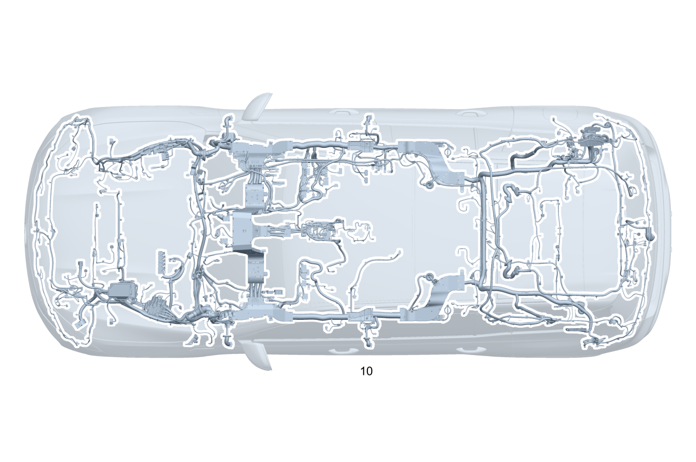

| № | Артикул | Название | Кол. | Примечание | Ограничение |
|---|---|---|---|---|---|
| 10 | A 167 540 25 39 | Электрический жгут (ELEKTRISCHER LEITUNGSSATZ) | 1 | ОСНОВ.ЖГУТ ЭЛЕКТРОПРОВ.НЕСУЩ.ОСНОВ.КУЗ. [-] При заказе указать идент. номер [-] В жгуте проводов предусмотрена возможность подключения соответствующих дополнительных опций согласно производственному номеру а/м | |
| 15 | Q 000000000002 | - Возможен заказ только отдельных компонентов жгута проводов | 1 | ESP® Рулевое управление: Влево | |
| 15 | Q 000000000002 | - Возможен заказ только отдельных компонентов жгута проводов | 1 | ESP® Рулевое управление: Вправо | |
| 15 | Q 000000000002 | - Возможен заказ только отдельных компонентов жгута проводов | 1 | ESP® 48V Рулевое управление: Влево | 93B |
| 15 | Q 000000000002 | - Возможен заказ только отдельных компонентов жгута проводов | 1 | ESP® 48V Рулевое управление: Влево | 93B/94B |
| 15 | Q 000000000002 | - Возможен заказ только отдельных компонентов жгута проводов | 1 | ESP® 48V Рулевое управление: Вправо | 93B |
| 15 | Q 000000000002 | - Возможен заказ только отдельных компонентов жгута проводов | 1 | ESP® 48V Рулевое управление: Вправо | 93B/94B |
| 15 | Q 000000000002 | - Возможен заказ только отдельных компонентов жгута проводов | 1 | Система контроля давления в шинах | (807/808/29X)+475 |
| 15 | Q 000000000002 | - Возможен заказ только отдельных компонентов жгута проводов | 1 | Система контроля давления в шинах | 475 |
| 15 | Q 000000000002 | - Возможен заказ только отдельных компонентов жгута проводов | 1 | Шина данных CAN периферийного оборудования | 807/808/29X |
| 15 | Q 000000000002 | - Возможен заказ только отдельных компонентов жгута проводов | 1 | Шина данных CAN периферийного оборудования | |
| 15 | Q 000000000002 | - Возможен заказ только отдельных компонентов жгута проводов | 1 | Подушка безопасности | (807/808/29X)+(M254/M256/M656/M177+M036/M177+M013) |
| 15 | Q 000000000002 | - Возможен заказ только отдельных компонентов жгута проводов | 1 | Боковая подушка безопасности (задняя) | (807/808/29X)+293+(224/226) |
| 15 | Q 000000000002 | - Возможен заказ только отдельных компонентов жгута проводов | 1 | Аварийный натяжитель ремня безопасности 2\-го ряда сидений | U01+(224/226) |
| 15 | Q 000000000002 | - Возможен заказ только отдельных компонентов жгута проводов | 1 | Аварийный натяжитель ремня безопасности 2\-го ряда сидений | (801/802/803)+U01+(224/226) |
| 15 | Q 000000000002 | - Возможен заказ только отдельных компонентов жгута проводов | 1 | Аварийный натяжитель ремня безопасности 2\-го ряда сидений | U01+(224/226) |
| 15 | Q 000000000002 | - Возможен заказ только отдельных компонентов жгута проводов | 1 | Аварийный натяжитель ремня безопасности 2\-го ряда сидений | (807/808/29X)+U01+(224/226) |
| 15 | Q 000000000002 | - Возможен заказ только отдельных компонентов жгута проводов | 1 | Аварийный натяжитель ремня безопасности 2\-го ряда сидений | (807/808/29X)+U23+226 |
| 15 | Q 000000000002 | - Возможен заказ только отдельных компонентов жгута проводов | 1 | Аварийный натяжитель ремня безопасности 2\-го ряда сидений | (807/808/29X)+U23+224 |
| 15 | Q 000000000002 | - Возможен заказ только отдельных компонентов жгута проводов | 1 | Замок ремня безопасности, третий ряд сидений | U01+845 |
| 15 | Q 000000000002 | - Возможен заказ только отдельных компонентов жгута проводов | 1 | Аварийный натяжитель ремня безопасности, третий ряд сидений | (807/808/29X)+U01+845 |
| 15 | Q 000000000002 | - Возможен заказ только отдельных компонентов жгута проводов | 1 | Аварийный натяжитель ремня безопасности, третий ряд сидений | (807/808/29X)+U23+845 |
| 15 | Q 000000000002 | - Возможен заказ только отдельных компонентов жгута проводов | 1 | Система распознавания занятости сиденья Рулевое управление: Влево | |
| 15 | Q 000000000002 | - Возможен заказ только отдельных компонентов жгута проводов | 1 | Система распознавания занятости сиденья Рулевое управление: Влево | U10 |
| 15 | Q 000000000002 | - Возможен заказ только отдельных компонентов жгута проводов | 1 | Система распознавания занятости сиденья Рулевое управление: Вправо | |
| 15 | Q 000000000002 | - Возможен заказ только отдельных компонентов жгута проводов | 1 | Система распознавания занятости сиденья Рулевое управление: Вправо | U10 |
| 15 | Q 000000000002 | - Возможен заказ только отдельных компонентов жгута проводов | 1 | Датчик веса Рулевое управление: Влево | U10 |
| 15 | Q 000000000002 | - Возможен заказ только отдельных компонентов жгута проводов | 1 | Датчик веса Рулевое управление: Вправо | U10 |
| 15 | Q 000000000002 | - Возможен заказ только отдельных компонентов жгута проводов | 1 | Датчик веса Рулевое управление: Влево | U10+362 |
| 15 | Q 000000000002 | - Возможен заказ только отдельных компонентов жгута проводов | 1 | Датчик веса Рулевое управление: Вправо | U10+362 |
| 15 | Q 000000000002 | - Возможен заказ только отдельных компонентов жгута проводов | 1 | Шина данных CAN системы ESP® Рулевое управление: Влево | |
| 15 | Q 000000000002 | - Возможен заказ только отдельных компонентов жгута проводов | 1 | Шина данных CAN системы ESP® Рулевое управление: Вправо | |
| 15 | Q 000000000002 | - Возможен заказ только отдельных компонентов жгута проводов | 1 | Шина данных CAN системы ESP® Рулевое управление: Влево | 490/465/M256+M016 |
| 15 | Q 000000000002 | - Возможен заказ только отдельных компонентов жгута проводов | 1 | Шина данных CAN системы ESP® Рулевое управление: Вправо | 490/465/M256+M016 |
| 15 | Q 000000000002 | - Возможен заказ только отдельных компонентов жгута проводов | 1 | Шина данных CAN системы ESP® Рулевое управление: Влево | 804/805/806 |
| 15 | Q 000000000002 | - Возможен заказ только отдельных компонентов жгута проводов | 1 | Шина данных CAN системы ESP® Рулевое управление: Влево | |
| 15 | Q 000000000002 | - Возможен заказ только отдельных компонентов жгута проводов | 1 | Шина данных CAN системы ESP® Рулевое управление: Вправо | 804/805/806 |
| 15 | Q 000000000002 | - Возможен заказ только отдельных компонентов жгута проводов | 1 | Шина данных CAN системы ESP® Рулевое управление: Вправо | |
| 15 | Q 000000000002 | - Возможен заказ только отдельных компонентов жгута проводов | 1 | Шина данных CAN системы ESP® Рулевое управление: Влево | (804/805/806)+(490/465/M256+M016) |
| 15 | Q 000000000002 | - Возможен заказ только отдельных компонентов жгута проводов | 1 | Шина данных CAN системы ESP® Рулевое управление: Влево | (490/465/M256+M016) |
| 15 | Q 000000000002 | - Возможен заказ только отдельных компонентов жгута проводов | 1 | Шина данных CAN системы ESP® Рулевое управление: Вправо | (804/805/806)+(490/465/M256+M016) |
| 15 | Q 000000000002 | - Возможен заказ только отдельных компонентов жгута проводов | 1 | Шина данных CAN системы ESP® Рулевое управление: Вправо | (490/465/M256+M016) |
| 15 | Q 000000000002 | - Возможен заказ только отдельных компонентов жгута проводов | 1 | Подушка безопасности | (807/808)+2U8+(M254/M256/M177) |
| 15 | Q 000000000002 | - Возможен заказ только отдельных компонентов жгута проводов | 1 | Аварийный натяжитель ремня безопасности 3\-го ряда сидений | (807/808/29X)+845 |
| 15 | Q 000000000002 | - Возможен заказ только отдельных компонентов жгута проводов | 1 | Аварийный натяжитель ремня безопасности 3\-го ряда сидений | (807/808/29X)+845+(460/494) |
| 15 | Q 000000000002 | - Возможен заказ только отдельных компонентов жгута проводов | 1 | Interior seat belt tensioner LFT2 | (804+054/805/806)+(460/494) |
| 15 | Q 000000000002 | - Возможен заказ только отдельных компонентов жгута проводов | 1 | Interior seat belt tensioner LFT2 | (460/494) |
| 15 | Q 000000000002 | - Возможен заказ только отдельных компонентов жгута проводов | 1 | Модуль обработки сигналов и управления Рулевое управление: Влево | 807+236 |
| 15 | Q 000000000002 | - Возможен заказ только отдельных компонентов жгута проводов | 1 | Модуль обработки сигналов и управления Рулевое управление: Вправо | 807+236 |
| 15 | Q 000000000002 | - Возможен заказ только отдельных компонентов жгута проводов | 1 | Модуль обработки сигналов и управления Рулевое управление: Влево | (807/808/29X)+(236+B19/M036+236+B19) |
| 15 | Q 000000000002 | - Возможен заказ только отдельных компонентов жгута проводов | 1 | Модуль обработки сигналов и управления Рулевое управление: Влево | 807+(236+B19) |
| 15 | Q 000000000002 | - Возможен заказ только отдельных компонентов жгута проводов | 1 | Модуль обработки сигналов и управления Рулевое управление: Вправо | (807/808/29X)+(236+B19/M036+236+B19) |
| 15 | Q 000000000002 | - Возможен заказ только отдельных компонентов жгута проводов | 1 | Модуль обработки сигналов и управления Рулевое управление: Вправо | 807+(236+B19) |
| 15 | Q 000000000002 | - Возможен заказ только отдельных компонентов жгута проводов | 1 | Модуль обработки сигналов и управления Рулевое управление: Влево | 807+B19 |
| 15 | Q 000000000002 | - Возможен заказ только отдельных компонентов жгута проводов | 1 | Модуль обработки сигналов и управления Рулевое управление: Вправо | 807+B19 |
| 15 | Q 000000000002 | - Возможен заказ только отдельных компонентов жгута проводов | 1 | Модуль обработки сигналов и управления Рулевое управление: Влево | (807+057/808/29X)+(236/236+B19) |
| 15 | Q 000000000002 | - Возможен заказ только отдельных компонентов жгута проводов | 1 | Модуль обработки сигналов и управления Рулевое управление: Вправо | (807+057/808/29X)+(236/236+B19) |
| 15 | Q 000000000002 | - Возможен заказ только отдельных компонентов жгута проводов | 1 | Модуль обработки сигналов и управления спереди Рулевое управление: Влево | (807+057/808/29X)+B19+830 |
| 15 | Q 000000000002 | - Возможен заказ только отдельных компонентов жгута проводов | 1 | Электрогидравлическая подвеска Рулевое управление: Влево | (807/808/127)+490 |
| 15 | Q 000000000002 | - Возможен заказ только отдельных компонентов жгута проводов | 1 | Электрогидравлическая подвеска Рулевое управление: Влево | (807/808/29X)+490 |
| 15 | Q 000000000002 | - Возможен заказ только отдельных компонентов жгута проводов | 1 | Электрогидравлическая подвеска Рулевое управление: Вправо | (807/808/127)+490 |
| 15 | Q 000000000002 | - Возможен заказ только отдельных компонентов жгута проводов | 1 | Электрогидравлическая подвеска Рулевое управление: Вправо | (807/808/29X)+490 |
| 15 | Q 000000000002 | - Возможен заказ только отдельных компонентов жгута проводов | 1 | Система стабилизации поперечных кренов кузова | (807/808/127)+465 |
| 15 | Q 000000000002 | - Возможен заказ только отдельных компонентов жгута проводов | 1 | Система стабилизации поперечных кренов кузова | (807/808/29X)+465 |
| 15 | Q 000000000002 | - Возможен заказ только отдельных компонентов жгута проводов | 1 | Пневмобаллон подвески | (807/808/29X)+(M177+M014/M256+M016)+489+465 |
| 15 | Q 000000000002 | - Возможен заказ только отдельных компонентов жгута проводов | 1 | Пневмобаллон подвески | (807/808/29X)+(M177+M014/M256+M016)+489+215+465 |
| 15 | Q 000000000002 | - Возможен заказ только отдельных компонентов жгута проводов | 1 | Пневмобаллон подвески | (M177+M014/M256+M016)+489+215+465 |
| 15 | Q 000000000002 | - Возможен заказ только отдельных компонентов жгута проводов | 1 | Пневмобаллон подвески | (807/808/29X)+(M177+M014/M256+M016)+489+215 |
| 15 | Q 000000000002 | - Возможен заказ только отдельных компонентов жгута проводов | 1 | Пневмобаллон подвески | (M177+M014/M256+M016)+489+215 |
| 15 | Q 000000000002 | - Возможен заказ только отдельных компонентов жгута проводов | 1 | Пневмобаллон подвески | (807/808/29X)+(M177+M014/M256+M016)+489 |
| 15 | Q 000000000002 | - Возможен заказ только отдельных компонентов жгута проводов | 1 | Крепление газового упора | (807/808/127)+489 |
| 15 | Q 000000000002 | - Возможен заказ только отдельных компонентов жгута проводов | 1 | Крепление газового упора | (807/808/29X)+489 |
| 15 | Q 000000000002 | - Возможен заказ только отдельных компонентов жгута проводов | 1 | Кабельный канал | (801/802/803) |
| 15 | Q 000000000002 | - Возможен заказ только отдельных компонентов жгута проводов | 1 | Кабельный канал | |
| 15 | Q 000000000002 | - Возможен заказ только отдельных компонентов жгута проводов | 1 | Направляющая планка | (490/465)+(800+050/801) |
| 15 | Q 000000000002 | - Возможен заказ только отдельных компонентов жгута проводов | 1 | Направляющая планка | (490/465)+(800+050/801) |
| 15 | Q 000000000002 | - Возможен заказ только отдельных компонентов жгута проводов | 1 | Направляющая планка | (490/465) |
| 15 | Q 000000000002 | - Возможен заказ только отдельных компонентов жгута проводов | 1 | Направляющая планка | (800+050/801) |
| 15 | Q 000000000002 | - Возможен заказ только отдельных компонентов жгута проводов | 1 | Направляющая планка | |
| 15 | Q 000000000002 | - Возможен заказ только отдельных компонентов жгута проводов | 1 | Модуль переключения режимов движения Рулевое управление: Влево | (807/808/29X)+(M177+M014/M256+M016) |
| 15 | Q 000000000002 | - Возможен заказ только отдельных компонентов жгута проводов | 1 | Модуль переключения режимов движения Рулевое управление: Вправо | (807/808/29X)+(M177+M014/M256+M016) |
| 15 | Q 000000000002 | - Возможен заказ только отдельных компонентов жгута проводов | 1 | Электрический провод блокировки дифференциала | (807/808/29X)+467 |
| 15 | Q 000000000002 | - Возможен заказ только отдельных компонентов жгута проводов | 1 | Бортовая сеть 48 В: управление / электропитание | (807/808/29X)+B01 |
| 15 | Q 000000000002 | - Возможен заказ только отдельных компонентов жгута проводов | 1 | Бортовая сеть 48 В: управление / электропитание | (807/808/29X)+B01 |
| 15 | Q 000000000002 | - Возможен заказ только отдельных компонентов жгута проводов | 1 | Блок предохранителей и реле 48V | |
| 15 | Q 000000000002 | - Возможен заказ только отдельных компонентов жгута проводов | 1 | Автомобили с бензиновым двигателем | M256+94B |
| 15 | Q 000000000002 | - Возможен заказ только отдельных компонентов жгута проводов | 1 | Автомобили с бензиновым двигателем | (804/805/806)+M256+94B |
| 15 | Q 000000000002 | - Возможен заказ только отдельных компонентов жгута проводов | 1 | Автомобили с бензиновым двигателем | M256+94B |
| 15 | Q 000000000002 | - Возможен заказ только отдельных компонентов жгута проводов | 1 | Радиатор | |
| 15 | Q 000000000002 | - Возможен заказ только отдельных компонентов жгута проводов | 1 | Радиатор | 800+050/801 |
| 15 | Q 000000000002 | - Возможен заказ только отдельных компонентов жгута проводов | 1 | Радиатор | |
| 15 | Q 000000000002 | - Возможен заказ только отдельных компонентов жгута проводов | 1 | Защитная решетка к радиатору, снизу | (807/808/29X)+2U1 |
| 15 | Q 000000000002 | - Возможен заказ только отдельных компонентов жгута проводов | 1 | Компрессор кондиционера \- холодильный бокс | (807+057/808/29X)+(580/581) |
| 15 | Q 000000000002 | - Возможен заказ только отдельных компонентов жгута проводов | 1 | Заслонка в выпускном тракте | (807/808/29X)+M256+94B |
| 15 | Q 000000000002 | - Возможен заказ только отдельных компонентов жгута проводов | 1 | Жгут электропроводки для топливного бака | (807/808/29X)+B01 |
| 15 | Q 000000000002 | - Возможен заказ только отдельных компонентов жгута проводов | 1 | Жгут электропроводки для топливного бака | M256+(460/494/830/835) |
| 15 | Q 000000000002 | - Возможен заказ только отдельных компонентов жгута проводов | 1 | Жгут электропроводки для топливного бака | 802+M256+(460/494/830/835/821) |
| 15 | Q 000000000002 | - Возможен заказ только отдельных компонентов жгута проводов | 1 | Жгут электропроводки для топливного бака | M256+(460/494/830/835/821) |
| 15 | Q 000000000002 | - Возможен заказ только отдельных компонентов жгута проводов | 1 | Жгут электропроводки для топливного бака | M256+94B+(460/494/830/835) |
| 15 | Q 000000000002 | - Возможен заказ только отдельных компонентов жгута проводов | 1 | Жгут электропроводки для топливного бака | M256+94B+(460/494/830/835/821) |
| 15 | Q 000000000002 | - Возможен заказ только отдельных компонентов жгута проводов | 1 | Диагностика топливной системы Рулевое управление: Влево | (807/808/29X)+M256+94B+(460/494/830/835/821) |
| 15 | Q 000000000002 | - Возможен заказ только отдельных компонентов жгута проводов | 1 | Система противоугонной сигнализации (EDW) | (807/808/29X)+882 |
| 15 | Q 000000000002 | - Возможен заказ только отдельных компонентов жгута проводов | 1 | Система противоугонной сигнализации (EDW) | (807/808/29X)+882 |
| 15 | Q 000000000002 | - Возможен заказ только отдельных компонентов жгута проводов | 1 | Система противоугонной сигнализации (EDW) | (6U8/6U9)+800+050 |
| 15 | Q 000000000002 | - Возможен заказ только отдельных компонентов жгута проводов | 1 | Система противоугонной сигнализации (EDW) | (6U8/6U9) |
| 15 | Q 000000000002 | - Возможен заказ только отдельных компонентов жгута проводов | 1 | Система противоугонной сигнализации (EDW) | (801/802/803)+(6U8/6U9) |
| 15 | Q 000000000002 | - Возможен заказ только отдельных компонентов жгута проводов | 1 | Система противоугонной сигнализации (EDW) | (6U8/6U9) |
| 15 | Q 000000000002 | - Возможен заказ только отдельных компонентов жгута проводов | 1 | Блок управления полностью интегрированной системы управления АКП | (807/808/29X)+(M254/M256)+421 |
| 15 | Q 000000000002 | - Возможен заказ только отдельных компонентов жгута проводов | 1 | Полный привод | (807/808/29X)+(M256/M656/M177) |
| 15 | Q 000000000002 | - Возможен заказ только отдельных компонентов жгута проводов | 1 | Сабвуфер Рулевое управление: Влево | |
| 15 | Q 000000000002 | - Возможен заказ только отдельных компонентов жгута проводов | 1 | Сабвуфер Рулевое управление: Вправо | |
| 15 | Q 000000000002 | - Возможен заказ только отдельных компонентов жгута проводов | 1 | Шина данных CAN трансмиссии AMG Рулевое управление: Влево | (802/803/5S5/804)+(M177/M256+M016) |
| 15 | Q 000000000002 | - Возможен заказ только отдельных компонентов жгута проводов | 1 | Шина данных CAN трансмиссии AMG Рулевое управление: Влево | M177/M256+M016 |
| 15 | Q 000000000002 | - Возможен заказ только отдельных компонентов жгута проводов | 1 | Шина данных CAN трансмиссии AMG Рулевое управление: Вправо | (802/803/5S5/804)+(M177/M256+M016) |
| 15 | Q 000000000002 | - Возможен заказ только отдельных компонентов жгута проводов | 1 | Шина данных CAN трансмиссии AMG Рулевое управление: Вправо | M177/M256+M016 |
| 15 | Q 000000000002 | - Возможен заказ только отдельных компонентов жгута проводов | 1 | Шина данных CAN Рулевое управление: Влево | (6U8/6U9)+800+050 |
| 15 | Q 000000000002 | - Возможен заказ только отдельных компонентов жгута проводов | 1 | Шина данных CAN Рулевое управление: Влево | (6U8/6U9) |
| 15 | Q 000000000002 | - Возможен заказ только отдельных компонентов жгута проводов | 1 | Шина данных CAN Рулевое управление: Влево | (6U8/6U9)+(801/802/803) |
| 15 | Q 000000000002 | - Возможен заказ только отдельных компонентов жгута проводов | 1 | Шина данных CAN Рулевое управление: Влево | (6U8/6U9) |
| 15 | Q 000000000002 | - Возможен заказ только отдельных компонентов жгута проводов | 1 | Шина данных CAN Рулевое управление: Влево | 362+(6U8/6U9)+800+050 |
| 15 | Q 000000000002 | - Возможен заказ только отдельных компонентов жгута проводов | 1 | Шина данных CAN Рулевое управление: Влево | 362+(6U8/6U9) |
| 15 | Q 000000000002 | - Возможен заказ только отдельных компонентов жгута проводов | 1 | Шина данных CAN Рулевое управление: Влево | 362+(6U8/6U9)+(801/802/803) |
| 15 | Q 000000000002 | - Возможен заказ только отдельных компонентов жгута проводов | 1 | Шина данных CAN Рулевое управление: Влево | 362+(6U8/6U9) |
| 15 | Q 000000000002 | - Возможен заказ только отдельных компонентов жгута проводов | 1 | Шина данных CAN AMG Рулевое управление: Влево | (802/803/804)+(6U8/6U9)+(M177/M256+M016) |
| 15 | Q 000000000002 | - Возможен заказ только отдельных компонентов жгута проводов | 1 | Шина данных CAN AMG Рулевое управление: Влево | (802/803/804)+(6U8/6U9)+(M177+772/M256+M016) |
| 15 | Q 000000000002 | - Возможен заказ только отдельных компонентов жгута проводов | 1 | Шина данных CAN Рулевое управление: Влево | (802/803/804)+(M177/M256+M016)+(6U8/6U9) |
| 15 | Q 000000000002 | - Возможен заказ только отдельных компонентов жгута проводов | 1 | Шина данных CAN Рулевое управление: Влево | (802/803/804/805)+(M177/M256+M016)+(6U8/6U9) |
| 15 | Q 000000000002 | - Возможен заказ только отдельных компонентов жгута проводов | 1 | Шина данных CAN Рулевое управление: Влево | (M177/M256+M016)+(6U8/6U9) |
| 15 | Q 000000000002 | - Возможен заказ только отдельных компонентов жгута проводов | 1 | Система взимания дорожных сборов | 498/835 |
| 15 | Q 000000000002 | - Возможен заказ только отдельных компонентов жгута проводов | 1 | Система взимания дорожных сборов | 498/835/830+943 |
| 15 | Q 000000000002 | - Возможен заказ только отдельных компонентов жгута проводов | 1 | Система взимания дорожных сборов | (804/805/806)+943 |
| 15 | Q 000000000002 | - Возможен заказ только отдельных компонентов жгута проводов | 1 | Акустическая система | 362 |
| 15 | Q 000000000002 | - Возможен заказ только отдельных компонентов жгута проводов | 1 | Система "Hermes" | (810/811)+362 |
| 15 | Q 000000000002 | - Возможен заказ только отдельных компонентов жгута проводов | 1 | Система "Hermes" | (804/805/806)+362 |
| 15 | Q 000000000002 | - Возможен заказ только отдельных компонентов жгута проводов | 1 | Система "Hermes" | 362 |
| 15 | Q 000000000002 | - Возможен заказ только отдельных компонентов жгута проводов | 1 | Система "Hermes" | (804/805/806)+810+362 |
| 15 | Q 000000000002 | - Возможен заказ только отдельных компонентов жгута проводов | 1 | Система "Hermes" | 810+362 |
| 15 | Q 000000000002 | - Возможен заказ только отдельных компонентов жгута проводов | 1 | Система "Hermes" | (804/805/806)+811+362 |
| 15 | Q 000000000002 | - Возможен заказ только отдельных компонентов жгута проводов | 1 | Система "Hermes" | 811+362 |
| 15 | Q 000000000002 | - Возможен заказ только отдельных компонентов жгута проводов | 1 | Блок управления усилителя акустической системы | (807/808/29X)+(382/383) |
| 15 | Q 000000000002 | - Возможен заказ только отдельных компонентов жгута проводов | 1 | Блок управления усилителя акустической системы | (807/808/29X)+810+(382/383) |
| 15 | Q 000000000002 | - Возможен заказ только отдельных компонентов жгута проводов | 1 | Блок управления усилителя акустической системы | (807/808/29X)+811+(382/383) |
| 15 | Q 000000000002 | - Возможен заказ только отдельных компонентов жгута проводов | 1 | Акустическая система | 810/811/97B/M177 |
| 15 | Q 000000000002 | - Возможен заказ только отдельных компонентов жгута проводов | 1 | Акустическая система | 810/811/M177 |
| 15 | Q 000000000002 | - Возможен заказ только отдельных компонентов жгута проводов | 1 | Акустическая система | 810/811 |
| 15 | Q 000000000002 | - Возможен заказ только отдельных компонентов жгута проводов | 1 | Акустическая система | (804/805/806)+810 |
| 15 | Q 000000000002 | - Возможен заказ только отдельных компонентов жгута проводов | 1 | Акустическая система | 810 |
| 15 | Q 000000000002 | - Возможен заказ только отдельных компонентов жгута проводов | 1 | Акустическая система | (804/805/806)+811 |
| 15 | Q 000000000002 | - Возможен заказ только отдельных компонентов жгута проводов | 1 | Акустическая система | 811 |
| 15 | Q 000000000002 | - Возможен заказ только отдельных компонентов жгута проводов | 1 | Зарядное устройство телефона | (807/808/29X)+897 |
| 15 | Q 000000000002 | - Возможен заказ только отдельных компонентов жгута проводов | 1 | Зарядное устройство телефона Рулевое управление: Влево | (807/808/29X)+897+2K0 |
| 15 | Q 000000000002 | - Возможен заказ только отдельных компонентов жгута проводов | 1 | Антенный кабель (SDARS) | (802+052/803)+536 |
| 15 | Q 000000000002 | - Возможен заказ только отдельных компонентов жгута проводов | 1 | Антенный кабель (SDARS) | 536 |
| 15 | Q 000000000002 | - Возможен заказ только отдельных компонентов жгута проводов | 1 | USB, зарядная розетка | 72B |
| 15 | Q 000000000002 | - Возможен заказ только отдельных компонентов жгута проводов | 1 | USB, зарядная розетка | 72B+P08 |
| 15 | Q 000000000002 | - Возможен заказ только отдельных компонентов жгута проводов | 1 | USB, зарядная розетка | 72B+845 |
| 15 | Q 000000000002 | - Возможен заказ только отдельных компонентов жгута проводов | 1 | USB, зарядная розетка | 72B+845+P08/72B+224+845 |
| 15 | Q 000000000002 | - Возможен заказ только отдельных компонентов жгута проводов | 1 | USB, зарядная розетка | (801/802/803/804)+72B |
| 15 | Q 000000000002 | - Возможен заказ только отдельных компонентов жгута проводов | 1 | USB, зарядная розетка | 72B |
| 15 | Q 000000000002 | - Возможен заказ только отдельных компонентов жгута проводов | 1 | USB, зарядная розетка | (801/802/803/804)+(72B+845/72B+224+845) |
| 15 | Q 000000000002 | - Возможен заказ только отдельных компонентов жгута проводов | 1 | USB, зарядная розетка | (72B+845/72B+224+845) |
| 15 | Q 000000000002 | - Возможен заказ только отдельных компонентов жгута проводов | 1 | USB\-разъем | (72B+845/72B+224+845)+U82 |
| 15 | Q 000000000002 | - Возможен заказ только отдельных компонентов жгута проводов | 1 | USB\-разъем модуля подключения мультимедийных устройств посередине в центральной консоли в задней части салона | (807/808/29X)+72B+226+845+U82 |
| 15 | Q 000000000002 | - Возможен заказ только отдельных компонентов жгута проводов | 1 | USB\-разъем модуля подключения мультимедийных устройств посередине в центральной консоли в задней части салона | (807/808/29X)+72B+(224/226+395)+845+U82 |
| 15 | Q 000000000002 | - Возможен заказ только отдельных компонентов жгута проводов | 1 | USB\-разъем модуля подключения мультимедийных устройств посередине в центральной консоли в задней части салона | (807/808/29X)+72B+(224/226/226+395)+845+U82+854 |
| 15 | Q 000000000002 | - Возможен заказ только отдельных компонентов жгута проводов | 1 | Мультимедийная система для задних пассажиров | (807/808/29X)+(735/854) |
| 15 | Q 000000000002 | - Возможен заказ только отдельных компонентов жгута проводов | 1 | Сиденье повышенной комфортности | P08 |
| 15 | Q 000000000002 | - Возможен заказ только отдельных компонентов жгута проводов | 1 | Сиденье повышенной комфортности | P08+(801/802/803/804) |
| 15 | Q 000000000002 | - Возможен заказ только отдельных компонентов жгута проводов | 1 | Сиденье повышенной комфортности | P08 |
| 15 | Q 000000000002 | - Возможен заказ только отдельных компонентов жгута проводов | 1 | Сиденье повышенной комфортности | (804/805/806)+P08 |
| 15 | Q 000000000002 | - Возможен заказ только отдельных компонентов жгута проводов | 1 | Сиденье повышенной комфортности | P08 |
| 15 | Q 000000000002 | - Возможен заказ только отдельных компонентов жгута проводов | 1 | Системы комфорта | (807/808/29X)+(395/395+854) |
| 15 | Q 000000000002 | - Возможен заказ только отдельных компонентов жгута проводов | 1 | Системы комфорта | (807/808/29X)+854 |
| 15 | Q 000000000002 | - Возможен заказ только отдельных компонентов жгута проводов | 1 | Системы комфорта | (807/808/29X) |
| 15 | Q 000000000002 | - Возможен заказ только отдельных компонентов жгута проводов | 1 | Шина данных CAN | 804/805/806 |
| 15 | Q 000000000002 | - Возможен заказ только отдельных компонентов жгута проводов | 1 | Шина данных CAN | |
| 15 | Q 000000000002 | - Возможен заказ только отдельных компонентов жгута проводов | 1 | KEYLESS Entry Рулевое управление: Влево | (807/808/29X)+896 |
| 15 | Q 000000000002 | - Возможен заказ только отдельных компонентов жгута проводов | 1 | KEYLESS Entry Рулевое управление: Влево | (807/808/29X)+896+811 |
| 15 | Q 000000000002 | - Возможен заказ только отдельных компонентов жгута проводов | 1 | KEYLESS Entry Рулевое управление: Вправо | (807/808/29X)+896 |
| 15 | Q 000000000002 | - Возможен заказ только отдельных компонентов жгута проводов | 1 | KEYLESS Entry Рулевое управление: Вправо | (807/808/29X)+896+811 |
| 15 | Q 000000000002 | - Возможен заказ только отдельных компонентов жгута проводов | 1 | Камера сзади | 218/501 |
| 15 | Q 000000000002 | - Возможен заказ только отдельных компонентов жгута проводов | 1 | Камера сзади | 501 |
| 15 | Q 000000000002 | - Возможен заказ только отдельных компонентов жгута проводов | 1 | Мультифункциональная камера | 233/51B |
| 15 | Q 000000000002 | - Возможен заказ только отдельных компонентов жгута проводов | 1 | Мультифункциональная камера | 233/51B/55B |
| 15 | Q 000000000002 | - Возможен заказ только отдельных компонентов жгута проводов | 1 | Мультифункциональная камера | 804+(233/266/(233/266)+(243/608/628/513/504/239/258)) |
| 15 | Q 000000000002 | - Возможен заказ только отдельных компонентов жгута проводов | 1 | Мультифункциональная камера | (233/266/(233/266)+(243/608/628/513/504/239/258)) |
| 15 | Q 000000000002 | - Возможен заказ только отдельных компонентов жгута проводов | 1 | Мультифункциональная камера | (804+054/805/806)+233+(243/608/628/513/504) |
| 15 | Q 000000000002 | - Возможен заказ только отдельных компонентов жгута проводов | 1 | Мультифункциональная камера | 233+(243/608/628/513/504) |
| 15 | Q 000000000002 | - Возможен заказ только отдельных компонентов жгута проводов | 1 | Камера системы управления жестами (передняя) | 77B |
| 15 | Q 000000000002 | - Возможен заказ только отдельных компонентов жгута проводов | 1 | Система "Distronic" / система предупреждения о столкновении | 239/258 |
| 15 | Q 000000000002 | - Возможен заказ только отдельных компонентов жгута проводов | 1 | Система "Distronic" / система предупреждения о столкновении | (804/805/806)+((239/258)/M036+(239/258)) |
| 15 | Q 000000000002 | - Возможен заказ только отдельных компонентов жгута проводов | 1 | Система "Distronic" / система предупреждения о столкновении | (804/805/806)+(239/258) |
| 15 | Q 000000000002 | - Возможен заказ только отдельных компонентов жгута проводов | 1 | Система "Distronic" / система предупреждения о столкновении | (239/258) |
| 15 | Q 000000000002 | - Возможен заказ только отдельных компонентов жгута проводов | 1 | Задний радарный датчик | 234 |
| 15 | Q 000000000002 | - Возможен заказ только отдельных компонентов жгута проводов | 1 | Задний радарный датчик | (804)+234 |
| 15 | Q 000000000002 | - Возможен заказ только отдельных компонентов жгута проводов | 1 | Задний радарный датчик | 234 |
| 15 | Q 000000000002 | - Возможен заказ только отдельных компонентов жгута проводов | 1 | Задний радарный датчик | (804+054/805/806)+234 |
| 15 | Q 000000000002 | - Возможен заказ только отдельных компонентов жгута проводов | 1 | Задний радарный датчик | 234 |
| 15 | Q 000000000002 | - Возможен заказ только отдельных компонентов жгута проводов | 1 | Подсвеченная звезда на облицовке радиатора | (807/808/29X)+24U |
| 15 | Q 000000000002 | - Возможен заказ только отдельных компонентов жгута проводов | 1 | Плафон освещения (задний) Рулевое управление: Влево | 613/631/641 |
| 15 | Q 000000000002 | - Возможен заказ только отдельных компонентов жгута проводов | 1 | Плафон освещения (задний) Рулевое управление: Вправо | 613/631/641 |
| 15 | Q 000000000002 | - Возможен заказ только отдельных компонентов жгута проводов | 1 | Плафон освещения (задний) Рулевое управление: Влево | 620/642 |
| 15 | Q 000000000002 | - Возможен заказ только отдельных компонентов жгута проводов | 1 | Плафон освещения (задний) Рулевое управление: Влево | (620/632/640)+(460/494) |
| 15 | Q 000000000002 | - Возможен заказ только отдельных компонентов жгута проводов | 1 | Плафон освещения (задний) | (613/620/631/632/640/641/642)+830 |
| 15 | Q 000000000002 | - Возможен заказ только отдельных компонентов жгута проводов | 1 | Плафон освещения (задний) | (620/632/640/642)+(800+050/801) |
| 15 | Q 000000000002 | - Возможен заказ только отдельных компонентов жгута проводов | 1 | Плафон освещения (задний) | (620/632/640/642) |
| 15 | Q 000000000002 | - Возможен заказ только отдельных компонентов жгута проводов | 1 | Плафон освещения (задний) | (632/640/642) |
| 15 | Q 000000000002 | - Возможен заказ только отдельных компонентов жгута проводов | 1 | Плафон освещения (задний) | (613/631/641)+(800+050/801) |
| 15 | Q 000000000002 | - Возможен заказ только отдельных компонентов жгута проводов | 1 | Плафон освещения (задний) | (631/641) |
| 15 | Q 000000000002 | - Возможен заказ только отдельных компонентов жгута проводов | 1 | Плафон освещения (задний) | (620/632/640/642)+(494/460)+(800+050/801) |
| 15 | Q 000000000002 | - Возможен заказ только отдельных компонентов жгута проводов | 1 | Плафон освещения (задний) | (620/632/640/642)+(494/460) |
| 15 | Q 000000000002 | - Возможен заказ только отдельных компонентов жгута проводов | 1 | Плафон освещения (задний) | (632/640/642)+(494/460) |
| 15 | Q 000000000002 | - Возможен заказ только отдельных компонентов жгута проводов | 1 | Плафон освещения (задний) | (620/632/640/642)+830+(800+050/801) |
| 15 | Q 000000000002 | - Возможен заказ только отдельных компонентов жгута проводов | 1 | Плафон освещения (задний) | (620/632/640/642)+830 |
| 15 | Q 000000000002 | - Возможен заказ только отдельных компонентов жгута проводов | 1 | Плафон освещения (задний) | (632/640/642)+830 |
| 15 | Q 000000000002 | - Возможен заказ только отдельных компонентов жгута проводов | 1 | Плафон освещения (задний) | (802/803)+(632/640/642) |
| 15 | Q 000000000002 | - Возможен заказ только отдельных компонентов жгута проводов | 1 | Плафон освещения (задний) | (632/640/642) |
| 15 | Q 000000000002 | - Возможен заказ только отдельных компонентов жгута проводов | 1 | Плафон освещения (задний) | (802/803)+(631/641) |
| 15 | Q 000000000002 | - Возможен заказ только отдельных компонентов жгута проводов | 1 | Плафон освещения (задний) | (631/641) |
| 15 | Q 000000000002 | - Возможен заказ только отдельных компонентов жгута проводов | 1 | Плафон освещения (задний) | (802/803)+(632/640/642)+(494/460) |
| 15 | Q 000000000002 | - Возможен заказ только отдельных компонентов жгута проводов | 1 | Плафон освещения (задний) | (632/640/642)+(494/460) |
| 15 | Q 000000000002 | - Возможен заказ только отдельных компонентов жгута проводов | 1 | Задний фонарь Рулевое управление: Влево | 620/640/642 |
| 15 | Q 000000000002 | - Возможен заказ только отдельных компонентов жгута проводов | 1 | Задний фонарь Рулевое управление: Влево | 640/642 |
| 15 | Q 000000000002 | - Возможен заказ только отдельных компонентов жгута проводов | 1 | Задний фонарь Рулевое управление: Влево | 632/640/642 |
| 15 | Q 000000000002 | - Возможен заказ только отдельных компонентов жгута проводов | 1 | Задний фонарь | 631/641 |
| 15 | Q 000000000002 | - Возможен заказ только отдельных компонентов жгута проводов | 1 | Задний фонарь | (613/620/631/632/641/642)+830 |
| 15 | Q 000000000002 | - Возможен заказ только отдельных компонентов жгута проводов | 1 | Задний фонарь | (631/632/641/642)+830 |
| 15 | Q 000000000002 | - Возможен заказ только отдельных компонентов жгута проводов | 1 | Задний фонарь Рулевое управление: Влево | (802/803)+(632/640/642) |
| 15 | Q 000000000002 | - Возможен заказ только отдельных компонентов жгута проводов | 1 | Задний фонарь | (632/640/642) |
| 15 | Q 000000000002 | - Возможен заказ только отдельных компонентов жгута проводов | 1 | Задний фонарь | (802/803)+(631/641) |
| 15 | Q 000000000002 | - Возможен заказ только отдельных компонентов жгута проводов | 1 | Задний фонарь | (631/641) |
| 15 | Q 000000000002 | - Возможен заказ только отдельных компонентов жгута проводов | 1 | Задний фонарь | (804/805/806)+(632/640/642) |
| 15 | Q 000000000002 | - Возможен заказ только отдельных компонентов жгута проводов | 1 | Задний фонарь | (632/640/642) |
| 15 | Q 000000000002 | - Возможен заказ только отдельных компонентов жгута проводов | 1 | Задний фонарь | (804/805/806)+(631/641) |
| 15 | Q 000000000002 | - Возможен заказ только отдельных компонентов жгута проводов | 1 | Задний фонарь | (631/641) |
| 15 | Q 000000000002 | - Возможен заказ только отдельных компонентов жгута проводов | 1 | Фара слева; правостороннее движение | (807/808/29X)+(316/318) |
| 15 | Q 000000000002 | - Возможен заказ только отдельных компонентов жгута проводов | 1 | Фара справа; левостороннее движение | (807/808/29X)+317 |
| 15 | Q 000000000002 | - Возможен заказ только отдельных компонентов жгута проводов | 1 | Указатель поворота | (800+050/801) |
| 15 | Q 000000000002 | - Возможен заказ только отдельных компонентов жгута проводов | 1 | Указатель поворота | |
| 15 | Q 000000000002 | - Возможен заказ только отдельных компонентов жгута проводов | 1 | Указатель поворота | 804/805/806 |
| 15 | Q 000000000002 | - Возможен заказ только отдельных компонентов жгута проводов | 1 | Указатель поворота | |
| 15 | Q 000000000002 | - Возможен заказ только отдельных компонентов жгута проводов | 1 | Диагностика заднего элемента наружного освещения | (800+050/801) |
| 15 | Q 000000000002 | - Возможен заказ только отдельных компонентов жгута проводов | 1 | Диагностика заднего элемента наружного освещения | |
| 15 | Q 000000000002 | - Возможен заказ только отдельных компонентов жгута проводов | 1 | Диагностика заднего элемента наружного освещения | 804/805/806 |
| 15 | Q 000000000002 | - Возможен заказ только отдельных компонентов жгута проводов | 1 | Диагностика заднего элемента наружного освещения | |
| 15 | Q 000000000002 | - Возможен заказ только отдельных компонентов жгута проводов | 1 | Блок управления регулировки сиденья водителя Рулевое управление: Влево | 807 |
| 15 | Q 000000000002 | - Возможен заказ только отдельных компонентов жгута проводов | 1 | Блок управления регулировки сиденья водителя Рулевое управление: Влево | 807+057/808/29X |
| 15 | Q 000000000002 | - Возможен заказ только отдельных компонентов жгута проводов | 1 | Блок управления регулировки сиденья водителя Рулевое управление: Вправо | 807 |
| 15 | Q 000000000002 | - Возможен заказ только отдельных компонентов жгута проводов | 1 | Регулировка поясничного подпора Рулевое управление: Влево | 399/275+U22/254+U22 |
| 15 | Q 000000000002 | - Возможен заказ только отдельных компонентов жгута проводов | 1 | Регулировка поясничного подпора Рулевое управление: Влево | 399/275+U22/254+U22/U22+401 |
| 15 | Q 000000000002 | - Возможен заказ только отдельных компонентов жгута проводов | 1 | Регулировка поясничного подпора Рулевое управление: Вправо | U22/399 |
| 15 | Q 000000000002 | - Возможен заказ только отдельных компонентов жгута проводов | 1 | Регулировка поясничного подпора Рулевое управление: Влево | U22 |
| 15 | Q 000000000002 | - Возможен заказ только отдельных компонентов жгута проводов | 1 | Регулировка поясничного подпора Рулевое управление: Влево | (399/U22)+(802/803/804) |
| 15 | Q 000000000002 | - Возможен заказ только отдельных компонентов жгута проводов | 1 | Регулировка поясничного подпора Рулевое управление: Влево | 399/U22 |
| 15 | Q 000000000002 | - Возможен заказ только отдельных компонентов жгута проводов | 1 | Регулировка поясничного подпора Рулевое управление: Вправо | (399/U22)+(802/803/804) |
| 15 | Q 000000000002 | - Возможен заказ только отдельных компонентов жгута проводов | 1 | Регулировка поясничного подпора Рулевое управление: Вправо | 399/U22 |
| 15 | Q 000000000002 | - Возможен заказ только отдельных компонентов жгута проводов | 1 | 2\-й ряд сидений в пассажирском салоне | (807/808/29X)+406 |
| 15 | Q 000000000002 | - Возможен заказ только отдельных компонентов жгута проводов | 1 | 2\-й ряд сидений в пассажирском салоне | (807/808/29X)+406+399 |
| 15 | Q 000000000002 | - Возможен заказ только отдельных компонентов жгута проводов | 1 | Подогрев передних сидений Рулевое управление: Влево | 902 |
| 15 | Q 000000000002 | - Возможен заказ только отдельных компонентов жгута проводов | 1 | Подогрев передних сидений Рулевое управление: Вправо | 902 |
| 15 | Q 000000000002 | - Возможен заказ только отдельных компонентов жгута проводов | 1 | Блок управления передним сиденьем Рулевое управление: Влево | (807/808/29X)+902 |
| 15 | Q 000000000002 | - Возможен заказ только отдельных компонентов жгута проводов | 1 | Блок управления передним сиденьем Рулевое управление: Вправо | (807/808/29X)+902 |
| 15 | Q 000000000002 | - Возможен заказ только отдельных компонентов жгута проводов | 1 | Подогрев задних сидений | 872 |
| 15 | Q 000000000002 | - Возможен заказ только отдельных компонентов жгута проводов | 1 | Подогрев и вентиляция сидений / подогрев полуавтоматического сиденья | 402 |
| 15 | Q 000000000002 | - Возможен заказ только отдельных компонентов жгута проводов | 1 | Вентиляция сидений | (801/802/803)+402 |
| 15 | Q 000000000002 | - Возможен заказ только отдельных компонентов жгута проводов | 1 | Вентиляция сидений | 402 |
| 15 | Q 000000000002 | - Возможен заказ только отдельных компонентов жгута проводов | 1 | Подогрев задних сидений | (801/802/803)+872 |
| 15 | Q 000000000002 | - Возможен заказ только отдельных компонентов жгута проводов | 1 | Подогрев задних сидений | 872 |
| 15 | Q 000000000002 | - Возможен заказ только отдельных компонентов жгута проводов | 1 | Подогрев сиденья для третьего ряда сидений | 886 |
| 15 | Q 000000000002 | - Возможен заказ только отдельных компонентов жгута проводов | 1 | Подогрев сиденья для третьего ряда сидений | 886+(800+050/801) |
| 15 | Q 000000000002 | - Возможен заказ только отдельных компонентов жгута проводов | 1 | Подогрев сиденья для третьего ряда сидений | 886 |
| 15 | Q 000000000002 | - Возможен заказ только отдельных компонентов жгута проводов | 1 | Подогрев сиденья для третьего ряда сидений | (807/808/29X)+886 |
| 15 | Q 000000000002 | - Возможен заказ только отдельных компонентов жгута проводов | 1 | Механизм регулировки заднего сиденья электрический | 224 |
| 15 | Q 000000000002 | - Возможен заказ только отдельных компонентов жгута проводов | 1 | Механизм регулировки заднего сиденья электрический | 226 |
| 15 | Q 000000000002 | - Возможен заказ только отдельных компонентов жгута проводов | 1 | Механизм регулировки заднего сиденья электрический | 224+(800+050) |
| 15 | Q 000000000002 | - Возможен заказ только отдельных компонентов жгута проводов | 1 | Механизм регулировки заднего сиденья электрический | 224 |
| 15 | Q 000000000002 | - Возможен заказ только отдельных компонентов жгута проводов | 1 | Механизм регулировки заднего сиденья электрический | 226+(800+050/801) |
| 15 | Q 000000000002 | - Возможен заказ только отдельных компонентов жгута проводов | 1 | Механизм регулировки заднего сиденья электрический | 226+(800+050) |
| 15 | Q 000000000002 | - Возможен заказ только отдельных компонентов жгута проводов | 1 | Механизм регулировки заднего сиденья электрический | 226 |
| 15 | Q 000000000002 | - Возможен заказ только отдельных компонентов жгута проводов | 1 | Механизм регулировки заднего сиденья электрический | (801/802/803)+224 |
| 15 | Q 000000000002 | - Возможен заказ только отдельных компонентов жгута проводов | 1 | Механизм регулировки заднего сиденья электрический | 224 |
| 15 | Q 000000000002 | - Возможен заказ только отдельных компонентов жгута проводов | 1 | Механизм регулировки заднего сиденья электрический | (801/802/803)+226 |
| 15 | Q 000000000002 | - Возможен заказ только отдельных компонентов жгута проводов | 1 | Механизм регулировки заднего сиденья электрический | 226 |
| 15 | Q 000000000002 | - Возможен заказ только отдельных компонентов жгута проводов | 1 | Механизм регулировки заднего сиденья электрический | (807/808/29X)+224 |
| 15 | Q 000000000002 | - Возможен заказ только отдельных компонентов жгута проводов | 1 | Механизм регулировки заднего сиденья электрический | (807/808/29X)+226 |
| 15 | Q 000000000002 | - Возможен заказ только отдельных компонентов жгута проводов | 1 | 3\-й ряд сидений | 845 |
| 15 | Q 000000000002 | - Возможен заказ только отдельных компонентов жгута проводов | 1 | 3\-й ряд сидений | (801/802/803)+845 |
| 15 | Q 000000000002 | - Возможен заказ только отдельных компонентов жгута проводов | 1 | 3\-й ряд сидений | 845 |
| 15 | Q 000000000002 | - Возможен заказ только отдельных компонентов жгута проводов | 1 | 3\-й ряд сидений | (807/808/29X)+845 |
| 15 | Q 000000000002 | - Возможен заказ только отдельных компонентов жгута проводов | 1 | Антенна KEYLESS\-GO (в центральной консоли) | |
| 15 | Q 000000000002 | - Возможен заказ только отдельных компонентов жгута проводов | 1 | Антенна KEYLESS\-GO (в центральной консоли) | 94B |
| 15 | Q 000000000002 | - Возможен заказ только отдельных компонентов жгута проводов | 1 | Функция пуска двигателя системы "Keyless\-Go" Рулевое управление: Влево | 889 |
| 15 | Q 000000000002 | - Возможен заказ только отдельных компонентов жгута проводов | 1 | Функция пуска двигателя системы "Keyless\-Go" Рулевое управление: Влево | 889+B01 |
| 15 | Q 000000000002 | - Возможен заказ только отдельных компонентов жгута проводов | 1 | Функция пуска двигателя системы "Keyless\-Go" Рулевое управление: Вправо | 889 |
| 15 | Q 000000000002 | - Возможен заказ только отдельных компонентов жгута проводов | 1 | Функция пуска двигателя системы "Keyless\-Go" Рулевое управление: Вправо | 889+B01 |
| 15 | Q 000000000002 | - Возможен заказ только отдельных компонентов жгута проводов | 1 | Адаптерный кабель KEYLESS\-GO Рулевое управление: Влево | 896 |
| 15 | Q 000000000002 | - Возможен заказ только отдельных компонентов жгута проводов | 2 | Адаптерный кабель KEYLESS\-GO | (807/808/29X)+889 |
| 15 | Q 000000000002 | - Возможен заказ только отдельных компонентов жгута проводов | 1 | Адаптерный кабель KEYLESS\-GO Рулевое управление: Вправо | 896 |
| 15 | Q 000000000002 | - Возможен заказ только отдельных компонентов жгута проводов | 1 | Адаптерный кабель KEYLESS\-GO Рулевое управление: Влево | 889+896 |
| 15 | Q 000000000002 | - Возможен заказ только отдельных компонентов жгута проводов | 1 | Адаптерный кабель KEYLESS\-GO Рулевое управление: Вправо | 889+896 |
| 15 | Q 000000000002 | - Возможен заказ только отдельных компонентов жгута проводов | 1 | Дистанционное закрывание крышки багажника | 830/871 |
| 15 | Q 000000000002 | - Возможен заказ только отдельных компонентов жгута проводов | 1 | Дистанционное закрывание крышки багажника | (802/803/804)+871 |
| 15 | Q 000000000002 | - Возможен заказ только отдельных компонентов жгута проводов | 1 | Дистанционное закрывание крышки багажника | 871 |
| 15 | Q 000000000002 | - Возможен заказ только отдельных компонентов жгута проводов | 1 | Кнопочный выключатель KEYLESS\-GO, крышка багажника | (807/808/29X)+890 |
| 15 | Q 000000000002 | - Возможен заказ только отдельных компонентов жгута проводов | 1 | Электродвигатель панорамной крыши со сдвижным люком Рулевое управление: Влево | (807/808/29X)+413 |
| 15 | Q 000000000002 | - Возможен заказ только отдельных компонентов жгута проводов | 1 | Электродвигатель панорамной крыши со сдвижным люком Рулевое управление: Вправо | (807/808/29X)+413 |
| 15 | Q 000000000002 | - Возможен заказ только отдельных компонентов жгута проводов | 1 | Электронный замок зажигания | |
| 15 | Q 000000000002 | - Возможен заказ только отдельных компонентов жгута проводов | 1 | Электронный замок зажигания | |
| 15 | Q 000000000002 | - Возможен заказ только отдельных компонентов жгута проводов | 1 | Электронный замок зажигания | 896/M177/M256+M016 |
| 15 | Q 000000000002 | - Возможен заказ только отдельных компонентов жгута проводов | 1 | Электронный замок зажигания | M177/M256+M016 |
| 15 | Q 000000000002 | - Возможен заказ только отдельных компонентов жгута проводов | 1 | Штекерное соединение: система зажигания | |
| 15 | Q 000000000002 | - Возможен заказ только отдельных компонентов жгута проводов | 1 | Штекерное соединение: система зажигания | |
| 15 | Q 000000000002 | - Возможен заказ только отдельных компонентов жгута проводов | 1 | Штекерное соединение: система зажигания | 889/896/M177/M256+M016 |
| 15 | Q 000000000002 | - Возможен заказ только отдельных компонентов жгута проводов | 1 | Штекерное соединение: система зажигания | 889/M177/M256+M016 |
| 15 | Q 000000000002 | - Возможен заказ только отдельных компонентов жгута проводов | 1 | Блок управления электронного замка зажигания (EZS) | 807/808/29X |
| 15 | Q 000000000002 | - Возможен заказ только отдельных компонентов жгута проводов | 1 | "Flexray" VAR 1 Рулевое управление: Влево | 807/808/29X |
| 15 | Q 000000000002 | - Возможен заказ только отдельных компонентов жгута проводов | 1 | "Flexray" VAR 1 Рулевое управление: Вправо | 807/808/29X |
| 15 | Q 000000000002 | - Возможен заказ только отдельных компонентов жгута проводов | 1 | "Flexray" VAR 2 Рулевое управление: Влево | 807/808/29X |
| 15 | Q 000000000002 | - Возможен заказ только отдельных компонентов жгута проводов | 1 | "Flexray" VAR 2 Рулевое управление: Вправо | 807/808/29X |
| 15 | Q 000000000002 | - Возможен заказ только отдельных компонентов жгута проводов | 1 | Шина данных CAN головного устройства | 380 |
| 15 | Q 000000000002 | - Возможен заказ только отдельных компонентов жгута проводов | 1 | Шина данных CAN головного устройства | 804 |
| 15 | Q 000000000002 | - Возможен заказ только отдельных компонентов жгута проводов | 1 | Автономный отопитель | 228 |
| 15 | Q 000000000002 | - Возможен заказ только отдельных компонентов жгута проводов | 1 | Автономный отопитель | 228+B01 |
| 15 | Q 000000000002 | - Возможен заказ только отдельных компонентов жгута проводов | 1 | Автономный отопитель | (804/805/806)+228 |
| 15 | Q 000000000002 | - Возможен заказ только отдельных компонентов жгута проводов | 1 | Автономный отопитель | 228 |
| 15 | Q 000000000002 | - Возможен заказ только отдельных компонентов жгута проводов | 1 | Автономный отопитель | (804/805/806)+228+B01 |
| 15 | Q 000000000002 | - Возможен заказ только отдельных компонентов жгута проводов | 1 | Автономный отопитель | 228+B01 |
| 15 | Q 000000000002 | - Возможен заказ только отдельных компонентов жгута проводов | 1 | Автономный отопитель | (807/808/29X)+228 |
| 15 | Q 000000000002 | - Возможен заказ только отдельных компонентов жгута проводов | 1 | Связь по шине данных LIN с климатической системой | (807/808/29X)+(228/581/ME10/M656+94B) |
| 15 | Q 000000000002 | - Возможен заказ только отдельных компонентов жгута проводов | 1 | Связь по шине данных LIN с климатической системой | M256 |
| 15 | Q 000000000002 | - Возможен заказ только отдельных компонентов жгута проводов | 1 | Связь по шине данных LIN с климатической системой | (802/803/804)+M256 |
| 15 | Q 000000000002 | - Возможен заказ только отдельных компонентов жгута проводов | 1 | Связь по шине данных LIN с климатической системой | M256 |
| 15 | Q 000000000002 | - Возможен заказ только отдельных компонентов жгута проводов | 1 | Связь по шине данных LIN с климатической системой | 228+M256 |
| 15 | Q 000000000002 | - Возможен заказ только отдельных компонентов жгута проводов | 1 | Связь по шине данных LIN с климатической системой | (802/803/804)+228+M256 |
| 15 | Q 000000000002 | - Возможен заказ только отдельных компонентов жгута проводов | 1 | Связь по шине данных LIN с климатической системой | 228+M256 |
| 15 | Q 000000000002 | - Возможен заказ только отдельных компонентов жгута проводов | 1 | Связь по шине данных LIN с климатической системой | 597+M256 |
| 15 | Q 000000000002 | - Возможен заказ только отдельных компонентов жгута проводов | 1 | Связь по шине данных LIN с климатической системой | (802/803/804)+597+M256 |
| 15 | Q 000000000002 | - Возможен заказ только отдельных компонентов жгута проводов | 1 | Связь по шине данных LIN с климатической системой | 597+M256 |
| 15 | Q 000000000002 | - Возможен заказ только отдельных компонентов жгута проводов | 1 | Связь по шине данных LIN с климатической системой | 228+597+M256 |
| 15 | Q 000000000002 | - Возможен заказ только отдельных компонентов жгута проводов | 1 | Связь по шине данных LIN с климатической системой | (802/803/804)+228+597+M256 |
| 15 | Q 000000000002 | - Возможен заказ только отдельных компонентов жгута проводов | 1 | Связь по шине данных LIN с климатической системой | 228+597+M256 |
| 15 | Q 000000000002 | - Возможен заказ только отдельных компонентов жгута проводов | 1 | Связь по шине данных LIN с климатической системой | 582+M256 |
| 15 | Q 000000000002 | - Возможен заказ только отдельных компонентов жгута проводов | 1 | Связь по шине данных LIN с климатической системой | (802/803/804)+582+M256 |
| 15 | Q 000000000002 | - Возможен заказ только отдельных компонентов жгута проводов | 1 | Связь по шине данных LIN с климатической системой | 582+M256 |
| 15 | Q 000000000002 | - Возможен заказ только отдельных компонентов жгута проводов | 1 | Связь по шине данных LIN с климатической системой | 582+228+M256 |
| 15 | Q 000000000002 | - Возможен заказ только отдельных компонентов жгута проводов | 1 | Связь по шине данных LIN с климатической системой | (802/803/804)+582+228+M256 |
| 15 | Q 000000000002 | - Возможен заказ только отдельных компонентов жгута проводов | 1 | Связь по шине данных LIN с климатической системой | 582+228+M256 |
| 15 | Q 000000000002 | - Возможен заказ только отдельных компонентов жгута проводов | 1 | Связь по шине данных LIN с климатической системой | 582+597+M256 |
| 15 | Q 000000000002 | - Возможен заказ только отдельных компонентов жгута проводов | 1 | Связь по шине данных LIN с климатической системой | (802/803/804)+582+597+M256 |
| 15 | Q 000000000002 | - Возможен заказ только отдельных компонентов жгута проводов | 1 | Связь по шине данных LIN с климатической системой | 582+597+M256 |
| 15 | Q 000000000002 | - Возможен заказ только отдельных компонентов жгута проводов | 1 | Связь по шине данных LIN с климатической системой | 582+228+597+M256 |
| 15 | Q 000000000002 | - Возможен заказ только отдельных компонентов жгута проводов | 1 | Связь по шине данных LIN с климатической системой | (802/803/804)+582+228+597+M256 |
| 15 | Q 000000000002 | - Возможен заказ только отдельных компонентов жгута проводов | 1 | Связь по шине данных LIN с климатической системой | 582+228+597+M256 |
| 15 | Q 000000000002 | - Возможен заказ только отдельных компонентов жгута проводов | 1 | Связь по шине данных LIN с климатической системой | (804/805/806)+M256 |
| 15 | Q 000000000002 | - Возможен заказ только отдельных компонентов жгута проводов | 1 | Связь по шине данных LIN с климатической системой | M256 |
| 15 | Q 000000000002 | - Возможен заказ только отдельных компонентов жгута проводов | 1 | Связь по шине данных LIN с климатической системой | (804/805/806)+228+M256 |
| 15 | Q 000000000002 | - Возможен заказ только отдельных компонентов жгута проводов | 1 | Связь по шине данных LIN с климатической системой | 228+M256 |
| 15 | Q 000000000002 | - Возможен заказ только отдельных компонентов жгута проводов | 1 | Связь по шине данных LIN с климатической системой | (804/805/806)+582+M256 |
| 15 | Q 000000000002 | - Возможен заказ только отдельных компонентов жгута проводов | 1 | Связь по шине данных LIN с климатической системой | 582+M256 |
| 15 | Q 000000000002 | - Возможен заказ только отдельных компонентов жгута проводов | 1 | Связь по шине данных LIN с климатической системой | (804/805/806)+582+228+M256 |
| 15 | Q 000000000002 | - Возможен заказ только отдельных компонентов жгута проводов | 1 | Связь по шине данных LIN с климатической системой | 582+228+M256 |
| 15 | Q 000000000002 | - Возможен заказ только отдельных компонентов жгута проводов | 1 | Связь по шине данных LIN с климатической системой | 597+(M254/M256)+94B |
| 15 | Q 000000000002 | - Возможен заказ только отдельных компонентов жгута проводов | 1 | Связь по шине данных LIN Рулевое управление: Влево | 807+581 |
| 15 | Q 000000000002 | - Возможен заказ только отдельных компонентов жгута проводов | 1 | Связь по шине данных LIN Рулевое управление: Влево | (807+057/808/29X)+581 |
| 15 | Q 000000000002 | - Возможен заказ только отдельных компонентов жгута проводов | 1 | Связь по шине данных LIN Рулевое управление: Влево | 807+581+(224/395/854) |
| 15 | Q 000000000002 | - Возможен заказ только отдельных компонентов жгута проводов | 1 | Связь по шине данных LIN Рулевое управление: Влево | (807+057/808/29X)+581+(224/395/854) |
| 15 | Q 000000000002 | - Возможен заказ только отдельных компонентов жгута проводов | 1 | Связь по шине данных LIN Рулевое управление: Вправо | 807+581 |
| 15 | Q 000000000002 | - Возможен заказ только отдельных компонентов жгута проводов | 1 | Связь по шине данных LIN Рулевое управление: Вправо | 807+581+(224/395/854) |
| 15 | Q 000000000002 | - Возможен заказ только отдельных компонентов жгута проводов | 1 | Связь по шине данных LIN | 580+M256 |
| 15 | Q 000000000002 | - Возможен заказ только отдельных компонентов жгута проводов | 1 | Связь по шине данных LIN | (802/803)+580+M256 |
| 15 | Q 000000000002 | - Возможен заказ только отдельных компонентов жгута проводов | 1 | Связь по шине данных LIN | 580+M256 |
| 15 | Q 000000000002 | - Возможен заказ только отдельных компонентов жгута проводов | 1 | Связь по шине данных LIN | 581+M256 |
| 15 | Q 000000000002 | - Возможен заказ только отдельных компонентов жгута проводов | 1 | Связь по шине данных LIN | (802/803)+581+M256 |
| 15 | Q 000000000002 | - Возможен заказ только отдельных компонентов жгута проводов | 1 | Связь по шине данных LIN | 581+M256 |
| 15 | Q 000000000002 | - Возможен заказ только отдельных компонентов жгута проводов | 1 | Связь LIN, нагревательное устройство | 581+226/581+M036+224 |
| 15 | Q 000000000002 | - Возможен заказ только отдельных компонентов жгута проводов | 1 | Связь LIN, нагревательное устройство | 581+(224/P08)/581+226+P08/581+M036 |
| 15 | Q 000000000002 | - Возможен заказ только отдельных компонентов жгута проводов | 1 | Связь LIN, нагревательное устройство | 581+(224/M036) |
| 15 | Q 000000000002 | - Возможен заказ только отдельных компонентов жгута проводов | 1 | Связь LIN, нагревательное устройство | 581+(P08/226+P08) |
| 15 | Q 000000000002 | - Возможен заказ только отдельных компонентов жгута проводов | 1 | Связь LIN, нагревательное устройство | B24 |
| 15 | Q 000000000002 | - Возможен заказ только отдельных компонентов жгута проводов | 1 | Связь LIN, нагревательное устройство | 581+B24+(224/P08)/581+B24+226+P08/581+B24+M036 |
| 15 | Q 000000000002 | - Возможен заказ только отдельных компонентов жгута проводов | 1 | Связь LIN, нагревательное устройство | 581+B24+(224/M036) |
| 15 | Q 000000000002 | - Возможен заказ только отдельных компонентов жгута проводов | 1 | Связь LIN, нагревательное устройство | 581+B24+(P08/226+P08) |
| 15 | Q 000000000002 | - Возможен заказ только отдельных компонентов жгута проводов | 1 | Связь LIN, нагревательное устройство | 581+B24+226/581+B24+M036+224 |
| 15 | Q 000000000002 | - Возможен заказ только отдельных компонентов жгута проводов | 1 | Связь LIN, нагревательное устройство | (801/802/803)+(581+226/581+M036+224) |
| 15 | Q 000000000002 | - Возможен заказ только отдельных компонентов жгута проводов | 1 | Связь LIN, нагревательное устройство | 581+226/581+M036+224 |
| 15 | Q 000000000002 | - Возможен заказ только отдельных компонентов жгута проводов | 1 | Связь LIN, нагревательное устройство | 581+226/581+M036+224/581+M036+224+854 |
| 15 | Q 000000000002 | - Возможен заказ только отдельных компонентов жгута проводов | 1 | Связь LIN, нагревательное устройство | 801+(581+(224/P08)/581+226+P08/581+M036) |
| 15 | Q 000000000002 | - Возможен заказ только отдельных компонентов жгута проводов | 1 | Связь LIN, нагревательное устройство | (801/802/803)+581+(224/M036) |
| 15 | Q 000000000002 | - Возможен заказ только отдельных компонентов жгута проводов | 1 | Связь LIN, нагревательное устройство | 581+(224/M036) |
| 15 | Q 000000000002 | - Возможен заказ только отдельных компонентов жгута проводов | 1 | Связь LIN, нагревательное устройство | 581+(224/M036/M036+854) |
| 15 | Q 000000000002 | - Возможен заказ только отдельных компонентов жгута проводов | 1 | Связь LIN, нагревательное устройство | 581+854 |
| 15 | Q 000000000002 | - Возможен заказ только отдельных компонентов жгута проводов | 1 | Связь LIN, нагревательное устройство | (801/802/803)+581+(P08/226+P08) |
| 15 | Q 000000000002 | - Возможен заказ только отдельных компонентов жгута проводов | 1 | Связь LIN, нагревательное устройство | 581+(P08/226+P08) |
| 15 | Q 000000000002 | - Возможен заказ только отдельных компонентов жгута проводов | 1 | Связь LIN, нагревательное устройство | 581+(P08/226+P08/226+854) |
| 15 | Q 000000000002 | - Возможен заказ только отдельных компонентов жгута проводов | 1 | Связь LIN, нагревательное устройство | (801/802/803)+B24 |
| 15 | Q 000000000002 | - Возможен заказ только отдельных компонентов жгута проводов | 1 | Связь LIN, нагревательное устройство | B24 |
| 15 | Q 000000000002 | - Возможен заказ только отдельных компонентов жгута проводов | 1 | Связь LIN, нагревательное устройство | 801+(581+B24+(224/P08)/581+B24+226+P08/581+B24+M036) |
| 15 | Q 000000000002 | - Возможен заказ только отдельных компонентов жгута проводов | 1 | Связь LIN, нагревательное устройство | (801/802/803)+581+B24+(224/M036) |
| 15 | Q 000000000002 | - Возможен заказ только отдельных компонентов жгута проводов | 1 | Связь LIN, нагревательное устройство | 581+B24+(224/M036) |
| 15 | Q 000000000002 | - Возможен заказ только отдельных компонентов жгута проводов | 1 | Связь LIN, нагревательное устройство | (801/802/803)+581+B24+(P08/226+P08) |
| 15 | Q 000000000002 | - Возможен заказ только отдельных компонентов жгута проводов | 1 | Связь LIN, нагревательное устройство | 581+B24+(P08/226+P08) |
| 15 | Q 000000000002 | - Возможен заказ только отдельных компонентов жгута проводов | 1 | Связь LIN, нагревательное устройство | (801/802/803)+(581+B24+226/581+B24+M036+224) |
| 15 | Q 000000000002 | - Возможен заказ только отдельных компонентов жгута проводов | 1 | Связь LIN, нагревательное устройство | 581+B24+226/581+B24+M036+224 |
| 15 | Q 000000000002 | - Возможен заказ только отдельных компонентов жгута проводов | 1 | Кондиционер, задняя часть салона | 582 |
| 15 | Q 000000000002 | - Возможен заказ только отдельных компонентов жгута проводов | 1 | Связь по шине данных LIN с климатической системой Рулевое управление: Влево | 807+582 |
| 15 | Q 000000000002 | - Возможен заказ только отдельных компонентов жгута проводов | 1 | Связь по шине данных LIN с климатической системой Рулевое управление: Вправо | 807+582 |
| 15 | Q 000000000002 | - Возможен заказ только отдельных компонентов жгута проводов | 1 | Система управления отопителем | 581 |
| 15 | Q 000000000002 | - Возможен заказ только отдельных компонентов жгута проводов | 1 | Система управления отопителем | 581+582 |
| 15 | Q 000000000002 | - Возможен заказ только отдельных компонентов жгута проводов | 1 | Кондиционер, задняя часть салона Рулевое управление: Влево | (807/808/29X)+581 |
| 15 | Q 000000000002 | - Возможен заказ только отдельных компонентов жгута проводов | 1 | Кондиционер, задняя часть салона Рулевое управление: Влево | (807/808/29X)+581+582 |
| 15 | Q 000000000002 | - Возможен заказ только отдельных компонентов жгута проводов | 1 | Кондиционер, задняя часть салона Рулевое управление: Вправо | (807/808/29X)+581 |
| 15 | Q 000000000002 | - Возможен заказ только отдельных компонентов жгута проводов | 1 | Кондиционер, задняя часть салона Рулевое управление: Вправо | (807/808/29X)+581+582 |
| 15 | Q 000000000002 | - Возможен заказ только отдельных компонентов жгута проводов | 1 | Подогрев сидений | 872 |
| 15 | Q 000000000002 | - Возможен заказ только отдельных компонентов жгута проводов | 1 | Подогрев сидений | 872/402 |
| 15 | Q 000000000002 | - Возможен заказ только отдельных компонентов жгута проводов | 1 | Подогрев сидений | 906 |
| 15 | Q 000000000002 | - Возможен заказ только отдельных компонентов жгута проводов | 1 | Подогрев сидений | 872+906 |
| 15 | Q 000000000002 | - Возможен заказ только отдельных компонентов жгута проводов | 1 | Подогрев сидений | (872/402)+906 |
| 15 | Q 000000000002 | - Возможен заказ только отдельных компонентов жгута проводов | 1 | Теплоноситель | 402 |
| 15 | Q 000000000002 | - Возможен заказ только отдельных компонентов жгута проводов | 1 | Теплоноситель | 402+906 |
| 15 | Q 000000000002 | - Возможен заказ только отдельных компонентов жгута проводов | 1 | Связь по шине данных LIN с климатической системой Рулевое управление: Влево | 807+228 |
| 15 | Q 000000000002 | - Возможен заказ только отдельных компонентов жгута проводов | 1 | Подстаканник | 311 |
| 15 | Q 000000000002 | - Возможен заказ только отдельных компонентов жгута проводов | 1 | Подстаканник | 307 |
| 15 | Q 000000000002 | - Возможен заказ только отдельных компонентов жгута проводов | 1 | Подстаканник | 307+311 |
| 15 | Q 000000000002 | - Возможен заказ только отдельных компонентов жгута проводов | 1 | Подстаканник | 307+(801/802/803) |
| 15 | Q 000000000002 | - Возможен заказ только отдельных компонентов жгута проводов | 1 | Подстаканник | 307 |
| 15 | Q 000000000002 | - Возможен заказ только отдельных компонентов жгута проводов | 1 | Подстаканник | 307+311+(801/802/803) |
| 15 | Q 000000000002 | - Возможен заказ только отдельных компонентов жгута проводов | 1 | Подстаканник | 307+311 |
| 15 | Q 000000000002 | - Возможен заказ только отдельных компонентов жгута проводов | 1 | Подстаканник | (804/805/806)+311 |
| 15 | Q 000000000002 | - Возможен заказ только отдельных компонентов жгута проводов | 1 | Подстаканник | 311 |
| 15 | Q 000000000002 | - Возможен заказ только отдельных компонентов жгута проводов | 1 | Подогрев подлокотников | 906 |
| 15 | Q 000000000002 | - Возможен заказ только отдельных компонентов жгута проводов | 1 | Подогрев подлокотников | (807/808/29X)+906 |
| 15 | Q 000000000002 | - Возможен заказ только отдельных компонентов жгута проводов | 1 | Подогрев подлокотников N32/1*1 Рулевое управление: Влево | (807/808/29X)+906 |
| 15 | Q 000000000002 | - Возможен заказ только отдельных компонентов жгута проводов | 1 | Подогрев подлокотников N32/1*1 Рулевое управление: Вправо | (807/808/29X)+906 |
| 15 | Q 000000000002 | - Возможен заказ только отдельных компонентов жгута проводов | 1 | Розетка | U67/U80 |
| 15 | Q 000000000002 | - Возможен заказ только отдельных компонентов жгута проводов | 1 | Центральная консоль | 72B+(224/P08) |
| 15 | Q 000000000002 | - Возможен заказ только отдельных компонентов жгута проводов | 1 | Центральная консоль | 72B+(P08/M036) |
| 15 | Q 000000000002 | - Возможен заказ только отдельных компонентов жгута проводов | 1 | Центральная консоль | 72B+P08 |
| 15 | Q 000000000002 | - Возможен заказ только отдельных компонентов жгута проводов | 1 | Центральная консоль | 72B+P08+(801/802/803) |
| 15 | Q 000000000002 | - Возможен заказ только отдельных компонентов жгута проводов | 1 | Центральная консоль | 72B+P08 |
| 15 | Q 000000000002 | - Возможен заказ только отдельных компонентов жгута проводов | 1 | Центральная консоль | (854/P08)+226 |
| 15 | Q 000000000002 | - Возможен заказ только отдельных компонентов жгута проводов | 1 | Центральная консоль | (805/806)+(854/P08)+226 |
| 15 | Q 000000000002 | - Возможен заказ только отдельных компонентов жгута проводов | 1 | Центральная консоль | (854/P08)+226 |
| 15 | Q 000000000002 | - Возможен заказ только отдельных компонентов жгута проводов | 1 | Обогрев ветрового стекла | 597 |
| 15 | Q 000000000002 | - Возможен заказ только отдельных компонентов жгута проводов | 1 | Розетка 12 В, для центральной консоли | 807/808/29X |
| 15 | Q 000000000002 | - Возможен заказ только отдельных компонентов жгута проводов | 1 | Подсветка подножки | (807/808/29X)+846 |
| 15 | Q 000000000002 | - Возможен заказ только отдельных компонентов жгута проводов | 1 | Освещение | (800+050/801)+876 |
| 15 | Q 000000000002 | - Возможен заказ только отдельных компонентов жгута проводов | 1 | Освещение | 876 |
| 15 | Q 000000000002 | - Возможен заказ только отдельных компонентов жгута проводов | 1 | Освещение | 800+050/801 |
| 15 | Q 000000000002 | - Возможен заказ только отдельных компонентов жгута проводов | 1 | Освещение | |
| 15 | Q 000000000002 | - Возможен заказ только отдельных компонентов жгута проводов | 1 | Электрооборудование/освещение Рулевое управление: Влево | 807/808/29X |
| 15 | Q 000000000002 | - Возможен заказ только отдельных компонентов жгута проводов | 1 | Электрооборудование/освещение Рулевое управление: Влево | (807/808)+(307/P08/M036) |
| 15 | Q 000000000002 | - Возможен заказ только отдельных компонентов жгута проводов | 1 | Электрооборудование/освещение Рулевое управление: Влево | (807/808/29X)+(307/395/M036) |
| 15 | Q 000000000002 | - Возможен заказ только отдельных компонентов жгута проводов | 1 | Электрооборудование/освещение Рулевое управление: Вправо | 807/808/29X |
| 15 | Q 000000000002 | - Возможен заказ только отдельных компонентов жгута проводов | 1 | Электрооборудование/освещение Рулевое управление: Вправо | (807/808/29X)+(307/395/M036) |
| 15 | Q 000000000002 | - Возможен заказ только отдельных компонентов жгута проводов | 1 | Освещение | (800+050/801)+(307/P08/M036) |
| 15 | Q 000000000002 | - Возможен заказ только отдельных компонентов жгута проводов | 1 | Освещение | (307/P08/M036) |
| 15 | Q 000000000002 | - Возможен заказ только отдельных компонентов жгута проводов | 1 | Светодиодная подсветка салона [402] БОЛЬШЕ НЕ ПОСТАВЛЯЕТСЯ | |
| 15 | Q 000000000002 | - Возможен заказ только отдельных компонентов жгута проводов | 1 | Светодиодная подсветка салона Рулевое управление: Влево [402] БОЛЬШЕ НЕ ПОСТАВЛЯЕТСЯ | 876 |
| 15 | Q 000000000002 | - Возможен заказ только отдельных компонентов жгута проводов | 1 | Светодиодная подсветка салона Рулевое управление: Вправо [402] БОЛЬШЕ НЕ ПОСТАВЛЯЕТСЯ | 876 |
| 15 | Q 000000000002 | - Возможен заказ только отдельных компонентов жгута проводов | 1 | Светодиодная подсветка салона [402] БОЛЬШЕ НЕ ПОСТАВЛЯЕТСЯ | 801/800+050 |
| 15 | Q 000000000002 | - Возможен заказ только отдельных компонентов жгута проводов | 1 | Светодиодная подсветка салона [402] БОЛЬШЕ НЕ ПОСТАВЛЯЕТСЯ | |
| 15 | Q 000000000002 | - Возможен заказ только отдельных компонентов жгута проводов | 1 | Светодиодная подсветка салона Рулевое управление: Влево | (801/800+050)+876 |
| 15 | Q 000000000002 | - Возможен заказ только отдельных компонентов жгута проводов | 1 | Светодиодная подсветка салона Рулевое управление: Влево | 876 |
| 15 | Q 000000000002 | - Возможен заказ только отдельных компонентов жгута проводов | 1 | Светодиодная подсветка салона Рулевое управление: Вправо | (801/800+050)+876 |
| 15 | Q 000000000002 | - Возможен заказ только отдельных компонентов жгута проводов | 1 | Светодиодная подсветка салона Рулевое управление: Вправо | 876 |
| 15 | Q 000000000002 | - Возможен заказ только отдельных компонентов жгута проводов | 1 | Светодиодная подсветка салона Рулевое управление: Влево [402] БОЛЬШЕ НЕ ПОСТАВЛЯЕТСЯ | (801/800+050)+876+(307/P08+447) |
| 15 | Q 000000000002 | - Возможен заказ только отдельных компонентов жгута проводов | 1 | Светодиодная подсветка салона Рулевое управление: Влево [402] БОЛЬШЕ НЕ ПОСТАВЛЯЕТСЯ | 876+(307/P08+447/P08+226/224) |
| 15 | Q 000000000002 | - Возможен заказ только отдельных компонентов жгута проводов | 1 | Светодиодная подсветка салона Рулевое управление: Вправо [402] БОЛЬШЕ НЕ ПОСТАВЛЯЕТСЯ | (801/800+050)+876+(307/P08+447) |
| 15 | Q 000000000002 | - Возможен заказ только отдельных компонентов жгута проводов | 1 | Светодиодная подсветка салона Рулевое управление: Вправо [402] БОЛЬШЕ НЕ ПОСТАВЛЯЕТСЯ | 876+(307/P08+447/P08+226/224) |
| 15 | Q 000000000002 | - Возможен заказ только отдельных компонентов жгута проводов | 1 | Светодиодная подсветка салона [402] БОЛЬШЕ НЕ ПОСТАВЛЯЕТСЯ | (801+051)/802/803 |
| 15 | Q 000000000002 | - Возможен заказ только отдельных компонентов жгута проводов | 1 | Светодиодная подсветка салона [402] БОЛЬШЕ НЕ ПОСТАВЛЯЕТСЯ | |
| 15 | Q 000000000002 | - Возможен заказ только отдельных компонентов жгута проводов | 1 | Светодиодная подсветка салона Рулевое управление: Влево | ((801+051)/802/803)+876 |
| 15 | Q 000000000002 | - Возможен заказ только отдельных компонентов жгута проводов | 1 | Светодиодная подсветка салона Рулевое управление: Влево | 876 |
| 15 | Q 000000000002 | - Возможен заказ только отдельных компонентов жгута проводов | 1 | Светодиодная подсветка салона Рулевое управление: Вправо | ((801+051)/802/803)+876 |
| 15 | Q 000000000002 | - Возможен заказ только отдельных компонентов жгута проводов | 1 | Светодиодная подсветка салона Рулевое управление: Вправо | 876 |
| 15 | Q 000000000002 | - Возможен заказ только отдельных компонентов жгута проводов | 1 | Светодиодная подсветка салона Рулевое управление: Влево [402] БОЛЬШЕ НЕ ПОСТАВЛЯЕТСЯ | ((801+051)/802/803)+876+(307/P08+447) |
| 15 | Q 000000000002 | - Возможен заказ только отдельных компонентов жгута проводов | 1 | Светодиодная подсветка салона Рулевое управление: Влево [402] БОЛЬШЕ НЕ ПОСТАВЛЯЕТСЯ | ((801+051)/802/803)+876+(307/P08+447/P08+226/224) |
| 15 | Q 000000000002 | - Возможен заказ только отдельных компонентов жгута проводов | 1 | Светодиодная подсветка салона Рулевое управление: Влево [402] БОЛЬШЕ НЕ ПОСТАВЛЯЕТСЯ | 876+(307/P08+447/P08+226/224) |
| 15 | Q 000000000002 | - Возможен заказ только отдельных компонентов жгута проводов | 1 | Светодиодная подсветка салона Рулевое управление: Вправо [402] БОЛЬШЕ НЕ ПОСТАВЛЯЕТСЯ | ((801+051)/802/803)+876+(307/P08+447) |
| 15 | Q 000000000002 | - Возможен заказ только отдельных компонентов жгута проводов | 1 | Светодиодная подсветка салона Рулевое управление: Вправо [402] БОЛЬШЕ НЕ ПОСТАВЛЯЕТСЯ | ((801+051)/802/803)+876+(307/P08+447/P08+226/224) |
| 15 | Q 000000000002 | - Возможен заказ только отдельных компонентов жгута проводов | 1 | Светодиодная подсветка салона Рулевое управление: Вправо [402] БОЛЬШЕ НЕ ПОСТАВЛЯЕТСЯ | 876+(307/P08+447/P08+226/224) |
| 15 | Q 000000000002 | - Возможен заказ только отдельных компонентов жгута проводов | 1 | Светодиодная подсветка салона [402] БОЛЬШЕ НЕ ПОСТАВЛЯЕТСЯ | 804/805/806 |
| 15 | Q 000000000002 | - Возможен заказ только отдельных компонентов жгута проводов | 1 | Светодиодная подсветка салона [402] БОЛЬШЕ НЕ ПОСТАВЛЯЕТСЯ | |
| 15 | Q 000000000002 | - Возможен заказ только отдельных компонентов жгута проводов | 1 | Светодиодная подсветка салона Рулевое управление: Влево | 804+876 |
| 15 | Q 000000000002 | - Возможен заказ только отдельных компонентов жгута проводов | 1 | Светодиодная подсветка салона Рулевое управление: Влево | (804/805/806)+876 |
| 15 | Q 000000000002 | - Возможен заказ только отдельных компонентов жгута проводов | 1 | Светодиодная подсветка салона Рулевое управление: Влево | 876 |
| 15 | Q 000000000002 | - Возможен заказ только отдельных компонентов жгута проводов | 1 | Светодиодная подсветка салона Рулевое управление: Вправо | 804+876 |
| 15 | Q 000000000002 | - Возможен заказ только отдельных компонентов жгута проводов | 1 | Светодиодная подсветка салона Рулевое управление: Вправо | (804/805/806)+876 |
| 15 | Q 000000000002 | - Возможен заказ только отдельных компонентов жгута проводов | 1 | Светодиодная подсветка салона Рулевое управление: Вправо | 876 |
| 15 | Q 000000000002 | - Возможен заказ только отдельных компонентов жгута проводов | 1 | Светодиодная подсветка салона Рулевое управление: Влево | 804+876+(307/P08+447/P08+226/224) |
| 15 | Q 000000000002 | - Возможен заказ только отдельных компонентов жгута проводов | 1 | Светодиодная подсветка салона Рулевое управление: Влево | (804/805/806)+876+(307/P08+447/P08+226/224) |
| 15 | Q 000000000002 | - Возможен заказ только отдельных компонентов жгута проводов | 1 | Светодиодная подсветка салона Рулевое управление: Влево | 876+(307/P08+447/P08+226/224) |
| 15 | Q 000000000002 | - Возможен заказ только отдельных компонентов жгута проводов | 1 | Светодиодная подсветка салона Рулевое управление: Влево | 876+(307/P08+447/P08+226/224/854) |
| 15 | Q 000000000002 | - Возможен заказ только отдельных компонентов жгута проводов | 1 | Светодиодная подсветка салона Рулевое управление: Вправо | 804+876+(307/P08+447/P08+226/224) |
| 15 | Q 000000000002 | - Возможен заказ только отдельных компонентов жгута проводов | 1 | Светодиодная подсветка салона Рулевое управление: Вправо | (804/805/806)+876+(307/P08+447/P08+226/224) |
| 15 | Q 000000000002 | - Возможен заказ только отдельных компонентов жгута проводов | 1 | Светодиодная подсветка салона Рулевое управление: Вправо | 876+(307/P08+447/P08+226/224) |
| 15 | Q 000000000002 | - Возможен заказ только отдельных компонентов жгута проводов | 1 | Светодиодная подсветка салона Рулевое управление: Вправо | 876+(307/P08+447/P08+226/224/854) |
| 15 | Q 000000000002 | - Возможен заказ только отдельных компонентов жгута проводов | 1 | Потолочная блок\-панель управления Рулевое управление: Вправо | (807/808/29X)+876 |
| 15 | Q 000000000002 | - Возможен заказ только отдельных компонентов жгута проводов | 1 | Светодиодная подсветка посредине Центральная консоль/вещевой лоток | (127+099/807/808)+876+(P08/224) |
| 15 | Q 000000000002 | - Возможен заказ только отдельных компонентов жгута проводов | 1 | Светодиодная подсветка посредине Центральная консоль/вещевой лоток | (807/808)+876+(395/224) |
| 15 | Q 000000000002 | - Возможен заказ только отдельных компонентов жгута проводов | 1 | Светодиодная подсветка посредине Центральная консоль/вещевой лоток | (807/808/29X)+876+(224/226+(395/854)) |
| 15 | Q 000000000002 | - Возможен заказ только отдельных компонентов жгута проводов | 1 | Блок управления эстетической подсветкой Рулевое управление: Влево | (807/808)+876+811 |
| 15 | Q 000000000002 | - Возможен заказ только отдельных компонентов жгута проводов | 1 | Светодиодная подсветка салона | (804/805/806)+876 |
| 15 | Q 000000000002 | - Возможен заказ только отдельных компонентов жгута проводов | 1 | Светодиодная подсветка салона | 876 |
| 15 | Q 000000000002 | - Возможен заказ только отдельных компонентов жгута проводов | 1 | Светодиодная подсветка салона | (804/805/806)+876+735 |
| 15 | Q 000000000002 | - Возможен заказ только отдельных компонентов жгута проводов | 1 | Светодиодная подсветка салона | 876+735 |
| 15 | Q 000000000002 | - Возможен заказ только отдельных компонентов жгута проводов | 1 | Светодиодная подсветка салона Рулевое управление: Влево | (807/808/29X)+876+(447/816) |
| 15 | Q 000000000002 | - Возможен заказ только отдельных компонентов жгута проводов | 1 | Светодиодная подсветка салона Рулевое управление: Вправо | (807/808/29X)+876+(447/816) |
| 15 | Q 000000000002 | - Возможен заказ только отдельных компонентов жгута проводов | 1 | Связь LIN, светильник эстетической подсветки | (801/802/803)+307 |
| 15 | Q 000000000002 | - Возможен заказ только отдельных компонентов жгута проводов | 1 | Связь LIN, светильник эстетической подсветки | 307 |
| 15 | Q 000000000002 | - Возможен заказ только отдельных компонентов жгута проводов | 1 | Связь LIN, светильник эстетической подсветки | (801/802/803)+(((P08/224)+876)/M036) |
| 15 | Q 000000000002 | - Возможен заказ только отдельных компонентов жгута проводов | 1 | Связь LIN, светильник эстетической подсветки | ((P08/224)+876)/M036 |
| 15 | Q 000000000002 | - Возможен заказ только отдельных компонентов жгута проводов | 1 | Связь LIN, светильник эстетической подсветки | ((P08/224)+876)/M036 |
| 15 | Q 000000000002 | - Возможен заказ только отдельных компонентов жгута проводов | 1 | Связь LIN, светильник эстетической подсветки | ((P08/224/854)+876)/M036 |
| 15 | Q 000000000002 | - Возможен заказ только отдельных компонентов жгута проводов | 1 | Связь LIN, светильник эстетической подсветки | (801/802/803)+(((P08/224)+876)/M036)+307 |
| 15 | Q 000000000002 | - Возможен заказ только отдельных компонентов жгута проводов | 1 | Связь LIN, светильник эстетической подсветки | (((P08/224)+876)/M036)+307 |
| 15 | Q 000000000002 | - Возможен заказ только отдельных компонентов жгута проводов | 1 | Связь LIN, светильник эстетической подсветки | (((P08/224)+876)/M036)+307 |
| 15 | Q 000000000002 | - Возможен заказ только отдельных компонентов жгута проводов | 1 | Связь LIN, светильник эстетической подсветки | (((P08/224/854)+876)/M036)+307 |
| 15 | Q 000000000002 | - Возможен заказ только отдельных компонентов жгута проводов | 1 | Светодиодная подсветка салона | 876 |
| 15 | Q 000000000002 | - Возможен заказ только отдельных компонентов жгута проводов | 1 | Светодиодная подсветка салона | 876+811 |
| 15 | Q 000000000002 | - Возможен заказ только отдельных компонентов жгута проводов | 1 | Бортовая сеть 48 В: управление / электропитание | (807/808/29X)+B01 |
| 15 | Q 000000000002 | - Возможен заказ только отдельных компонентов жгута проводов | 1 | Бортовая сеть 48 В: управление / электропитание | (807/808/29X)+B01 |
| 15 | Q 000000000002 | - Возможен заказ только отдельных компонентов жгута проводов | 1 | Бортовая сеть 48 В: управление / электропитание Рулевое управление: Влево | (807/808/29X)+94B |
| 15 | Q 000000000002 | - Возможен заказ только отдельных компонентов жгута проводов | 1 | Бортовая сеть 48 В: управление / электропитание Рулевое управление: Вправо | (807/808/127+099)+94B |
| 15 | Q 000000000002 | - Возможен заказ только отдельных компонентов жгута проводов | 1 | Бортовая сеть 48 В: управление / электропитание Рулевое управление: Вправо | (807/808/29X)+94B |
| 15 | Q 000000000002 | - Возможен заказ только отдельных компонентов жгута проводов | 1 | Бортовая сеть 48 В: управление / электропитание Рулевое управление: Влево | (807/808/29X)+94B+(490/465) |
| 15 | Q 000000000002 | - Возможен заказ только отдельных компонентов жгута проводов | 1 | Бортовая сеть 48 В: управление / электропитание Рулевое управление: Вправо | (807/808/29X)+94B+(490/465) |
| 15 | Q 000000000002 | - Возможен заказ только отдельных компонентов жгута проводов | 1 | Жгут электропроводки топливного бака | (807/808/29X)+(M256/M177)+94B |
| 20 | A 167 540 82 07 | - Электрический жгут (ELEKTRISCHER LEITUNGSSATZ) | 1 | ESP®, базовый объем Рулевое управление: Влево | |
| 20 | A 167 540 69 47 | - Электрический жгут (ELEKTRISCHER LEITUNGSSATZ) | 1 | ESP®, базовый объем Рулевое управление: Влево | M256+94B |
| 20 | A 167 540 83 07 | - Электрический жгут (ELEKTRISCHER LEITUNGSSATZ) | 1 | ESP®, базовый объем Рулевое управление: Вправо | |
| 20 | A 167 540 70 47 | - Электрический жгут | 1 | ESP®, базовый объем Рулевое управление: Вправо | M256+94B |
| 20 | A 167 540 36 60 | - Электрический жгут (ELEKTRISCHER LEITUNGSSATZ) | 1 | ESP®, базовый объем Рулевое управление: Влево | (804/805/806) |
| 20 | A 167 540 36 60 | - Электрический жгут (ELEKTRISCHER LEITUNGSSATZ) | 1 | ESP®, базовый объем Рулевое управление: Влево | |
| 20 | A 167 540 37 60 | - Электрический жгут | 1 | ESP®, базовый объем Рулевое управление: Вправо | (804/805/806) |
| 20 | A 167 540 37 60 | - Электрический жгут | 1 | ESP®, базовый объем Рулевое управление: Вправо | |
| 20 | A 167 540 38 60 | - Электрический жгут (ELEKTRISCHER LEITUNGSSATZ) | 1 | ESP®, базовый объем Рулевое управление: Влево | (804/805/806)+M256+94B |
| 20 | A 167 540 38 60 | - Электрический жгут (ELEKTRISCHER LEITUNGSSATZ) | 1 | ESP®, базовый объем Рулевое управление: Влево | M256+94B |
| 20 | A 167 540 39 60 | - Электрический жгут | 1 | ESP®, базовый объем Рулевое управление: Вправо | (804/805/806)+M256+94B |
| 20 | A 167 540 39 60 | - Электрический жгут | 1 | ESP®, базовый объем Рулевое управление: Вправо | M256+94B |
| 20 | A 167 440 41 07 | - Электрический жгут (ELEKTRISCHER LEITUNGSSATZ) | 1 | ESP®, базовый объем Рулевое управление: Влево | 807/808/29X |
| 20 | A 167 440 41 07 | - Электрический жгут (ELEKTRISCHER LEITUNGSSATZ) | 1 | ESP®, базовый объем Рулевое управление: Влево | |
| 20 | A 167 440 42 07 | - Электрический жгут (ELEKTRISCHER LEITUNGSSATZ) | 1 | ESP®, базовый объем Рулевое управление: Вправо | 807/808/29X |
| 20 | A 167 440 42 07 | - Электрический жгут (ELEKTRISCHER LEITUNGSSATZ) | 1 | ESP®, базовый объем Рулевое управление: Вправо | |
| 20 | A 167 440 08 32 | - Электрический жгут (ELEKTRISCHER LEITUNGSSATZ) | 1 | ESP®, базовый объем Рулевое управление: Влево | (807/808/29X)+(M256+(M014/M013))+94B |
| 20 | A 167 440 08 32 | - Электрический жгут (ELEKTRISCHER LEITUNGSSATZ) | 1 | ESP®, базовый объем Рулевое управление: Влево | (M256+(M014/M013))+94B |
| 20 | A 167 440 09 32 | - Электрический жгут (ELEKTRISCHER LEITUNGSSATZ) | 1 | ESP®, базовый объем Рулевое управление: Вправо | (807/808/29X)+(M256+(M014/M013))+94B |
| 20 | A 167 440 09 32 | - Электрический жгут (ELEKTRISCHER LEITUNGSSATZ) | 1 | ESP®, базовый объем Рулевое управление: Вправо | (M256+(M014/M013))+94B |
| 25 | A 167 540 02 53 | - Электрический жгут (ELEKTRISCHER LEITUNGSSATZ) | 1 | Автономный отопитель | (804/805/806)+228 |
| 25 | A 167 540 02 53 | - Электрический жгут (ELEKTRISCHER LEITUNGSSATZ) | 1 | Автономный отопитель | 228 |
| 25 | A 167 540 03 53 | - Электрический жгут | 1 | Автономный отопитель | (804/805/806)+228+582 |
| 25 | A 167 540 03 53 | - Электрический жгут | 1 | Автономный отопитель | 228+582 |
| 25 | Q 000000000002 | - Возможен заказ только отдельных компонентов жгута проводов | 1 | Теплоноситель | (804/805/806)+228 |
| 25 | Q 000000000002 | - Возможен заказ только отдельных компонентов жгута проводов | 1 | Теплоноситель | 228 |
| 25 | A 167 540 04 53 | - Электрический жгут (ELEKTRISCHER LEITUNGSSATZ) | 1 | Теплоноситель | (804/805/806)+228+581 |
| 25 | A 167 540 04 53 | - Электрический жгут (ELEKTRISCHER LEITUNGSSATZ) | 1 | Теплоноситель | 228+581 |
| 30 | A 167 540 21 15 | - Электрический жгут (ELEKTRISCHER LEITUNGSSATZ) | 1 | Связь по шине данных LIN с климатической системой | 228 |
| 30 | Q 000000000002 | - Возможен заказ только отдельных компонентов жгута проводов | 1 | Связь по шине данных LIN с климатической системой | 582 |
| 30 | Q 000000000002 | - Возможен заказ только отдельных компонентов жгута проводов | 1 | Связь по шине данных LIN с климатической системой | 228+582 |
| 30 | A 167 540 21 15 | - Электрический жгут (ELEKTRISCHER LEITUNGSSATZ) | 1 | Связь по шине данных LIN с климатической системой | 228+(800+050/801) |
| 30 | A 167 540 21 15 | - Электрический жгут (ELEKTRISCHER LEITUNGSSATZ) | 1 | Связь по шине данных LIN с климатической системой | 228 |
| 30 | Q 000000000002 | - Возможен заказ только отдельных компонентов жгута проводов | 1 | Связь по шине данных LIN с климатической системой | 582+(800+050/801) |
| 30 | Q 000000000002 | - Возможен заказ только отдельных компонентов жгута проводов | 1 | Связь по шине данных LIN с климатической системой | 582 |
| 30 | Q 000000000002 | - Возможен заказ только отдельных компонентов жгута проводов | 1 | Связь по шине данных LIN с климатической системой | 228+582+(800+050/801) |
| 30 | Q 000000000002 | - Возможен заказ только отдельных компонентов жгута проводов | 1 | Связь по шине данных LIN с климатической системой | 228+582 |
| 30 | Q 000000000002 | - Возможен заказ только отдельных компонентов жгута проводов | 1 | Связь по шине данных LIN с климатической системой | 597+(M254/M256)+94B |
| 30 | A 167 540 21 15 | - Электрический жгут (ELEKTRISCHER LEITUNGSSATZ) | 1 | Связь по шине данных LIN с климатической системой | 228+M256+94B |
| 30 | A 167 540 21 15 | - Электрический жгут (ELEKTRISCHER LEITUNGSSATZ) | 1 | Связь по шине данных LIN с климатической системой | 228+(M254/M256)+94B |
| 30 | Q 000000000002 | - Возможен заказ только отдельных компонентов жгута проводов | 1 | Связь по шине данных LIN с климатической системой | 228+597+(M254/M256)+94B |
| 30 | Q 000000000002 | - Возможен заказ только отдельных компонентов жгута проводов | 1 | Связь по шине данных LIN с климатической системой | 582+M256+94B |
| 30 | Q 000000000002 | - Возможен заказ только отдельных компонентов жгута проводов | 1 | Связь по шине данных LIN с климатической системой | 228+582+M256+94B |
| 30 | Q 000000000002 | - Возможен заказ только отдельных компонентов жгута проводов | 1 | Связь по шине данных LIN с климатической системой | 597+582+M256+94B |
| 30 | Q 000000000002 | - Возможен заказ только отдельных компонентов жгута проводов | 1 | Связь по шине данных LIN с климатической системой | 228+597+582+M256+94B |
| 30 | A 167 540 21 15 | - Электрический жгут (ELEKTRISCHER LEITUNGSSATZ) | 1 | Связь по шине данных LIN с климатической системой | 804+228+(M254/M256)+94B |
| 30 | A 167 540 21 15 | - Электрический жгут (ELEKTRISCHER LEITUNGSSATZ) | 1 | Связь по шине данных LIN с климатической системой | (804/805/806)+228+(M254/M256)+94B |
| 30 | A 167 540 21 15 | - Электрический жгут (ELEKTRISCHER LEITUNGSSATZ) | 1 | Связь по шине данных LIN с климатической системой | 228+(M254/M256)+94B |
| 30 | Q 000000000002 | - Возможен заказ только отдельных компонентов жгута проводов | 1 | Связь по шине данных LIN с климатической системой | (804/805/806)+582+M256+94B |
| 30 | Q 000000000002 | - Возможен заказ только отдельных компонентов жгута проводов | 1 | Связь по шине данных LIN с климатической системой | 582+M256+94B |
| 30 | Q 000000000002 | - Возможен заказ только отдельных компонентов жгута проводов | 1 | Связь по шине данных LIN с климатической системой | (804/805/806)+228+582+M256+94B |
| 30 | Q 000000000002 | - Возможен заказ только отдельных компонентов жгута проводов | 1 | Связь по шине данных LIN с климатической системой | 228+582+M256+94B |
| 35 | A 167 540 70 14 | - Электрический жгут (ELEKTRISCHER LEITUNGSSATZ) | 1 | Распашная дверь багажного отделения с автоматическим приводом | 890 |
| 40 | A 167 540 85 10 | - Электрический жгут (ELEKTRISCHER LEITUNGSSATZ) | 1 | Система контроля давления в шинах (RDK) | 475 |
| 40 | A 167 440 58 07 | - Электрический жгут (ELEKTRISCHER LEITUNGSSATZ) | 1 | Система контроля давления в шинах (RDK) | (807/808/29X)+475 |
| 40 | A 167 440 58 07 | - Электрический жгут (ELEKTRISCHER LEITUNGSSATZ) | 1 | Система контроля давления в шинах (RDK) | 475 |
| 50 | A 167 440 65 22 | - Электрический жгут (ELEKTRISCHER LEITUNGSSATZ) | 1 | Блок управления интегрированным стартер\-генератором | (807/808/29X)+M256+94B |
| 55 | A 167 440 17 15 | - Электрический жгут | 1 | Короб кондиционера Рулевое управление: Влево | 807+(580/581) |
| 55 | A 167 440 58 23 | - Электрический жгут (ELEKTRISCHER LEITUNGSSATZ) | 1 | Короб кондиционера Рулевое управление: Вправо | 807+(580/581) |
| 60 | A 167 540 95 20 | - Электрический жгут (ELEKTRISCHER LEITUNGSSATZ) | 1 | Базовый объем подушки безопасности Рулевое управление: Влево | |
| 60 | A 167 540 96 20 | - Электрический жгут (ELEKTRISCHER LEITUNGSSATZ) | 1 | Базовый объем подушки безопасности Рулевое управление: Вправо | |
| 60 | A 167 540 97 20 | - Электрический жгут (ELEKTRISCHER LEITUNGSSATZ) | 1 | Базовый объем подушки безопасности Рулевое управление: Влево | 460/494 |
| 60 | A 167 440 83 19 | - Электрический жгут | 1 | Подушка безопасности Рулевое управление: Влево | 807 |
| 60 | A 167 440 84 19 | - Электрический жгут | 1 | Подушка безопасности Рулевое управление: Вправо | 807 |
| 60 | A 167 440 85 19 | - Электрический жгут (ELEKTRISCHER LEITUNGSSATZ) | 1 | Подушка безопасности Рулевое управление: Влево | 807+(460/494) |
| 60 | A 167 540 87 21 | - Электрический жгут (ELEKTRISCHER LEITUNGSSATZ) | 1 | Разъем подушки безопасности | M176/M256/M264/M274/M654/M656/M177+M036 |
| 60 | A 167 540 87 21 | - Электрический жгут (ELEKTRISCHER LEITUNGSSATZ) | 1 | Разъем подушки безопасности | M176/M254/M256/M264/M274/M654/M656/M177+M036 |
| 60 | A 167 540 87 21 | - Электрический жгут (ELEKTRISCHER LEITUNGSSATZ) | 1 | Разъем подушки безопасности | M176/M254/M256/M654/M656/M177+M036 |
| 60 | A 167 540 98 20 | - Электрический жгут (ELEKTRISCHER LEITUNGSSATZ) | 1 | Боковая подушка безопасности (задняя) | 293+(224/226) |
| 60 | A 167 540 63 46 | - Электрический жгут (ELEKTRISCHER LEITUNGSSATZ) | 1 | Боковая подушка безопасности (задняя) | (801/802/803)+293+(224/226) |
| 60 | A 167 540 63 46 | - Электрический жгут (ELEKTRISCHER LEITUNGSSATZ) | 1 | Боковая подушка безопасности (задняя) | 293+(224/226) |
| 60 | A 167 540 95 14 | - Электрический жгут (ELEKTRISCHER LEITUNGSSATZ) | 1 | Подушка безопасности | 2U8 |
| 60 | A 167 540 95 14 | - Электрический жгут (ELEKTRISCHER LEITUNGSSATZ) | 1 | Подушка безопасности | 2U8+(M264/M274/M256/M176/M177/M254) |
| 60 | A 167 540 95 14 | - Электрический жгут (ELEKTRISCHER LEITUNGSSATZ) | 1 | Подушка безопасности | 2U8+(M264/M274/M256/M176/M177) |
| 60 | A 167 540 95 14 | - Электрический жгут (ELEKTRISCHER LEITUNGSSATZ) | 1 | Подушка безопасности | 2U8+(M256/M176/M177) |
| 75 | A 167 440 93 12 | - Электрический жгут (ELEKTRISCHER LEITUNGSSATZ) | 1 | Система "Keyless\-Go" | (807/808/29X)+94B |
| 80 | A 167 540 88 10 | - Электрический жгут (ELEKTRISCHER LEITUNGSSATZ) | 1 | Система адаптивной амортизации (ADS) | 215/490/465 |
| 80 | A 167 540 04 61 | - Электрический жгут (ELEKTRISCHER LEITUNGSSATZ) | 1 | Система адаптивной амортизации (ADS) | (804/805/806)+(215/490/465) |
| 80 | A 167 540 04 61 | - Электрический жгут (ELEKTRISCHER LEITUNGSSATZ) | 1 | Система адаптивной амортизации (ADS) | (215/490/465) |
| 80 | A 167 440 17 08 | - Электрический жгут (ELEKTRISCHER LEITUNGSSATZ) | 1 | Система адаптивной амортизации (ADS) | (807/808/29X)+(215/490/465) |
| 100 | A 167 540 93 10 | - Электрический жгут (ELEKTRISCHER LEITUNGSSATZ) | 1 | Электрогидравлическая подвеска | 490 |
| 100 | A 167 540 45 46 | - Электрический жгут (ELEKTRISCHER LEITUNGSSATZ) | 1 | Электрогидравлическая подвеска Рулевое управление: Влево | (801/802/803/804)+490 |
| 100 | A 167 540 45 46 | - Электрический жгут (ELEKTRISCHER LEITUNGSSATZ) | 1 | Электрогидравлическая подвеска Рулевое управление: Влево | 490 |
| 100 | A 167 540 46 46 | - Электрический жгут (ELEKTRISCHER LEITUNGSSATZ) | 1 | Электрогидравлическая подвеска Рулевое управление: Вправо | (801/802/803/804)+490 |
| 100 | A 167 540 46 46 | - Электрический жгут (ELEKTRISCHER LEITUNGSSATZ) | 1 | Электрогидравлическая подвеска Рулевое управление: Вправо | 490 |
| 100 | A 167 540 52 60 | - Электрический жгут | 1 | Электрогидравлическая подвеска Рулевое управление: Влево | (804/805/806)+490 |
| 100 | A 167 540 52 60 | - Электрический жгут | 1 | Электрогидравлическая подвеска Рулевое управление: Влево | 490 |
| 100 | A 167 540 53 60 | - Электрический жгут | 1 | Электрогидравлическая подвеска Рулевое управление: Вправо | (804/805/806)+490 |
| 100 | A 167 540 53 60 | - Электрический жгут | 1 | Электрогидравлическая подвеска Рулевое управление: Вправо | 490 |
| 110 | A 167 440 03 08 | - Электрический жгут (ELEKTRISCHER LEITUNGSSATZ) | 1 | Система "PRE\-SAVE" для боковых столкновений Рулевое управление: Влево | (807/808/29X)+292 |
| 110 | A 167 440 04 08 | - Электрический жгут (ELEKTRISCHER LEITUNGSSATZ) | 1 | Система "PRE\-SAVE" для боковых столкновений Рулевое управление: Вправо | (807/808/29X)+292 |
| 115 | A 167 440 73 00 | - Электрический жгут (ELEKTRISCHER LEITUNGSSATZ) | 1 | Датчик веса Рулевое управление: Влево | (807/808/29X)+U10 |
| 115 | A 167 440 98 07 | - Электрический жгут (ELEKTRISCHER LEITUNGSSATZ) | 1 | Датчик веса Рулевое управление: Вправо | (807/808/29X)+U10 |
| 120 | A 167 540 55 23 | - Электрический жгут (ELEKTRISCHER LEITUNGSSATZ) | 1 | Система стабилизации поперечных кренов кузова | 465 |
| 120 | A 167 540 21 61 | - Электрический жгут (ELEKTRISCHER LEITUNGSSATZ) | 1 | Система стабилизации поперечных кренов кузова | (804/805/806)+465 |
| 120 | A 167 540 21 61 | - Электрический жгут (ELEKTRISCHER LEITUNGSSATZ) | 1 | Система стабилизации поперечных кренов кузова | 465 |
| 125 | A 167 440 29 27 | - Электрический жгут (ELEKTRISCHER LEITUNGSSATZ) | 1 | Модуль предохранителей и реле сзади | (807/808/29X)+B19 |
| 140 | Q 000000000002 | - Возможен заказ только отдельных компонентов жгута проводов | 1 | Пневмобаллон подвески [402] БОЛЬШЕ НЕ ПОСТАВЛЯЕТСЯ | 489+215 |
| 140 | Q 000000000002 | - Возможен заказ только отдельных компонентов жгута проводов | 1 | Пневмобаллон подвески | 489+215+(233/239/258) |
| 140 | A 167 540 22 11 | - Электрический жгут (ELEKTRISCHER LEITUNGSSATZ) | 1 | Пневмобаллон подвески | 489+490 |
| 140 | A 167 540 23 11 | - Электрический жгут (ELEKTRISCHER LEITUNGSSATZ) | 1 | Пневмобаллон подвески | 489+490+(233/239/258) |
| 140 | A 167 540 72 21 | - Электрический жгут (ELEKTRISCHER LEITUNGSSATZ) | 1 | Пневмобаллон подвески | 489 |
| 140 | A 167 540 73 21 | - Электрический жгут (ELEKTRISCHER LEITUNGSSATZ) | 1 | Пневмобаллон подвески | 489+(233/239/258) |
| 140 | A 167 440 37 08 | - Электрический жгут (ELEKTRISCHER LEITUNGSSATZ) | 1 | Пневмобаллон подвески | (807/808/29X)+489 |
| 140 | A 167 440 34 08 | - Электрический жгут (ELEKTRISCHER LEITUNGSSATZ) | 1 | Пневмобаллон подвески | (807/808/29X)+489+215 |
| 140 | A 167 440 35 08 | - Электрический жгут (ELEKTRISCHER LEITUNGSSATZ) | 1 | Пневмобаллон подвески | (807/808/29X)+489+490 |
| 140 | A 167 440 38 08 | - Электрический жгут (ELEKTRISCHER LEITUNGSSATZ) | 1 | Пневмобаллон подвески | (807/808/29X)+489+M256+94B |
| 140 | A 167 440 38 08 | - Электрический жгут (ELEKTRISCHER LEITUNGSSATZ) | 1 | Пневмобаллон подвески Рулевое управление: Влево | (807/808/29X)+489+(ME10/M256+94B) |
| 140 | A 167 440 37 08 | - Электрический жгут (ELEKTRISCHER LEITUNGSSATZ) | 1 | Пневмобаллон подвески Рулевое управление: Вправо | (807/808/29X)+489+M256+94B |
| 140 | A 167 440 80 00 | - Электрический жгут (ELEKTRISCHER LEITUNGSSATZ) | 1 | Пневмобаллон подвески | (807/808/29X)+489+215+M256+94B |
| 140 | A 167 440 80 00 | - Электрический жгут (ELEKTRISCHER LEITUNGSSATZ) | 1 | Пневмобаллон подвески Рулевое управление: Влево | (807/808/29X)+489+215+M256+94B |
| 140 | A 167 440 34 08 | - Электрический жгут (ELEKTRISCHER LEITUNGSSATZ) | 1 | Пневмобаллон подвески Рулевое управление: Вправо | (807/808/29X)+489+215+M256+94B |
| 140 | A 167 440 21 32 | - Электрический жгут | 1 | Пневмобаллон подвески | (807/808/29X)+489+490+M256+94B |
| 140 | A 167 440 21 32 | - Электрический жгут | 1 | Пневмобаллон подвески Рулевое управление: Влево | (807/808/29X)+489+490+M256+94B |
| 140 | A 167 440 35 08 | - Электрический жгут (ELEKTRISCHER LEITUNGSSATZ) | 1 | Пневмобаллон подвески Рулевое управление: Вправо | (807/808/29X)+489+490+M256+94B |
| 140 | Q 000000000002 | - Возможен заказ только отдельных компонентов жгута проводов | 1 | Пневмобаллон подвески [402] БОЛЬШЕ НЕ ПОСТАВЛЯЕТСЯ | M256+M016+489 |
| 140 | Q 000000000002 | - Возможен заказ только отдельных компонентов жгута проводов | 1 | Пневмобаллон подвески | M256+M016+489+(233/239/258) |
| 140 | A 167 540 22 11 | - Электрический жгут (ELEKTRISCHER LEITUNGSSATZ) | 1 | Пневмобаллон подвески | (M177/M256+M016)+489+465 |
| 140 | A 167 540 23 11 | - Электрический жгут (ELEKTRISCHER LEITUNGSSATZ) | 1 | Пневмобаллон подвески | (M177/M256+M016)+489+465+(233/239/258) |
| 140 | A 167 540 32 51 | - Электрический жгут (ELEKTRISCHER LEITUNGSSATZ) | 1 | Пневмобаллон подвески | (801+051/802/803/804)+(M177/M256+M016)+489+465 |
| 140 | A 167 540 32 51 | - Электрический жгут (ELEKTRISCHER LEITUNGSSATZ) | 1 | Пневмобаллон подвески | (M177/M256+M016)+489+465 |
| 140 | A 167 540 31 51 | - Электрический жгут (ELEKTRISCHER LEITUNGSSATZ) | 1 | Пневмобаллон подвески | (801+051/802/803/804)+(M177/M256+M016)+489+465+(233/239/258) |
| 140 | A 167 540 31 51 | - Электрический жгут (ELEKTRISCHER LEITUNGSSATZ) | 1 | Пневмобаллон подвески | (M177/M256+M016)+489+465+(233/239/258) |
| 140 | A 167 540 32 51 | - Электрический жгут (ELEKTRISCHER LEITUNGSSATZ) | 1 | Пневмобаллон подвески | (804/805)+(M177/M256+M016)+489+465 |
| 140 | A 167 540 32 51 | - Электрический жгут (ELEKTRISCHER LEITUNGSSATZ) | 1 | Пневмобаллон подвески | (M177+M014/M256+M016)+489+465 |
| 140 | A 167 540 31 51 | - Электрический жгут (ELEKTRISCHER LEITUNGSSATZ) | 1 | Пневмобаллон подвески | (804/805)+(M177/M256+M016)+489+465+(233/239/258) |
| 140 | A 167 540 31 51 | - Электрический жгут (ELEKTRISCHER LEITUNGSSATZ) | 1 | Пневмобаллон подвески | (803/804/805)+(M177+M014/M256+M016)+489+465+(233/239/258) |
| 140 | A 167 540 31 51 | - Электрический жгут (ELEKTRISCHER LEITUNGSSATZ) | 1 | Пневмобаллон подвески | (M177+M014/M256+M016)+489+465+(233/239/258) |
| 140 | A 167 540 38 63 | - Электрический жгут (ELEKTRISCHER LEITUNGSSATZ) | 1 | Пневмобаллон подвески | (804/805)+M256+M016+489+(233/239/258) |
| 140 | A 167 540 39 63 | - Электрический жгут | 1 | Пневмобаллон подвески | (804/805)+M256+M016+489 |
| 150 | A 167 540 64 17 | - Электрический жгут (ELEKTRISCHER LEITUNGSSATZ) | 1 | Шина данных CAN головного устройства | |
| 150 | A 167 540 65 17 | - Электрический жгут (ELEKTRISCHER LEITUNGSSATZ) | 1 | Шина данных CAN головного устройства | 447/864/898 |
| 150 | A 167 540 99 62 | - Электрический жгут (ELEKTRISCHER LEITUNGSSATZ) | 1 | Шина данных CAN головного устройства | 804/805/806 |
| 150 | A 167 540 99 62 | - Электрический жгут (ELEKTRISCHER LEITUNGSSATZ) | 1 | Шина данных CAN головного устройства | |
| 150 | A 167 540 65 17 | - Электрический жгут (ELEKTRISCHER LEITUNGSSATZ) | 1 | Шина данных CAN головного устройства | (804/805/806)+(447/854/898/943) |
| 150 | A 167 540 65 17 | - Электрический жгут (ELEKTRISCHER LEITUNGSSATZ) | 1 | Шина данных CAN головного устройства | (447/854/898/943) |
| 160 | A 167 540 76 10 | - Электрический жгут (ELEKTRISCHER LEITUNGSSATZ) | 1 | Салон, базовый объем Рулевое управление: Влево | |
| 160 | A 167 540 77 10 | - Электрический жгут (ELEKTRISCHER LEITUNGSSATZ) | 1 | Салон, базовый объем Рулевое управление: Вправо | |
| 160 | A 167 540 75 36 | - Электрический жгут (ELEKTRISCHER LEITUNGSSATZ) | 1 | Салон, базовый объем Рулевое управление: Влево | 800 |
| 160 | A 167 540 75 36 | - Электрический жгут (ELEKTRISCHER LEITUNGSSATZ) | 1 | Салон, базовый объем Рулевое управление: Влево | |
| 160 | A 167 540 76 36 | - Электрический жгут (ELEKTRISCHER LEITUNGSSATZ) | 1 | Салон, базовый объем Рулевое управление: Вправо | 800 |
| 160 | A 167 540 76 36 | - Электрический жгут (ELEKTRISCHER LEITUNGSSATZ) | 1 | Салон, базовый объем Рулевое управление: Вправо | |
| 160 | A 167 540 44 56 | - Электрический жгут (ELEKTRISCHER LEITUNGSSATZ) | 1 | Салон, базовый объем Рулевое управление: Влево | 804/805/806 |
| 160 | A 167 540 44 56 | - Электрический жгут (ELEKTRISCHER LEITUNGSSATZ) | 1 | Салон, базовый объем Рулевое управление: Влево | |
| 160 | A 167 540 45 56 | - Электрический жгут | 1 | Салон, базовый объем Рулевое управление: Вправо | 804/805/806 |
| 160 | A 167 540 45 56 | - Электрический жгут | 1 | Салон, базовый объем Рулевое управление: Вправо | |
| 160 | A 167 440 57 27 | - Электрический жгут (ELEKTRISCHER LEITUNGSSATZ) | 1 | Салон, базовый объем Рулевое управление: Влево | 807 |
| 160 | A 167 440 27 35 | - Электрический жгут | 1 | Салон, базовый объем Рулевое управление: Влево | (807+057/808/29X) |
| 160 | A 167 440 27 35 | - Электрический жгут | 1 | Салон, базовый объем Рулевое управление: Влево | 807+057 |
| 160 | A 167 440 58 27 | - Электрический жгут | 1 | Салон, базовый объем Рулевое управление: Вправо | 807 |
| 160 | A 167 440 29 35 | - Электрический жгут | 1 | Салон, базовый объем Рулевое управление: Вправо | (807+057/808/29X) |
| 160 | A 167 440 29 35 | - Электрический жгут | 1 | Салон, базовый объем Рулевое управление: Вправо | 807+057 |
| 180 | A 167 540 60 34 | - Электрический жгут (ELEKTRISCHER LEITUNGSSATZ) | 1 | Базовый объем | |
| 180 | A 167 540 25 42 | - Электрический жгут (ELEKTRISCHER LEITUNGSSATZ) | 1 | Салон, базовый объем | 800+050 |
| 180 | A 167 540 25 42 | - Электрический жгут (ELEKTRISCHER LEITUNGSSATZ) | 1 | Салон, базовый объем | |
| 180 | A 167 540 39 46 | - Электрический жгут (ELEKTRISCHER LEITUNGSSATZ) | 1 | Салон, базовый объем | (801/802/803) |
| 180 | A 167 540 39 46 | - Электрический жгут (ELEKTRISCHER LEITUNGSSATZ) | 1 | Салон, базовый объем | |
| 180 | A 167 540 47 56 | - Электрический жгут (ELEKTRISCHER LEITUNGSSATZ) | 1 | Салон, базовый объем | 804 |
| 180 | A 167 540 47 56 | - Электрический жгут (ELEKTRISCHER LEITUNGSSATZ) | 1 | Салон, базовый объем | |
| 180 | A 167 540 68 66 | - Электрический жгут (ELEKTRISCHER LEITUNGSSATZ) | 1 | Салон, базовый объем | (804+054)/805 |
| 180 | A 167 540 68 66 | - Электрический жгут (ELEKTRISCHER LEITUNGSSATZ) | 1 | Салон, базовый объем | |
| 180 | A 167 540 05 68 | - Электрический жгут | 1 | Салон, базовый объем | 805+055/806 |
| 180 | A 167 540 05 68 | - Электрический жгут | 1 | Салон, базовый объем | |
| 180 | A 167 440 00 30 | - Электрический жгут (ELEKTRISCHER LEITUNGSSATZ) | 1 | Салон, базовый объем Рулевое управление: Влево | 807/808/29X |
| 180 | A 167 440 00 30 | - Электрический жгут (ELEKTRISCHER LEITUNGSSATZ) | 1 | Салон, базовый объем Рулевое управление: Влево | 807 |
| 180 | A 167 440 06 30 | - Электрический жгут | 1 | Салон, базовый объем Рулевое управление: Вправо | 807/808/29X |
| 180 | A 167 440 06 30 | - Электрический жгут | 1 | Салон, базовый объем Рулевое управление: Вправо | 807 |
| 210 | A 167 440 35 01 | - Электрический жгут (ELEKTRISCHER LEITUNGSSATZ) | 1 | Электрорегулируемое сиденье водителя с поясничным подпором Рулевое управление: Влево | (807/808/29X)+(399/U22) |
| 210 | A 167 440 68 12 | - Электрический жгут (ELEKTRISCHER LEITUNGSSATZ) | 1 | Электрорегулируемое сиденье водителя с поясничным подпором Рулевое управление: Вправо | (807/808/29X)+(399/U22) |
| 215 | A 167 440 69 12 | - Электрический жгут (ELEKTRISCHER LEITUNGSSATZ) | 1 | Провод электропитания мультиконтурного сиденья с полным электроприводом регулировки положения / с массажной функцией Рулевое управление: Влево | (807/808/29X)+399 |
| 215 | A 167 440 70 12 | - Электрический жгут | 1 | Провод электропитания мультиконтурного сиденья с полным электроприводом регулировки положения / с массажной функцией Рулевое управление: Вправо | (807/808/29X)+399 |
| 220 | A 167 540 20 21 | - Электрический жгут (ELEKTRISCHER LEITUNGSSATZ) | 1 | Система выпуска ОГ | M177/M256+M016 |
| 220 | A 167 540 33 46 | - Электрический жгут (ELEKTRISCHER LEITUNGSSATZ) | 1 | Система выпуска ОГ Рулевое управление: Влево | 801+(M177/M256+M016) |
| 220 | A 167 540 33 46 | - Электрический жгут (ELEKTRISCHER LEITUNGSSATZ) | 1 | Система выпуска ОГ Рулевое управление: Влево | M177/M256+M016 |
| 220 | A 167 540 50 46 | - Электрический жгут | 1 | Система выпуска ОГ Рулевое управление: Вправо | 801+(M177/M256+M016) |
| 220 | A 167 540 50 46 | - Электрический жгут | 1 | Система выпуска ОГ Рулевое управление: Вправо | M177/M256+M016 |
| 220 | A 167 540 46 54 | - Электрический жгут | 1 | Система выпуска ОГ Рулевое управление: Влево | (802/803/5S5)+(M177/M256+M016) |
| 220 | A 167 540 46 54 | - Электрический жгут | 1 | Система выпуска ОГ Рулевое управление: Влево | M177/M256+M016 |
| 220 | A 167 540 49 54 | - Электрический жгут | 1 | Система выпуска ОГ Рулевое управление: Вправо | (802/803/5S5)+(M177/M256+M016) |
| 220 | A 167 540 49 54 | - Электрический жгут | 1 | Система выпуска ОГ Рулевое управление: Вправо | M177/M256+M016 |
| 220 | A 167 540 15 61 | - Электрический жгут | 1 | Система выпуска ОГ Рулевое управление: Влево | (804/805/806)+(M177/M256+M016) |
| 220 | A 167 540 15 61 | - Электрический жгут | 1 | Система выпуска ОГ Рулевое управление: Влево | (M177/M256+M016) |
| 220 | A 167 540 18 61 | - Электрический жгут | 1 | Система выпуска ОГ Рулевое управление: Вправо | (804/805/806)+(M177/M256+M016) |
| 220 | A 167 540 18 61 | - Электрический жгут | 1 | Система выпуска ОГ Рулевое управление: Вправо | (M177/M256+M016) |
| 230 | A 167 540 03 21 | - Электрический жгут (ELEKTRISCHER LEITUNGSSATZ) | 1 | Жгут электропроводки для топливного бака | |
| 230 | A 167 540 03 49 | - Электрический жгут (ELEKTRISCHER LEITUNGSSATZ) | 1 | Жгут электропроводки для топливного бака | (801+051/802/803) |
| 230 | A 167 540 03 49 | - Электрический жгут (ELEKTRISCHER LEITUNGSSATZ) | 1 | Жгут электропроводки для топливного бака | |
| 230 | A 167 540 04 21 | - Электрический жгут (ELEKTRISCHER LEITUNGSSATZ) | 1 | Жгут электропроводки для топливного бака | B01 |
| 230 | A 167 540 05 49 | - Электрический жгут (ELEKTRISCHER LEITUNGSSATZ) | 1 | Жгут электропроводки для топливного бака | (801+051/802/803)+B01 |
| 230 | A 167 540 05 49 | - Электрический жгут (ELEKTRISCHER LEITUNGSSATZ) | 1 | Жгут электропроводки для топливного бака | B01 |
| 230 | A 167 440 64 09 | - Электрический жгут (ELEKTRISCHER LEITUNGSSATZ) | 1 | Жгут электропроводки для топливного бака | (807/808)+M256+94B+(460/494/830/835/821) |
| 240 | A 167 540 53 23 | - Электрический жгут (ELEKTRISCHER LEITUNGSSATZ) | 1 | Индикатор блокировки дифференциала | 467 |
| 240 | A 167 540 64 52 | - Электрический жгут | 1 | Индикатор блокировки дифференциала | (802/803/804)+467 |
| 240 | A 167 540 64 52 | - Электрический жгут | 1 | Индикатор блокировки дифференциала | 467 |
| 240 | A 167 440 77 22 | - Электрический жгут | 1 | Индикатор блокировки дифференциала | (807/808/29X)+467 |
| 245 | A 167 540 71 03 | - Электрический жгут (ELEKTRISCHER LEITUNGSSATZ) | 1 | Система противоугонной сигнализации (EDW) | 882 |
| 245 | A 167 540 44 36 | - Электрический жгут | 1 | Система противоугонной сигнализации (EDW) | 852+800 |
| 245 | A 167 540 44 36 | - Электрический жгут | 1 | Система противоугонной сигнализации (EDW) | 852 |
| 245 | A 167 540 44 36 | - Электрический жгут | 1 | Система противоугонной сигнализации (EDW) | 852/4B6 |
| 250 | A 167 540 63 19 | - Электрический жгут | 1 | Система противоугонной сигнализации (EDW) | 882 |
| 260 | A 167 540 73 24 | - Электрический жгут (ELEKTRISCHER LEITUNGSSATZ) | 1 | Привод блокировки дифференциала | 467 |
| 285 | A 167 440 91 13 | - Электрический жгут (ELEKTRISCHER LEITUNGSSATZ) | 1 | Разъем подстаканника | (807/808/29X)+311 |
| 300 | A 167 540 44 31 | - Электрический жгут (ELEKTRISCHER LEITUNGSSATZ) | 1 | ОПОРА ДВИГ. СЛЕВА | 466 |
| 300 | A 167 540 45 31 | - Электрический жгут (ELEKTRISCHER LEITUNGSSATZ) | 1 | ОПОРА ДВИГ. СПРАВА | 466 |
| 310 | A 167 440 44 14 | - Электрический жгут (ELEKTRISCHER LEITUNGSSATZ) | 1 | Светодиодная подсветка салона Рулевое управление: Влево | (807/808/29X)+876 |
| 310 | A 167 440 45 14 | - Электрический жгут (ELEKTRISCHER LEITUNGSSATZ) | 1 | Светодиодная подсветка салона Рулевое управление: Влево | (807/808/29X)+876+735 |
| 310 | A 167 440 36 25 | - Электрический жгут | 1 | Светодиодная подсветка салона Рулевое управление: Вправо | (807/808/29X)+876 |
| 310 | A 167 440 37 25 | - Электрический жгут | 1 | Светодиодная подсветка салона Рулевое управление: Вправо | (807/808/29X)+876+735 |
| 320 | A 167 540 29 17 | - Электрический жгут (ELEKTRISCHER LEITUNGSSATZ) | 1 | Высоковольтная система | |
| 320 | A 167 540 78 19 | - Электрический жгут (ELEKTRISCHER LEITUNGSSATZ) | 1 | Высоковольтная система | B01 |
| 320 | A 167 540 23 47 | - Электрический жгут (ELEKTRISCHER LEITUNGSSATZ) | 1 | Высоковольтная система | B01+049 |
| 320 | A 167 540 29 17 | - Электрический жгут (ELEKTRISCHER LEITUNGSSATZ) | 1 | Высоковольтная система | (801+051/802/803) |
| 320 | A 167 540 29 17 | - Электрический жгут (ELEKTRISCHER LEITUNGSSATZ) | 1 | Высоковольтная система | |
| 320 | A 167 540 23 47 | - Электрический жгут (ELEKTRISCHER LEITUNGSSATZ) | 1 | Высоковольтная система | B01+(801+051/802/803) |
| 320 | A 167 540 23 47 | - Электрический жгут (ELEKTRISCHER LEITUNGSSATZ) | 1 | Высоковольтная система | B01 |
| 320 | A 167 540 29 17 | - Электрический жгут (ELEKTRISCHER LEITUNGSSATZ) | 1 | Высоковольтная система | 804/805/806 |
| 320 | A 167 540 29 17 | - Электрический жгут (ELEKTRISCHER LEITUNGSSATZ) | 1 | Высоковольтная система | |
| 320 | A 167 540 86 58 | - Электрический жгут (ELEKTRISCHER LEITUNGSSATZ) | 1 | Высоковольтная система | (804/805/806)+B01 |
| 320 | A 167 540 86 58 | - Электрический жгут (ELEKTRISCHER LEITUNGSSATZ) | 1 | Высоковольтная система | B01 |
| 340 | A 167 540 76 07 | - Электрический жгут (ELEKTRISCHER LEITUNGSSATZ) | 1 | Ограничитель тока | 4U7 |
| 340 | A 167 540 75 07 | - Электрический жгут (ELEKTRISCHER LEITUNGSSATZ) | 1 | Ограничитель тока | 93B/94B |
| 340 | A 167 540 75 07 | - Электрический жгут (ELEKTRISCHER LEITUNGSSATZ) | 1 | Ограничитель тока | 93B/94B/ME10 |
| 340 | A 167 440 91 00 | - Электрический жгут (ELEKTRISCHER LEITUNGSSATZ) | 1 | Ограничитель тока | (807/808/29X)+(93B/94B/ME10) |
| 345 | A 167 540 06 07 | - Электрический жгут (ELEKTRISCHER LEITUNGSSATZ) | 1 | Блок силовых предохранителей | |
| 345 | A 167 440 92 00 | - Электрический жгут (ELEKTRISCHER LEITUNGSSATZ) | 1 | Блок силовых предохранителей | 807/808/29X |
| 350 | A 167 440 32 20 | - Электрический жгут (ELEKTRISCHER LEITUNGSSATZ) | 1 | Система "Keyless\-Go" Рулевое управление: Влево | (807/808/29X)+889+B01 |
| 350 | A 167 440 34 20 | - Электрический жгут | 1 | Система "Keyless\-Go" Рулевое управление: Вправо | (807/808/29X)+889+B01 |
| 360 | A 167 540 10 07 | - Электрический жгут (ELEKTRISCHER LEITUNGSSATZ) | 1 | Блок предохранителей | |
| 360 | A 167 440 93 00 | - Электрический жгут (ELEKTRISCHER LEITUNGSSATZ) | 1 | Блок предохранителей | 807/808/29X |
| 380 | A 167 540 81 19 | - Электрический жгут (ELEKTRISCHER LEITUNGSSATZ) | 1 | Блок предохранителей и реле | |
| 380 | A 167 540 77 23 | - Электрический жгут (ELEKTRISCHER LEITUNGSSATZ) | 1 | Блок предохранителей и реле | (801/802)+(M254/M256) |
| 380 | A 167 540 77 23 | - Электрический жгут (ELEKTRISCHER LEITUNGSSATZ) | 1 | Блок предохранителей и реле | (M254/M256) |
| 380 | A 167 540 81 19 | - Электрический жгут (ELEKTRISCHER LEITUNGSSATZ) | 1 | Блок предохранителей и реле | (801/802)+(M176/M254/M256/M656)+550+(810/811) |
| 380 | A 167 540 81 19 | - Электрический жгут (ELEKTRISCHER LEITUNGSSATZ) | 1 | Блок предохранителей и реле | (M176/M254/M256/M656)+550+(810/811) |
| 380 | A 167 540 77 23 | - Электрический жгут (ELEKTRISCHER LEITUNGSSATZ) | 1 | Блок предохранителей и реле | 803+(M254/M256) |
| 380 | A 167 540 77 23 | - Электрический жгут (ELEKTRISCHER LEITUNGSSATZ) | 1 | Блок предохранителей и реле | (803/804/805/806)+(M254/M256) |
| 380 | A 167 540 77 23 | - Электрический жгут (ELEKTRISCHER LEITUNGSSATZ) | 1 | Блок предохранителей и реле | (M254/M256) |
| 380 | A 167 540 81 19 | - Электрический жгут (ELEKTRISCHER LEITUNGSSATZ) | 1 | Блок предохранителей и реле | (803)+(M176/M254/M256/M656)+550+(810/811) |
| 380 | A 167 540 81 19 | - Электрический жгут (ELEKTRISCHER LEITUNGSSATZ) | 1 | Блок предохранителей и реле | (M176/M254/M256/M656)+550+(810/811) |
| 400 | A 167 540 29 20 | - Электрический жгут (ELEKTRISCHER LEITUNGSSATZ) | 1 | Автомобили с бензиновым двигателем | M256 |
| 400 | A 167 540 30 20 | - Электрический жгут | 1 | Автомобили с бензиновым двигателем | M256+(494/460) |
| 400 | A 167 540 98 42 | - Электрический жгут (ELEKTRISCHER LEITUNGSSATZ) | 1 | Автомобили с бензиновым двигателем | (800+050/801)+M256 |
| 400 | A 167 540 98 42 | - Электрический жгут (ELEKTRISCHER LEITUNGSSATZ) | 1 | Автомобили с бензиновым двигателем | M256 |
| 400 | A 167 540 67 49 | - Электрический жгут | 1 | Автомобили с бензиновым двигателем | (801+051)+M256 |
| 400 | A 167 540 67 49 | - Электрический жгут | 1 | Автомобили с бензиновым двигателем | M256 |
| 400 | A 167 540 39 52 | - Электрический жгут (ELEKTRISCHER LEITUNGSSATZ) | 1 | Автомобили с бензиновым двигателем | (802/803)+M256 |
| 400 | A 167 540 39 52 | - Электрический жгут (ELEKTRISCHER LEITUNGSSATZ) | 1 | Автомобили с бензиновым двигателем | M256 |
| 400 | Q 000000000002 | - Возможен заказ только отдельных компонентов жгута проводов | 1 | Автомобили с бензиновым двигателем | (804/805/806)+M256 |
| 400 | Q 000000000002 | - Возможен заказ только отдельных компонентов жгута проводов | 1 | Автомобили с бензиновым двигателем | M256 |
| 400 | A 167 540 99 42 | - Электрический жгут (ELEKTRISCHER LEITUNGSSATZ) | 1 | Автомобили с бензиновым двигателем | (800+050/801)+M256+(494/460) |
| 400 | A 167 540 99 42 | - Электрический жгут (ELEKTRISCHER LEITUNGSSATZ) | 1 | Автомобили с бензиновым двигателем | M256+(494/460) |
| 400 | A 167 540 68 49 | - Электрический жгут (ELEKTRISCHER LEITUNGSSATZ) | 1 | Автомобили с бензиновым двигателем | (801+051)+M256+(494/460) |
| 400 | A 167 540 68 49 | - Электрический жгут (ELEKTRISCHER LEITUNGSSATZ) | 1 | Автомобили с бензиновым двигателем | M256+(494/460) |
| 400 | A 167 540 40 52 | - Электрический жгут (ELEKTRISCHER LEITUNGSSATZ) | 1 | Автомобили с бензиновым двигателем | (802/803)+M256+(494/460) |
| 400 | A 167 540 40 52 | - Электрический жгут (ELEKTRISCHER LEITUNGSSATZ) | 1 | Автомобили с бензиновым двигателем | M256+(494/460) |
| 400 | A 167 440 19 09 | - Электрический жгут (ELEKTRISCHER LEITUNGSSATZ) | 1 | Автомобили с бензиновым двигателем | (807/808/29X)+M256+94B |
| 425 | A 167 440 04 09 | - Электрический жгут | 1 | Модуль предохранителей и реле сзади VAR 1 | (807/808)+M256 |
| 425 | A 167 440 05 09 | - Электрический жгут | 1 | Модуль предохранителей и реле сзади VAR 2 | (807/808)+(M177+M013/M256/M656)+(550/810/811) |
| 425 | A 167 440 06 09 | - Электрический жгут (ELEKTRISCHER LEITUNGSSATZ) | 1 | Модуль предохранителей и реле сзади VAR 3 | (807/808)+(M177+M013/M256/M656)+550+(810/811) |
| 430 | A 167 440 61 20 | - Электрический жгут (ELEKTRISCHER LEITUNGSSATZ) | 1 | Hermes CAN bus Рулевое управление: Влево | (807/808/29X)+830+692 |
| 435 | A 167 440 03 33 | - Электрический жгут (ELEKTRISCHER LEITUNGSSATZ) | 1 | Адаптер камеры | 807/808/29X |
| 440 | A 167 540 95 08 | - Электрический жгут (ELEKTRISCHER LEITUNGSSATZ) | 1 | Модуль педали газа Рулевое управление: Вправо | |
| 440 | A 167 540 03 22 | - Электрический жгут (ELEKTRISCHER LEITUNGSSATZ) | 1 | Модуль педали газа Рулевое управление: Влево | |
| 440 | A 167 440 37 09 | - Электрический жгут | 1 | Модуль педали газа Рулевое управление: Вправо | 807/808/29X |
| 440 | A 167 440 38 09 | - Электрический жгут | 1 | Модуль педали газа Рулевое управление: Влево | 807/808/29X |
| 440 | A 167 540 95 08 | - Электрический жгут (ELEKTRISCHER LEITUNGSSATZ) | 1 | Модуль педали газа Рулевое управление: Вправо | (804+054)/805/806 |
| 440 | A 167 540 95 08 | - Электрический жгут (ELEKTRISCHER LEITUNGSSATZ) | 1 | Модуль педали газа Рулевое управление: Вправо | |
| 440 | A 167 540 03 22 | - Электрический жгут (ELEKTRISCHER LEITUNGSSATZ) | 1 | Модуль педали газа Рулевое управление: Влево | (804+054)/805/806 |
| 440 | A 167 540 03 22 | - Электрический жгут (ELEKTRISCHER LEITUNGSSATZ) | 1 | Модуль педали газа Рулевое управление: Влево | |
| 455 | A 167 440 22 27 | - Электрический жгут (ELEKTRISCHER LEITUNGSSATZ) | 1 | Блок управления вспомогательной системой | (807/808/29X)+4B1+2B5 |
| 455 | A 167 440 23 27 | - Электрический жгут (ELEKTRISCHER LEITUNGSSATZ) | 1 | Блок управления вспомогательной системой | (807/808/29X)+4B1 |
| 460 | A 167 540 33 20 | - Электрический жгут (ELEKTRISCHER LEITUNGSSATZ) | 1 | Система выпуска ОГ дизельных а/м | U79 |
| 460 | A 167 540 32 42 | - Электрический жгут (ELEKTRISCHER LEITUNGSSATZ) | 1 | Система выпуска ОГ дизельных а/м | U79+(800+050/801) |
| 460 | A 167 540 32 42 | - Электрический жгут (ELEKTRISCHER LEITUNGSSATZ) | 1 | Система выпуска ОГ дизельных а/м | U79 |
| 460 | A 167 540 68 36 | - Электрический жгут (ELEKTRISCHER LEITUNGSSATZ) | 1 | Заслонка в выпускном тракте | M256 |
| 460 | A 167 540 70 36 | - Электрический жгут (ELEKTRISCHER LEITUNGSSATZ) | 2 | Заслонка в выпускном тракте | M256+U68 |
| 460 | A 167 540 37 26 | - Электрический жгут (ELEKTRISCHER LEITUNGSSATZ) | 1 | Жгут электропроводки сажевого фильтра бензинового двигателя | M256+(598/961) |
| 460 | A 167 540 37 26 | - Электрический жгут (ELEKTRISCHER LEITUNGSSATZ) | 1 | Жгут электропроводки сажевого фильтра бензинового двигателя | (802/803)+M256+(598/961) |
| 460 | A 167 540 37 26 | - Электрический жгут (ELEKTRISCHER LEITUNGSSATZ) | 1 | Жгут электропроводки сажевого фильтра бензинового двигателя | M256+(598/961) |
| 460 | A 167 540 37 26 | - Электрический жгут (ELEKTRISCHER LEITUNGSSATZ) | 1 | Жгут электропроводки сажевого фильтра бензинового двигателя | M256+(598/961/999) |
| 460 | A 167 540 52 56 | - Электрический жгут (ELEKTRISCHER LEITUNGSSATZ) | 1 | Жгут электропроводки сажевого фильтра бензинового двигателя | (802/803)+M256+961+(494/830) |
| 460 | A 167 540 52 56 | - Электрический жгут (ELEKTRISCHER LEITUNGSSATZ) | 1 | Жгут электропроводки сажевого фильтра бензинового двигателя | M256+961+(494/830) |
| 460 | A 167 540 52 56 | - Электрический жгут (ELEKTRISCHER LEITUNGSSATZ) | 1 | Жгут электропроводки сажевого фильтра бензинового двигателя | M256+(961/999)+(494/830) |
| 460 | A 167 540 52 56 | - Электрический жгут (ELEKTRISCHER LEITUNGSSATZ) | 1 | Жгут электропроводки сажевого фильтра бензинового двигателя | M256+(961/999)+(494/830/460) |
| 460 | A 167 540 52 56 | - Электрический жгут (ELEKTRISCHER LEITUNGSSATZ) | 1 | Жгут электропроводки сажевого фильтра бензинового двигателя | (804/805/806)+M256+93B+(961/999)+(494/830) |
| 460 | A 167 540 52 56 | - Электрический жгут (ELEKTRISCHER LEITUNGSSATZ) | 1 | Жгут электропроводки сажевого фильтра бензинового двигателя | M256+93B+999+(494/830) |
| 460 | A 167 540 52 56 | - Электрический жгут (ELEKTRISCHER LEITUNGSSATZ) | 1 | Жгут электропроводки сажевого фильтра бензинового двигателя | (804/805/806)+M256+93B+(961/999)+460 |
| 460 | A 167 540 52 56 | - Электрический жгут (ELEKTRISCHER LEITUNGSSATZ) | 1 | Жгут электропроводки сажевого фильтра бензинового двигателя | M256+93B+999+460 |
| 460 | A 167 540 52 56 | - Электрический жгут (ELEKTRISCHER LEITUNGSSATZ) | 1 | Жгут электропроводки сажевого фильтра бензинового двигателя | (804/805/806)+M256+3S5 |
| 460 | A 167 540 52 56 | - Электрический жгут (ELEKTRISCHER LEITUNGSSATZ) | 1 | Жгут электропроводки сажевого фильтра бензинового двигателя | M256+3S5 |
| 465 | A 167 540 55 08 | - Электрический жгут (ELEKTRISCHER LEITUNGSSATZ) | 1 | Шинная система "FlexRay", электронная система стабилизации движения "ESP®" Рулевое управление: Влево | (ME05/M176/M177/M256/M656)/(M654+075+9U8) |
| 465 | A 167 540 55 08 | - Электрический жгут (ELEKTRISCHER LEITUNGSSATZ) | 1 | Шинная система "FlexRay", электронная система стабилизации движения "ESP®" Рулевое управление: Влево | (ME05/M176/M177/M256/M656)/(M654+(94B/049)) |
| 465 | A 167 540 55 08 | - Электрический жгут (ELEKTRISCHER LEITUNGSSATZ) | 1 | Шинная система "FlexRay", электронная система стабилизации движения "ESP®" Рулевое управление: Влево | ((ME05/ME10/M176/M177/M254/M256/M656)/M654+(94B/049)) |
| 465 | A 167 540 55 08 | - Электрический жгут (ELEKTRISCHER LEITUNGSSATZ) | 1 | Шинная система "FlexRay", электронная система стабилизации движения "ESP®" Рулевое управление: Влево | ((ME05/ME10/M176/M177/M254/M256/M656)/M654+(94B)) |
| 465 | A 167 540 55 08 | - Электрический жгут (ELEKTRISCHER LEITUNGSSATZ) | 1 | Шинная система "FlexRay", электронная система стабилизации движения "ESP®" Рулевое управление: Влево | ((ME10/M176/M177/M254/M256/M656)/M654+(94B)) |
| 465 | A 167 540 56 08 | - Электрический жгут (ELEKTRISCHER LEITUNGSSATZ) | 1 | Шинная система "FlexRay", электронная система стабилизации движения "ESP®" Рулевое управление: Влево | 430/430+(ME05/ME10/M176/M177/M256/M656) |
| 465 | A 167 540 56 08 | - Электрический жгут (ELEKTRISCHER LEITUNGSSATZ) | 1 | Шинная система "FlexRay", электронная система стабилизации движения "ESP®" Рулевое управление: Влево | 430/430+(ME10/M176/M177/M256/M656) |
| 465 | A 167 540 58 08 | - Электрический жгут (ELEKTRISCHER LEITUNGSSATZ) | 1 | Шинная система "FlexRay", электронная система стабилизации движения "ESP®" Рулевое управление: Вправо | ME05/M176/M177/M256/M656 |
| 465 | A 167 540 58 08 | - Электрический жгут (ELEKTRISCHER LEITUNGSSATZ) | 1 | Шинная система "FlexRay", электронная система стабилизации движения "ESP®" Рулевое управление: Вправо | (ME05/M176/M177/M256/M656)/(M654+(94B/049)) |
| 465 | A 167 540 58 08 | - Электрический жгут (ELEKTRISCHER LEITUNGSSATZ) | 1 | Шинная система "FlexRay", электронная система стабилизации движения "ESP®" Рулевое управление: Вправо | ((ME05/ME10/M176/M177/M254/M256/M656)/M654+(94B/049)) |
| 465 | A 167 540 58 08 | - Электрический жгут (ELEKTRISCHER LEITUNGSSATZ) | 1 | Шинная система "FlexRay", электронная система стабилизации движения "ESP®" Рулевое управление: Вправо | ((ME05/ME10/M176/M177/M254/M256/M656)/M654+(94B)) |
| 465 | A 167 540 58 08 | - Электрический жгут (ELEKTRISCHER LEITUNGSSATZ) | 1 | Шинная система "FlexRay", электронная система стабилизации движения "ESP®" Рулевое управление: Вправо | ((ME10/M176/M177/M254/M256/M656)/M654+(94B)) |
| 465 | A 167 540 59 08 | - Электрический жгут | 1 | Шинная система "FlexRay", электронная система стабилизации движения "ESP®" Рулевое управление: Вправо | 430/430+(ME05/ME10/M176/M177/M256/M656) |
| 465 | A 167 540 59 08 | - Электрический жгут | 1 | Шинная система "FlexRay", электронная система стабилизации движения "ESP®" Рулевое управление: Вправо | 430/430+(ME10/M176/M177/M256/M656) |
| 465 | A 167 540 55 08 | - Электрический жгут (ELEKTRISCHER LEITUNGSSATZ) | 1 | Шинная система "FlexRay", электронная система стабилизации движения "ESP®" Рулевое управление: Влево | (804/805/806)+((ME10/M176/M177/M254/M256/M656)/M654+(94B)) |
| 465 | A 167 540 55 08 | - Электрический жгут (ELEKTRISCHER LEITUNGSSATZ) | 1 | Шинная система "FlexRay", электронная система стабилизации движения "ESP®" Рулевое управление: Влево | ((ME10/M176/M177/M254/M256/M656)/M654+(94B)) |
| 465 | A 167 540 58 08 | - Электрический жгут (ELEKTRISCHER LEITUNGSSATZ) | 1 | Шинная система "FlexRay", электронная система стабилизации движения "ESP®" Рулевое управление: Вправо | (804/805/806)+((ME10/M176/M177/M254/M256/M656)/M654+(94B)) |
| 465 | A 167 540 58 08 | - Электрический жгут (ELEKTRISCHER LEITUNGSSATZ) | 1 | Шинная система "FlexRay", электронная система стабилизации движения "ESP®" Рулевое управление: Вправо | ((ME10/M176/M177/M254/M256/M656)/M654+(94B)) |
| 465 | A 167 540 61 08 | - Электрический жгут (ELEKTRISCHER LEITUNGSSATZ) | 1 | Шинная система FlexRay | (804/805/806)+233 |
| 465 | A 167 540 61 08 | - Электрический жгут (ELEKTRISCHER LEITUNGSSATZ) | 1 | Шинная система FlexRay | 233 |
| 465 | A 167 540 62 08 | - Электрический жгут (ELEKTRISCHER LEITUNGSSATZ) | 1 | Шинная система FlexRay | (804/805/806)+(239/258) |
| 465 | A 167 540 62 08 | - Электрический жгут (ELEKTRISCHER LEITUNGSSATZ) | 1 | Шинная система FlexRay | (239/258) |
| 465 | A 167 540 09 61 | - Электрический жгут (ELEKTRISCHER LEITUNGSSATZ) | 1 | Шинная система FlexRay | (804/805/806)+489+233 |
| 465 | A 167 540 09 61 | - Электрический жгут (ELEKTRISCHER LEITUNGSSATZ) | 1 | Шинная система FlexRay | 489+233 |
| 465 | A 167 540 10 61 | - Электрический жгут (ELEKTRISCHER LEITUNGSSATZ) | 1 | Шинная система FlexRay | (804/805/806)+489+(239/258) |
| 465 | A 167 540 10 61 | - Электрический жгут (ELEKTRISCHER LEITUNGSSATZ) | 1 | Шинная система FlexRay | 489+(239/258) |
| 465 | A 167 440 19 13 | - Электрический жгут (ELEKTRISCHER LEITUNGSSATZ) | 1 | "Flexray" VAR 3 Рулевое управление: Влево | (807/808/29X) |
| 465 | A 167 440 20 13 | - Электрический жгут (ELEKTRISCHER LEITUNGSSATZ) | 1 | "Flexray" VAR 3 Рулевое управление: Влево | (807/808/29X)+489 |
| 465 | A 167 440 23 13 | - Электрический жгут (ELEKTRISCHER LEITUNGSSATZ) | 1 | "Flexray" VAR 3 Рулевое управление: Влево | (807/808/29X)+M256+(M013/M014)+94B+489 |
| 465 | A 167 440 24 13 | - Электрический жгут | 1 | "Flexray" VAR 3 Рулевое управление: Вправо | (807/808/29X) |
| 465 | A 167 440 22 13 | - Электрический жгут | 1 | "Flexray" VAR 3 Рулевое управление: Вправо | (807/808/29X)+489 |
| 465 | A 167 540 65 08 | - Электрический жгут (ELEKTRISCHER LEITUNGSSATZ) | 1 | "FlexRay": парковочная система | 235 |
| 465 | A 167 540 66 08 | - Электрический жгут (ELEKTRISCHER LEITUNGSSATZ) | 1 | Система шин FlexRay, многофункциональная камера | 233/51B |
| 465 | A 167 540 66 08 | - Электрический жгут (ELEKTRISCHER LEITUNGSSATZ) | 1 | Система шин FlexRay, многофункциональная камера | 233/51B/55B |
| 465 | A 167 540 68 08 | - Электрический жгут (ELEKTRISCHER LEITUNGSSATZ) | 1 | Система шин FlexRay, многофункциональная камера | 235+(233/51B) |
| 465 | A 167 540 68 08 | - Электрический жгут (ELEKTRISCHER LEITUNGSSATZ) | 1 | Система шин FlexRay, многофункциональная камера | 235+(233/51B/55B) |
| 465 | Q 000000000002 | - Возможен заказ только отдельных компонентов жгута проводов | 1 | "FlexRay": парковочная система | 804+235 |
| 465 | Q 000000000002 | - Возможен заказ только отдельных компонентов жгута проводов | 1 | "FlexRay": парковочная система | 235 |
| 465 | A 167 540 66 08 | - Электрический жгут (ELEKTRISCHER LEITUNGSSATZ) | 1 | Система шин FlexRay, многофункциональная камера | 804+(233/266/(233/266)+(243/608/628/513/504/239/258)) |
| 465 | A 167 540 66 08 | - Электрический жгут (ELEKTRISCHER LEITUNGSSATZ) | 1 | Система шин FlexRay, многофункциональная камера | (233/266/(233/266)+(243/608/628/513/504/239/258)) |
| 465 | Q 000000000002 | - Возможен заказ только отдельных компонентов жгута проводов | 1 | Система шин FlexRay, многофункциональная камера | 804+235+(233/266/(233/266)+(243/608/628/513/504/239/258)) |
| 465 | Q 000000000002 | - Возможен заказ только отдельных компонентов жгута проводов | 1 | Система шин FlexRay, многофункциональная камера | 235+(233/266/(233/266)+(243/608/628/513/504/239/258)) |
| 465 | Q 000000000002 | - Возможен заказ только отдельных компонентов жгута проводов | 1 | Шинная система FlexRay, монокамера | 804+(243/608/628/513/504/239/258) |
| 465 | Q 000000000002 | - Возможен заказ только отдельных компонентов жгута проводов | 1 | Шинная система FlexRay, монокамера | (243/608/628/513/504/239/258) |
| 465 | A 167 540 43 54 | - Электрический жгут (ELEKTRISCHER LEITUNGSSATZ) | 1 | Шинная система FlexRay, монокамера | 804+235+(243/608/628/513/504/239/258) |
| 465 | A 167 540 43 54 | - Электрический жгут (ELEKTRISCHER LEITUNGSSATZ) | 1 | Шинная система FlexRay, монокамера | 235+(243/608/628/513/504/239/258) |
| 465 | Q 000000000002 | - Возможен заказ только отдельных компонентов жгута проводов | 1 | "FlexRay": парковочная система | (804+054/805/806)+235 |
| 465 | Q 000000000002 | - Возможен заказ только отдельных компонентов жгута проводов | 1 | "FlexRay": парковочная система | 235 |
| 465 | A 167 540 66 08 | - Электрический жгут (ELEKTRISCHER LEITUNGSSATZ) | 1 | Система шин FlexRay, многофункциональная камера | (804+054/805/806)+233+(243/608/628/513/504) |
| 465 | A 167 540 66 08 | - Электрический жгут (ELEKTRISCHER LEITUNGSSATZ) | 1 | Система шин FlexRay, многофункциональная камера | 233+(243/608/628/513/504) |
| 465 | Q 000000000002 | - Возможен заказ только отдельных компонентов жгута проводов | 1 | Система шин FlexRay, многофункциональная камера | (804+054/805/806)+235+233+(243/608/628/513/504) |
| 465 | Q 000000000002 | - Возможен заказ только отдельных компонентов жгута проводов | 1 | Система шин FlexRay, многофункциональная камера | 235+233+(243/608/628/513/504) |
| 465 | Q 000000000002 | - Возможен заказ только отдельных компонентов жгута проводов | 1 | Шинная система FlexRay, монокамера | (804+054/805/806)+(243/608/628/513/504/239/258) |
| 465 | Q 000000000002 | - Возможен заказ только отдельных компонентов жгута проводов | 1 | Шинная система FlexRay, монокамера | (243/608/628/513/504/239/258) |
| 465 | A 167 540 43 54 | - Электрический жгут (ELEKTRISCHER LEITUNGSSATZ) | 1 | Шинная система FlexRay, монокамера | (804+054/805/806)+235+(243/608/628/513/504/239/258) |
| 465 | A 167 540 43 54 | - Электрический жгут (ELEKTRISCHER LEITUNGSSATZ) | 1 | Шинная система FlexRay, монокамера | 235+(243/608/628/513/504/239/258) |
| 465 | A 167 440 52 01 | - Электрический жгут (ELEKTRISCHER LEITUNGSSATZ) | 1 | "Flexray" VAR 4 Рулевое управление: Влево | 807/808/29X |
| 465 | A 167 440 26 13 | - Электрический жгут (ELEKTRISCHER LEITUNGSSATZ) | 1 | "Flexray" VAR 4 Рулевое управление: Вправо | (807/808/29X) |
| 465 | A 167 440 27 13 | - Электрический жгут | 1 | "Flexray" VAR 4 Рулевое управление: Вправо | (807/808/29X)+M256+(M013/M014)+94B |
| 466 | A 167 440 51 27 | - Электрический жгут (ELEKTRISCHER LEITUNGSSATZ) | 1 | "Flexray" VAR 4 | 807/808/29X |
| 470 | A 167 540 68 14 | - Электрический жгут (ELEKTRISCHER LEITUNGSSATZ) | 1 | Система "Keyless\-Go" | 871 |
| 470 | A 167 440 07 13 | - Электрический жгут (ELEKTRISCHER LEITUNGSSATZ) | 1 | Система "Keyless\-Go" | 807+871 |
| 470 | A 167 440 07 13 | - Электрический жгут (ELEKTRISCHER LEITUNGSSATZ) | 1 | Система "Keyless\-Go" | (807+057/808/29X)+871+550 |
| 475 | A 167 440 73 19 | - Электрический жгут (ELEKTRISCHER LEITUNGSSATZ) | 1 | Светодиодная фара Рулевое управление: Влево | 807 |
| 475 | A 167 440 02 23 | - Электрический жгут | 1 | Светодиодная фара Рулевое управление: Вправо | 807 |
| 475 | A 167 440 38 35 | - Электрический жгут | 1 | Светодиодная фара Рулевое управление: Влево | (807+057/808/29X) |
| 480 | A 167 440 10 20 | - Электрический жгут | 1 | Акустическая система | 807 |
| 480 | A 167 440 13 20 | - Электрический жгут (ELEKTRISCHER LEITUNGSSATZ) | 1 | Акустическая система | 807+(810/M177+810) |
| 480 | A 167 440 15 20 | - Электрический жгут (ELEKTRISCHER LEITUNGSSATZ) | 1 | Акустическая система | 807+(811/M177+811) |
| 480 | A 167 540 30 61 | - Электрический жгут (ELEKTRISCHER LEITUNGSSATZ) | 1 | Светодиодная подсветка салона | (804/805/806)+(735/854) |
| 480 | A 167 540 30 61 | - Электрический жгут (ELEKTRISCHER LEITUNGSSATZ) | 1 | Светодиодная подсветка салона | (735/854) |
| 620 | A 167 440 89 20 | - Электрический жгут (ELEKTRISCHER LEITUNGSSATZ) | 1 | Штекерное соединение узла шины данных CAN, головное устройство | (807/808/29X)+(447/816) |
| 620 | A 167 440 90 20 | - Электрический жгут (ELEKTRISCHER LEITUNGSSATZ) | 1 | Штекерное соединение узла шины данных CAN, головное устройство | 807+898 |
| 620 | A 167 440 91 20 | - Электрический жгут (ELEKTRISCHER LEITUNGSSATZ) | 1 | Штекерное соединение узла шины данных CAN, головное устройство | (807/808/29X)+854 |
| 620 | A 167 440 92 20 | - Электрический жгут (ELEKTRISCHER LEITUNGSSATZ) | 1 | Штекерное соединение узла шины данных CAN, головное устройство | 807+898+(447/816) |
| 620 | A 167 440 93 20 | - Электрический жгут (ELEKTRISCHER LEITUNGSSATZ) | 1 | Штекерное соединение узла шины данных CAN, головное устройство | (807/808/29X)+854+(447/816) |
| 620 | A 167 440 94 20 | - Электрический жгут (ELEKTRISCHER LEITUNGSSATZ) | 1 | Штекерное соединение узла шины данных CAN, головное устройство | 807+854+898 |
| 620 | A 167 440 95 20 | - Электрический жгут (ELEKTRISCHER LEITUNGSSATZ) | 1 | Штекерное соединение узла шины данных CAN, головное устройство | 807+854+898+(447/816) |
| 630 | A 167 540 59 33 | - Электрический жгут (ELEKTRISCHER LEITUNGSSATZ) | 1 | Автоматическая коробка передач | 421+(M176/M177/M256) |
| 630 | A 167 540 59 33 | - Электрический жгут (ELEKTRISCHER LEITUNGSSATZ) | 1 | Автоматическая коробка передач | 421+(M176/M256) |
| 630 | A 167 540 89 48 | - Электрический жгут (ELEKTRISCHER LEITUNGSSATZ) | 1 | Автоматическая коробка передач | 421+(M264/M256)+049 |
| 630 | A 167 540 89 48 | - Электрический жгут (ELEKTRISCHER LEITUNGSSATZ) | 1 | Автоматическая коробка передач | 421+(M254/M256)+94B |
| 630 | A 167 540 89 48 | - Электрический жгут (ELEKTRISCHER LEITUNGSSATZ) | 1 | Автоматическая коробка передач | (803+053/5S5/804)+421+(M254/M256)+94B |
| 630 | A 167 540 89 48 | - Электрический жгут (ELEKTRISCHER LEITUNGSSATZ) | 1 | Автоматическая коробка передач | (804/805/806)+421+(M254/M256)+94B |
| 630 | A 167 540 89 48 | - Электрический жгут (ELEKTRISCHER LEITUNGSSATZ) | 1 | Автоматическая коробка передач | 421+(M254/M256)+94B |
| 630 | A 167 540 59 33 | - Электрический жгут (ELEKTRISCHER LEITUNGSSATZ) | 1 | Автоматическая коробка передач | (804/805/806)+421+(M176/M256+93B) |
| 630 | A 167 540 59 33 | - Электрический жгут (ELEKTRISCHER LEITUNGSSATZ) | 1 | Автоматическая коробка передач | 421+(M176/M256+93B) |
| 630 | A 167 440 03 01 | - Электрический жгут (ELEKTRISCHER LEITUNGSSATZ) | 1 | Автоматическая коробка передач | (807/808/29X)+(M254/M256)+421 |
| 630 | A 167 540 23 14 | - Электрический жгут (ELEKTRISCHER LEITUNGSSATZ) | 1 | Полный привод | 430 |
| 630 | A 167 540 29 14 | - Электрический жгут (ELEKTRISCHER LEITUNGSSATZ) | 1 | Полный привод | M176/M256/M656/M177 |
| 630 | A 167 540 29 14 | - Электрический жгут (ELEKTRISCHER LEITUNGSSATZ) | 1 | Полный привод | M176/M254/M256/M656/M177 |
| 630 | A 167 540 29 14 | - Электрический жгут (ELEKTRISCHER LEITUNGSSATZ) | 1 | Полный привод | (804/805/806)+(M176/M254/M256/M656/M177) |
| 630 | A 167 540 29 14 | - Электрический жгут (ELEKTRISCHER LEITUNGSSATZ) | 1 | Полный привод | (M176/M254/M256/M656/M177) |
| 640 | A 167 540 34 03 | - Электрический жгут (ELEKTRISCHER LEITUNGSSATZ) | 1 | Акустическая система | |
| 640 | A 167 540 35 03 | - Электрический жгут (ELEKTRISCHER LEITUNGSSATZ) | 1 | Акустическая система | (810/M177+810)/(800/800+050)+(810/M177+810) |
| 640 | A 167 540 35 03 | - Электрический жгут (ELEKTRISCHER LEITUNGSSATZ) | 1 | Акустическая система | (810/M177+810) |
| 640 | A 167 540 37 03 | - Электрический жгут (ELEKTRISCHER LEITUNGSSATZ) | 1 | Акустическая система | (811/M177+811)/(800/800+050)+(811/M177+811) |
| 640 | A 167 540 37 03 | - Электрический жгут (ELEKTRISCHER LEITUNGSSATZ) | 1 | Акустическая система | (811/M177+811) |
| 640 | A 167 540 91 62 | - Электрический жгут (ELEKTRISCHER LEITUNGSSATZ) | 1 | Акустическая система | (811/M177+811)+803 |
| 640 | A 167 540 91 62 | - Электрический жгут (ELEKTRISCHER LEITUNGSSATZ) | 1 | Акустическая система | (811/M177+811) |
| 640 | A 167 540 34 03 | - Электрический жгут (ELEKTRISCHER LEITUNGSSATZ) | 1 | Акустическая система | 804/805/806 |
| 640 | A 167 540 34 03 | - Электрический жгут (ELEKTRISCHER LEITUNGSSATZ) | 1 | Акустическая система | |
| 640 | A 167 540 56 57 | - Электрический жгут (ELEKTRISCHER LEITUNGSSATZ) | 1 | Акустическая система | (804/805/806)+(810/M177+810) |
| 640 | A 167 540 56 57 | - Электрический жгут (ELEKTRISCHER LEITUNGSSATZ) | 1 | Акустическая система | (810/M177+810) |
| 640 | A 167 540 58 57 | - Электрический жгут | 1 | Акустическая система | (804/805/806)+(811/M177+811) |
| 640 | A 167 540 58 57 | - Электрический жгут | 1 | Акустическая система | (811/M177+811) |
| 640 | A 167 540 64 57 | - Электрический жгут | 1 | Сабвуфер Рулевое управление: Влево | 804/805/806 |
| 640 | A 167 540 64 57 | - Электрический жгут | 1 | Сабвуфер Рулевое управление: Влево | |
| 640 | A 167 540 65 57 | - Электрический жгут | 1 | Сабвуфер Рулевое управление: Вправо | 804/805/806 |
| 640 | A 167 540 65 57 | - Электрический жгут | 1 | Сабвуфер Рулевое управление: Вправо | |
| 660 | A 167 540 95 21 | - Электрический жгут (ELEKTRISCHER LEITUNGSSATZ) | 1 | ЗВУК РАБОТАЮЩЕГО ДВИГАТЕЛЯ | U68 |
| 670 | A 167 540 29 15 | - Электрический жгут (ELEKTRISCHER LEITUNGSSATZ) | 1 | Мультимедийная приставка, USB | |
| 670 | A 167 540 80 50 | - Электрический жгут (ELEKTRISCHER LEITUNGSSATZ) | 1 | Мультимедийная приставка, USB | |
| 670 | A 167 540 10 68 | - Электрический жгут (ELEKTRISCHER LEITUNGSSATZ) | 1 | Мультимедийная приставка, USB | 805+055/806 |
| 670 | A 167 540 10 68 | - Электрический жгут (ELEKTRISCHER LEITUNGSSATZ) | 1 | Мультимедийная приставка, USB | |
| 670 | A 167 440 07 01 | - Электрический жгут (ELEKTRISCHER LEITUNGSSATZ) | 1 | Мультимедийная приставка, USB | 807/808/29X |
| 670 | A 167 540 88 19 | - Электрический жгут (ELEKTRISCHER LEITUNGSSATZ) | 1 | Антенна задняя | |
| 670 | A 167 540 68 57 | - Электрический жгут (ELEKTRISCHER LEITUNGSSATZ) | 1 | Антенна задняя | 804/805/806 |
| 670 | A 167 540 68 57 | - Электрический жгут (ELEKTRISCHER LEITUNGSSATZ) | 1 | Антенна задняя | |
| 670 | A 167 540 91 57 | - Электрический жгут | 1 | Антенна задняя | (804/805/806)+865 |
| 670 | A 167 540 39 66 | - Электрический жгут (ELEKTRISCHER LEITUNGSSATZ) | 1 | Антенна задняя | (804/805/806)+865 |
| 670 | A 167 540 39 66 | - Электрический жгут (ELEKTRISCHER LEITUNGSSATZ) | 1 | Антенна задняя | 865 |
| 670 | A 167 440 79 10 | - Электрический жгут | 1 | Антенна задняя | 807 |
| 670 | A 167 440 91 10 | - Электрический жгут | 1 | Антенна задняя | 807+865 |
| 670 | A 167 440 80 25 | - Электрический жгут (ELEKTRISCHER LEITUNGSSATZ) | 1 | Антенна задняя Рулевое управление: Влево | 807+830 |
| 680 | A 167 540 08 14 | - Электрический жгут (ELEKTRISCHER LEITUNGSSATZ) | 1 | Система экстренного вызова «Гермес» | 362 |
| 680 | A 167 440 94 10 | - Электрический жгут (ELEKTRISCHER LEITUNGSSATZ) | 1 | Система экстренного вызова «Гермес» | (807/808/29X)+(382/383) |
| 690 | A 167 540 89 07 | - Электрический жгут (ELEKTRISCHER LEITUNGSSATZ) | 1 | Антенна GPS Рулевое управление: Влево | 362 |
| 690 | A 167 540 12 14 | - Электрический жгут (ELEKTRISCHER LEITUNGSSATZ) | 1 | Антенна GPS Рулевое управление: Вправо | 362 |
| 690 | A 167 540 90 07 | - Электрический жгут (ELEKTRISCHER LEITUNGSSATZ) | 1 | Антенна GPS Рулевое управление: Влево | 548/549 |
| 690 | A 167 540 91 07 | - Электрический жгут (ELEKTRISCHER LEITUNGSSATZ) | 1 | Антенна GPS Рулевое управление: Вправо | 548/549 |
| 690 | A 167 540 90 07 | - Электрический жгут (ELEKTRISCHER LEITUNGSSATZ) | 1 | Антенна GPS Рулевое управление: Влево | (804/805/806)+270 |
| 690 | A 167 540 90 07 | - Электрический жгут (ELEKTRISCHER LEITUNGSSATZ) | 1 | Антенна GPS Рулевое управление: Влево | 270 |
| 690 | A 167 540 91 07 | - Электрический жгут (ELEKTRISCHER LEITUNGSSATZ) | 1 | Антенна GPS Рулевое управление: Вправо | (804/805/806)+270 |
| 690 | A 167 540 91 07 | - Электрический жгут (ELEKTRISCHER LEITUNGSSATZ) | 1 | Антенна GPS Рулевое управление: Вправо | 270 |
| 690 | A 167 440 21 20 | - Электрический жгут (ELEKTRISCHER LEITUNGSSATZ) | 1 | Антенна GPS Рулевое управление: Влево | (807/808/29X)+270 |
| 690 | A 167 440 22 20 | - Электрический жгут | 1 | Антенна GPS Рулевое управление: Вправо | (807/808/29X)+270 |
| 690 | A 167 540 59 17 | - Электрический жгут (ELEKTRISCHER LEITUNGSSATZ) | 1 | Hermes CAN bus | 362 |
| 690 | A 167 540 11 58 | - Электрический жгут (ELEKTRISCHER LEITUNGSSATZ) | 1 | Hermes CAN bus | (802/803/804)+362+(M177+772/M256+M016) |
| 690 | A 167 540 11 58 | - Электрический жгут (ELEKTRISCHER LEITUNGSSATZ) | 1 | Hermes CAN bus | 362+(M177+772/M256+M016) |
| 690 | A 167 440 11 01 | - Электрический жгут (ELEKTRISCHER LEITUNGSSATZ) | 1 | Коммуникационный модуль | (807/808/29X)+(94B/ME10)+(382/383) |
| 690 | Q 000000000002 | - Возможен заказ только отдельных компонентов жгута проводов | 1 | Hermes CAN bus | (807/808/29X)+(382/383)+(M177+M014/M256+M016+94B) |
| 690 | A 167 540 92 21 | - Электрический жгут (ELEKTRISCHER LEITUNGSSATZ) | 1 | Антенна GPS Рулевое управление: Влево | (548/549)+362 |
| 690 | A 167 540 93 21 | - Электрический жгут (ELEKTRISCHER LEITUNGSSATZ) | 1 | Антенна GPS Рулевое управление: Вправо | (548/549)+362 |
| 690 | A 167 540 92 21 | - Электрический жгут (ELEKTRISCHER LEITUNGSSATZ) | 1 | Антенна GPS Рулевое управление: Влево | (804/805/806)+270+362 |
| 690 | A 167 540 92 21 | - Электрический жгут (ELEKTRISCHER LEITUNGSSATZ) | 1 | Антенна GPS Рулевое управление: Влево | 270+362 |
| 690 | A 167 540 93 21 | - Электрический жгут (ELEKTRISCHER LEITUNGSSATZ) | 1 | Антенна GPS Рулевое управление: Вправо | (804/805/806)+270+362 |
| 690 | A 167 540 93 21 | - Электрический жгут (ELEKTRISCHER LEITUNGSSATZ) | 1 | Антенна GPS Рулевое управление: Вправо | 270+362 |
| 690 | A 167 440 23 20 | - Электрический жгут (ELEKTRISCHER LEITUNGSSATZ) | 1 | Антенна GPS Рулевое управление: Влево | (807/808/29X)+270+(382/383) |
| 690 | A 167 440 24 20 | - Электрический жгут | 1 | Антенна GPS Рулевое управление: Вправо | (807/808/29X)+270+(382/383) |
| 690 | A 167 440 58 15 | - Электрический жгут (ELEKTRISCHER LEITUNGSSATZ) | 1 | Hermes CAN bus | (807/808/29X)+(382/383) |
| 690 | A 167 440 59 15 | - Электрический жгут (ELEKTRISCHER LEITUNGSSATZ) | 1 | Hermes CAN bus | (807/808/29X)+854 |
| 690 | A 167 440 60 15 | - Электрический жгут (ELEKTRISCHER LEITUNGSSATZ) | 1 | Hermes CAN bus | (807/808/29X)+382+854 |
| 700 | A 167 540 04 22 | - Электрический жгут (ELEKTRISCHER LEITUNGSSATZ) | 1 | Штекер системы бортовой диагностики Рулевое управление: Влево | |
| 700 | A 167 540 05 22 | - Электрический жгут | 1 | Штекер системы бортовой диагностики Рулевое управление: Вправо | |
| 700 | A 167 540 06 22 | - Электрический жгут (ELEKTRISCHER LEITUNGSSATZ) | 1 | Штекер системы бортовой диагностики Рулевое управление: Влево | 362 |
| 700 | A 167 540 07 22 | - Электрический жгут (ELEKTRISCHER LEITUNGSSATZ) | 1 | Штекер системы бортовой диагностики Рулевое управление: Вправо | 362 |
| 710 | A 167 540 74 19 | - Электрический жгут (ELEKTRISCHER LEITUNGSSATZ) | 1 | Микрофон | 845/847 |
| 710 | A 167 540 74 19 | - Электрический жгут (ELEKTRISCHER LEITUNGSSATZ) | 1 | Микрофон | 845+(810/811)/M036 |
| 710 | A 167 540 74 19 | - Электрический жгут (ELEKTRISCHER LEITUNGSSATZ) | 1 | Микрофон | 854 |
| 710 | A 167 540 74 19 | - Электрический жгут (ELEKTRISCHER LEITUNGSSATZ) | 1 | Микрофон | (804/805/806)+(810/811/854/M036) |
| 710 | A 167 540 74 19 | - Электрический жгут (ELEKTRISCHER LEITUNGSSATZ) | 1 | Микрофон | (810/811/854/M036) |
| 710 | A 167 540 86 04 | - Электрический жгут (ELEKTRISCHER LEITUNGSSATZ) | 1 | Телефонная антенна | 855/856/B24/899/380 |
| 710 | A 167 540 86 04 | - Электрический жгут (ELEKTRISCHER LEITUNGSSATZ) | 1 | Телефонная антенна | 855 |
| 710 | A 167 540 78 51 | - Электрический жгут | 1 | Телефонная антенна | (802/803/804)+(856/B24/899/380) |
| 710 | A 167 540 78 51 | - Электрический жгут | 1 | Телефонная антенна | (856/B24/899/380) |
| 710 | A 167 540 78 51 | - Электрический жгут | 1 | Телефонная антенна | 856/899/380 |
| 710 | A 167 540 78 51 | - Электрический жгут | 1 | Телефонная антенна | 899 |
| 720 | A 167 540 89 04 | - Электрический жгут (ELEKTRISCHER LEITUNGSSATZ) | 1 | Автономный отопитель | B24 |
| 720 | A 167 540 90 04 | - Электрический жгут (ELEKTRISCHER LEITUNGSSATZ) | 1 | Автономный отопитель и индукционная зарядка телефона | B24+899 |
| 720 | A 167 540 88 04 | - Электрический жгут (ELEKTRISCHER LEITUNGSSATZ) | 1 | Система беспроводной (индуктивной) зарядки телефонного оборудования | 899 |
| 730 | A 167 540 86 57 | - Электрический жгут (ELEKTRISCHER LEITUNGSSATZ) | 1 | Антенный кабель (SDARS) | (804/805/806)+536 |
| 730 | A 167 540 86 57 | - Электрический жгут (ELEKTRISCHER LEITUNGSSATZ) | 1 | Антенный кабель (SDARS) | 536 |
| 730 | A 167 440 85 10 | - Электрический жгут (ELEKTRISCHER LEITUNGSSATZ) | 1 | Антенна задняя | 807+536 |
| 730 | A 167 540 94 04 | - Электрический жгут | 1 | Автомобильный телефон | 380 |
| 730 | A 167 540 14 14 | - Электрический жгут (ELEKTRISCHER LEITUNGSSATZ) | 1 | Автомобильный телефон | 380+B24 |
| 730 | A 167 540 16 14 | - Электрический жгут (ELEKTRISCHER LEITUNGSSATZ) | 1 | Автомобильный телефон | 380+899 |
| 730 | A 167 540 01 11 | - Электрический жгут (ELEKTRISCHER LEITUNGSSATZ) | 1 | Автомобильный телефон | 380+B24+899 |
| 730 | A 167 540 75 19 | - Электрический жгут (ELEKTRISCHER LEITUNGSSATZ) | 1 | Антенный кабель (SDARS) | 536 |
| 740 | A 167 540 22 35 | - Электрический жгут (ELEKTRISCHER LEITUNGSSATZ) | 1 | Подготовка к установке мультимедийной системы для задних пассажиров Рулевое управление: Влево | (800/801)+866 |
| 740 | A 167 540 22 35 | - Электрический жгут (ELEKTRISCHER LEITUNGSSATZ) | 1 | Подготовка к установке мультимедийной системы для задних пассажиров Рулевое управление: Влево | 866 |
| 740 | Q 000000000002 | - Возможен заказ только отдельных компонентов жгута проводов | 1 | Подготовка к установке мультимедийной системы для задних пассажиров Рулевое управление: Вправо | (800/801)+866 |
| 740 | Q 000000000002 | - Возможен заказ только отдельных компонентов жгута проводов | 1 | Подготовка к установке мультимедийной системы для задних пассажиров Рулевое управление: Вправо | 866 |
| 740 | A 167 540 41 19 | - Электрический жгут (ELEKTRISCHER LEITUNGSSATZ) | 1 | Мультимедийная система в задней части салона Рулевое управление: Влево | 864 |
| 740 | A 167 540 42 19 | - Электрический жгут (ELEKTRISCHER LEITUNGSSATZ) | 1 | Мультимедийная система в задней части салона Рулевое управление: Вправо | 864 |
| 740 | A 167 540 39 58 | - Электрический жгут (ELEKTRISCHER LEITUNGSSATZ) | 1 | Антенна WiFi и Bluetooth (задняя) | 854 |
| 740 | A 167 540 39 58 | - Электрический жгут (ELEKTRISCHER LEITUNGSSATZ) | 1 | Антенна WiFi и Bluetooth (задняя) | 854 |
| 740 | A 167 440 89 11 | - Электрический жгут (ELEKTRISCHER LEITUNGSSATZ) | 1 | Мультимедийная система в задней части салона A2/196\-A2/197\-A2/198\-A2/199\-A26/20 | (807/808/29X)+854 |
| 740 | A 167 540 87 62 | - Электрический жгут (ELEKTRISCHER LEITUNGSSATZ) | 1 | Мультимедийная система в задней части салона | (224/226)+845+854 |
| 740 | A 167 440 91 11 | - Электрический жгут (ELEKTRISCHER LEITUNGSSATZ) | 1 | Мультимедийная система в задней части салона | (807/808/29X)+(224/226)+845+854 |
| 740 | A 167 540 97 23 | - Электрический жгут (ELEKTRISCHER LEITUNGSSATZ) | 1 | Сенсорный дисплей в задней части салона | 447 |
| 740 | A 167 540 62 46 | - Электрический жгут (ELEKTRISCHER LEITUNGSSATZ) | 1 | Сенсорный дисплей в задней части салона | 447+(801/802/803/804) |
| 740 | A 167 540 62 46 | - Электрический жгут (ELEKTRISCHER LEITUNGSSATZ) | 1 | Сенсорный дисплей в задней части салона | 447 |
| 740 | A 167 440 95 11 | - Электрический жгут (ELEKTRISCHER LEITUNGSSATZ) | 1 | Громкоговоритель | (807/808/29X)+(447/816) |
| 750 | Q 000000000002 | - Возможен заказ только отдельных компонентов жгута проводов | 1 | USB\-разъем | 804+(72B+845/72B+224+845) |
| 750 | Q 000000000002 | - Возможен заказ только отдельных компонентов жгута проводов | 1 | USB\-разъем | (804/805/806)+72B+226+845+U82 |
| 750 | A 167 540 95 65 | - Электрический жгут (ELEKTRISCHER LEITUNGSSATZ) | 1 | USB\-разъем | (804/805/806)+72B+226+845+U82 |
| 750 | A 167 540 95 65 | - Электрический жгут (ELEKTRISCHER LEITUNGSSATZ) | 1 | USB\-разъем | 72B+226+845+U82 |
| 750 | Q 000000000002 | - Возможен заказ только отдельных компонентов жгута проводов | 1 | USB\-разъем | (804/805/806)+72B+(224/226+P08)+845+U82 |
| 750 | A 167 540 96 65 | - Электрический жгут (ELEKTRISCHER LEITUNGSSATZ) | 1 | USB\-разъем | (804/805/806)+72B+(224/226+P08)+845+U82 |
| 750 | A 167 540 96 65 | - Электрический жгут (ELEKTRISCHER LEITUNGSSATZ) | 1 | USB\-разъем | 72B+(224/226+P08)+845+U82 |
| 750 | Q 000000000002 | - Возможен заказ только отдельных компонентов жгута проводов | 1 | USB\-разъем | (804/805/806)+72B+(224/226)+845+U82+854 |
| 750 | Q 000000000002 | - Возможен заказ только отдельных компонентов жгута проводов | 1 | USB\-разъем | (804/805/806)+72B+(224/226/226+P08)+845+U82+854 |
| 750 | A 167 540 96 65 | - Электрический жгут (ELEKTRISCHER LEITUNGSSATZ) | 1 | USB\-разъем | (804/805/806)+72B+(224/226/226+P08)+845+U82+854 |
| 750 | A 167 540 96 65 | - Электрический жгут (ELEKTRISCHER LEITUNGSSATZ) | 1 | USB\-разъем | 72B+(224/226/226+P08)+845+U82+854 |
| 750 | Q 000000000002 | - Возможен заказ только отдельных компонентов жгута проводов | 1 | USB\-разъем | (805+055/806)+72B+226+845+U82 |
| 750 | Q 000000000002 | - Возможен заказ только отдельных компонентов жгута проводов | 1 | USB\-разъем | 72B+226+845+U82 |
| 750 | Q 000000000002 | - Возможен заказ только отдельных компонентов жгута проводов | 1 | USB\-разъем | (805+055/806)+72B+(224/226+P08)+845+U82 |
| 750 | Q 000000000002 | - Возможен заказ только отдельных компонентов жгута проводов | 1 | USB\-разъем | 72B+(224/226+P08)+845+U82 |
| 750 | Q 000000000002 | - Возможен заказ только отдельных компонентов жгута проводов | 1 | USB\-разъем | (805+055/806)+72B+(224/226/226+P08)+845+U82+854 |
| 750 | Q 000000000002 | - Возможен заказ только отдельных компонентов жгута проводов | 1 | USB\-разъем | 72B+(224/226/226+P08)+845+U82+854 |
| 750 | A 167 540 00 24 | - Электрический жгут (ELEKTRISCHER LEITUNGSSATZ) | 1 | Телефон в задней части салона | 898 |
| 750 | A 167 540 52 46 | - Электрический жгут (ELEKTRISCHER LEITUNGSSATZ) | 1 | Телефон в задней части салона | 898+(801/802/803/804) |
| 750 | A 167 540 52 46 | - Электрический жгут (ELEKTRISCHER LEITUNGSSATZ) | 1 | Телефон в задней части салона | 898 |
| 750 | A 167 440 98 11 | - Электрический жгут (ELEKTRISCHER LEITUNGSSATZ) | 1 | Телефон в задней части салона | 807+898 |
| 750 | A 167 540 46 34 | - Электрический жгут (ELEKTRISCHER LEITUNGSSATZ) | 1 | Телефон в задней части салона | 855+224 |
| 760 | A 167 540 31 14 | - Электрический жгут (ELEKTRISCHER LEITUNGSSATZ) | 1 | Система помощи при парковке | 235 |
| 760 | A 167 540 69 50 | - Электрический жгут (ELEKTRISCHER LEITUNGSSATZ) | 1 | Система помощи при парковке | (804/805/806)+235 |
| 760 | A 167 540 69 50 | - Электрический жгут (ELEKTRISCHER LEITUNGSSATZ) | 1 | Система помощи при парковке | 235 |
| 760 | A 167 440 17 30 | - Электрический жгут (ELEKTRISCHER LEITUNGSSATZ) | 1 | Система помощи при парковке | (807/808/29X)+4B1 |
| 760 | A 167 440 27 30 | - Электрический жгут | 1 | Система помощи при парковке | (807+057/808/29X)+830+4B1 |
| 770 | A 167 540 35 14 | - Электрический жгут (ELEKTRISCHER LEITUNGSSATZ) | 1 | Камера заднего вида | 218 |
| 770 | A 167 540 36 14 | - Электрический жгут (ELEKTRISCHER LEITUNGSSATZ) | 1 | Камера заднего вида | 218+235 |
| 770 | A 167 540 20 50 | - Электрический жгут | 1 | Камера заднего вида | (804/805/806)+218+235 |
| 770 | A 167 540 39 14 | - Электрический жгут (ELEKTRISCHER LEITUNGSSATZ) | 1 | Система кругового обзора | 501 |
| 770 | A 167 540 29 50 | - Электрический жгут (ELEKTRISCHER LEITUNGSSATZ) | 1 | Система кругового обзора | (804/805/806)+501 |
| 770 | A 167 540 29 50 | - Электрический жгут (ELEKTRISCHER LEITUNGSSATZ) | 1 | Система кругового обзора | 501 |
| 770 | A 167 540 47 03 | - Электрический жгут (ELEKTRISCHER LEITUNGSSATZ) | 1 | Монокамера | 608/628/243/513 |
| 770 | A 167 540 73 50 | - Электрический жгут (ELEKTRISCHER LEITUNGSSATZ) | 1 | Монокамера | (804/805/806)+(608/628/243/513/504/239/258) |
| 770 | A 167 540 73 50 | - Электрический жгут (ELEKTRISCHER LEITUNGSSATZ) | 1 | Монокамера | (608/628/243/513/504/239/258) |
| 770 | A 167 540 99 04 | - Электрический жгут (ELEKTRISCHER LEITUNGSSATZ) | 1 | Камера с дополненной реальностью | U19/21U |
| 770 | A 167 540 36 50 | - Электрический жгут (ELEKTRISCHER LEITUNGSSATZ) | 1 | Камера с дополненной реальностью | (804/805/806)+(U19/21U) |
| 770 | A 167 540 36 50 | - Электрический жгут (ELEKTRISCHER LEITUNGSSATZ) | 1 | Камера с дополненной реальностью | (U19/21U) |
| 780 | A 167 540 51 14 | - Электрический жгут (ELEKTRISCHER LEITUNGSSATZ) | 1 | Радарный датчик | 233 |
| 780 | A 167 540 85 42 | - Электрический жгут (ELEKTRISCHER LEITUNGSSATZ) | 1 | Радарный датчик | (801/800+050)+233 |
| 780 | A 167 540 85 42 | - Электрический жгут (ELEKTRISCHER LEITUNGSSATZ) | 1 | Радарный датчик | 233 |
| 780 | A 167 540 53 14 | - Электрический жгут (ELEKTRISCHER LEITUNGSSATZ) | 1 | Передний радарный датчик | 292/23U |
| 800 | A 167 540 13 59 | - Электрический жгут (ELEKTRISCHER LEITUNGSSATZ) | 1 | К спинке заднего сиденья | (804/805/806)+P08+447+898 |
| 800 | A 167 540 13 59 | - Электрический жгут (ELEKTRISCHER LEITUNGSSATZ) | 1 | К спинке заднего сиденья | P08+447+898 |
| 800 | A 167 540 38 39 | - Электрический жгут (ELEKTRISCHER LEITUNGSSATZ) | 1 | Розетка 230V | U67 |
| 800 | A 167 540 39 39 | - Электрический жгут (ELEKTRISCHER LEITUNGSSATZ) | 1 | Розетка 115V | U80 |
| 800 | A 167 540 45 33 | - Электрический жгут (ELEKTRISCHER LEITUNGSSATZ) | 1 | Розетка 115V | U80+(M036/P08/224+845) |
| 800 | A 167 540 44 33 | - Электрический жгут (ELEKTRISCHER LEITUNGSSATZ) | 1 | Розетка 230V | (801/802/803)+U67 |
| 800 | A 167 540 44 33 | - Электрический жгут (ELEKTRISCHER LEITUNGSSATZ) | 1 | Розетка 230V | U67 |
| 800 | A 167 540 45 33 | - Электрический жгут (ELEKTRISCHER LEITUNGSSATZ) | 1 | Розетка 115V | (801/802/803)+U80 |
| 800 | A 167 540 45 33 | - Электрический жгут (ELEKTRISCHER LEITUNGSSATZ) | 1 | Розетка 115V | U80 |
| 810 | Q 000000000002 | - Возможен заказ только отдельных компонентов жгута проводов | 1 | Багажное отделение сзади слева | 224 |
| 810 | Q 000000000002 | - Возможен заказ только отдельных компонентов жгута проводов | 1 | Багажное отделение сзади слева | 226 |
| 810 | A 167 540 24 29 | - Электрический жгут (ELEKTRISCHER LEITUNGSSATZ) | 1 | Багажное отделение сзади слева | 224+810 |
| 810 | A 167 540 25 29 | - Электрический жгут (ELEKTRISCHER LEITUNGSSATZ) | 1 | Багажное отделение сзади слева | 226+810 |
| 810 | A 167 540 26 29 | - Электрический жгут (ELEKTRISCHER LEITUNGSSATZ) | 1 | Багажное отделение сзади слева | 224+811 |
| 810 | A 167 540 27 29 | - Электрический жгут (ELEKTRISCHER LEITUNGSSATZ) | 1 | Багажное отделение сзади слева | 226+811 |
| 810 | Q 000000000002 | - Возможен заказ только отдельных компонентов жгута проводов | 1 | Багажное отделение сзади слева | 224+72B |
| 810 | Q 000000000002 | - Возможен заказ только отдельных компонентов жгута проводов | 1 | Багажное отделение сзади слева | 226+72B |
| 810 | Q 000000000002 | - Возможен заказ только отдельных компонентов жгута проводов | 1 | Багажное отделение сзади слева | 224+72B+886 |
| 810 | Q 000000000002 | - Возможен заказ только отдельных компонентов жгута проводов | 1 | Багажное отделение сзади слева | 226+72B+886 |
| 810 | A 167 540 32 29 | - Электрический жгут (ELEKTRISCHER LEITUNGSSATZ) | 1 | Багажное отделение сзади слева | 224+810+72B |
| 810 | A 167 540 33 29 | - Электрический жгут (ELEKTRISCHER LEITUNGSSATZ) | 1 | Багажное отделение сзади слева | 226+810+72B |
| 810 | A 167 540 34 29 | - Электрический жгут (ELEKTRISCHER LEITUNGSSATZ) | 1 | Багажное отделение сзади слева | 224+811+72B |
| 810 | A 167 540 35 29 | - Электрический жгут (ELEKTRISCHER LEITUNGSSATZ) | 1 | Багажное отделение сзади слева | 226+811+72B |
| 810 | A 167 540 36 29 | - Электрический жгут (ELEKTRISCHER LEITUNGSSATZ) | 1 | Багажное отделение сзади слева | 224+810+72B+886 |
| 810 | A 167 540 37 29 | - Электрический жгут (ELEKTRISCHER LEITUNGSSATZ) | 1 | Багажное отделение сзади слева | 226+810+72B+886 |
| 810 | A 167 540 38 29 | - Электрический жгут (ELEKTRISCHER LEITUNGSSATZ) | 1 | Багажное отделение сзади слева | 224+811+72B+886 |
| 810 | A 167 540 39 29 | - Электрический жгут (ELEKTRISCHER LEITUNGSSATZ) | 1 | Багажное отделение сзади слева | 226+811+72B+886 |
| 810 | Q 000000000002 | - Возможен заказ только отдельных компонентов жгута проводов | 1 | Багажное отделение сзади слева | (801/800+050)+224 |
| 810 | Q 000000000002 | - Возможен заказ только отдельных компонентов жгута проводов | 1 | Багажное отделение сзади слева | 224 |
| 810 | A 167 540 17 41 | - Электрический жгут | 1 | Багажное отделение сзади слева | (801/800+050)+224+810 |
| 810 | A 167 540 17 41 | - Электрический жгут | 1 | Багажное отделение сзади слева | 224+810 |
| 810 | A 167 540 18 41 | - Электрический жгут | 1 | Багажное отделение сзади слева | (801/800+050)+224+811 |
| 810 | A 167 540 18 41 | - Электрический жгут | 1 | Багажное отделение сзади слева | 224+811 |
| 810 | A 167 540 19 41 | - Электрический жгут (ELEKTRISCHER LEITUNGSSATZ) | 1 | Багажное отделение сзади слева | (801/800+050)+224+72B |
| 810 | A 167 540 19 41 | - Электрический жгут (ELEKTRISCHER LEITUNGSSATZ) | 1 | Багажное отделение сзади слева | 224+72B |
| 810 | Q 000000000002 | - Возможен заказ только отдельных компонентов жгута проводов | 1 | Багажное отделение сзади слева | (801/800+050)+224+72B+886 |
| 810 | Q 000000000002 | - Возможен заказ только отдельных компонентов жгута проводов | 1 | Багажное отделение сзади слева | 224+72B+886 |
| 810 | A 167 540 21 41 | - Электрический жгут | 1 | Багажное отделение сзади слева | (801/800+050)+224+72B+810 |
| 810 | A 167 540 21 41 | - Электрический жгут | 1 | Багажное отделение сзади слева | 224+72B+810 |
| 810 | A 167 540 22 41 | - Электрический жгут | 1 | Багажное отделение сзади слева | (801/800+050)+224+72B+811 |
| 810 | A 167 540 22 41 | - Электрический жгут | 1 | Багажное отделение сзади слева | 224+72B+811 |
| 810 | A 167 540 23 41 | - Электрический жгут | 1 | Багажное отделение сзади слева | (801/800+050)+224+72B+810+886 |
| 810 | A 167 540 23 41 | - Электрический жгут | 1 | Багажное отделение сзади слева | 224+72B+810+886 |
| 810 | A 167 540 24 41 | - Электрический жгут | 1 | Багажное отделение сзади слева | (801/800+050)+224+72B+811+886 |
| 810 | A 167 540 24 41 | - Электрический жгут | 1 | Багажное отделение сзади слева | 224+72B+811+886 |
| 810 | Q 000000000002 | - Возможен заказ только отдельных компонентов жгута проводов | 1 | Багажное отделение сзади слева Рулевое управление: Влево | (801/800+050)+226 |
| 810 | Q 000000000002 | - Возможен заказ только отдельных компонентов жгута проводов | 1 | Багажное отделение сзади слева Рулевое управление: Влево | 226 |
| 810 | Q 000000000002 | - Возможен заказ только отдельных компонентов жгута проводов | 1 | Багажное отделение сзади слева Рулевое управление: Вправо | (801/800+050)+226 |
| 810 | Q 000000000002 | - Возможен заказ только отдельных компонентов жгута проводов | 1 | Багажное отделение сзади слева Рулевое управление: Вправо | 226 |
| 810 | A 167 540 05 37 | - Электрический жгут (ELEKTRISCHER LEITUNGSSATZ) | 1 | Багажное отделение сзади слева Рулевое управление: Влево | (801/800+050)+226+810 |
| 810 | A 167 540 05 37 | - Электрический жгут (ELEKTRISCHER LEITUNGSSATZ) | 1 | Багажное отделение сзади слева Рулевое управление: Влево | 226+810 |
| 810 | A 167 540 08 41 | - Электрический жгут (ELEKTRISCHER LEITUNGSSATZ) | 1 | Багажное отделение сзади слева Рулевое управление: Вправо | (801/800+050)+226+810 |
| 810 | A 167 540 08 41 | - Электрический жгут (ELEKTRISCHER LEITUNGSSATZ) | 1 | Багажное отделение сзади слева Рулевое управление: Вправо | 226+810 |
| 810 | A 167 540 06 37 | - Электрический жгут (ELEKTRISCHER LEITUNGSSATZ) | 1 | Багажное отделение сзади слева Рулевое управление: Влево | (801/800+050)+226+811 |
| 810 | A 167 540 06 37 | - Электрический жгут (ELEKTRISCHER LEITUNGSSATZ) | 1 | Багажное отделение сзади слева Рулевое управление: Влево | 226+811 |
| 810 | A 167 540 09 41 | - Электрический жгут | 1 | Багажное отделение сзади слева Рулевое управление: Вправо | (801/800+050)+226+811 |
| 810 | A 167 540 09 41 | - Электрический жгут | 1 | Багажное отделение сзади слева Рулевое управление: Вправо | 226+811 |
| 810 | Q 000000000002 | - Возможен заказ только отдельных компонентов жгута проводов | 1 | Багажное отделение сзади слева Рулевое управление: Влево | (801/800+050)+226+72B |
| 810 | Q 000000000002 | - Возможен заказ только отдельных компонентов жгута проводов | 1 | Багажное отделение сзади слева Рулевое управление: Влево | 226+72B |
| 810 | Q 000000000002 | - Возможен заказ только отдельных компонентов жгута проводов | 1 | Багажное отделение сзади слева Рулевое управление: Вправо | (801/800+050)+226+72B |
| 810 | Q 000000000002 | - Возможен заказ только отдельных компонентов жгута проводов | 1 | Багажное отделение сзади слева Рулевое управление: Вправо | 226+72B |
| 810 | Q 000000000002 | - Возможен заказ только отдельных компонентов жгута проводов | 1 | Багажное отделение сзади слева Рулевое управление: Влево | (801/800+050)+226+72B+886 |
| 810 | Q 000000000002 | - Возможен заказ только отдельных компонентов жгута проводов | 1 | Багажное отделение сзади слева Рулевое управление: Влево | 226+72B+886 |
| 810 | Q 000000000002 | - Возможен заказ только отдельных компонентов жгута проводов | 1 | Багажное отделение сзади слева Рулевое управление: Вправо | (801/800+050)+226+72B+886 |
| 810 | Q 000000000002 | - Возможен заказ только отдельных компонентов жгута проводов | 1 | Багажное отделение сзади слева Рулевое управление: Вправо | 226+72B+886 |
| 810 | A 167 540 09 37 | - Электрический жгут (ELEKTRISCHER LEITUNGSSATZ) | 1 | Багажное отделение сзади слева Рулевое управление: Влево | (801/800+050)+226+72B+810 |
| 810 | A 167 540 09 37 | - Электрический жгут (ELEKTRISCHER LEITUNGSSATZ) | 1 | Багажное отделение сзади слева Рулевое управление: Влево | 226+72B+810 |
| 810 | A 167 540 12 41 | - Электрический жгут (ELEKTRISCHER LEITUNGSSATZ) | 1 | Багажное отделение сзади слева Рулевое управление: Вправо | (801/800+050)+226+72B+810 |
| 810 | A 167 540 12 41 | - Электрический жгут (ELEKTRISCHER LEITUNGSSATZ) | 1 | Багажное отделение сзади слева Рулевое управление: Вправо | 226+72B+810 |
| 810 | A 167 540 10 37 | - Электрический жгут (ELEKTRISCHER LEITUNGSSATZ) | 1 | Багажное отделение сзади слева Рулевое управление: Влево | (801/800+050)+226+72B+811 |
| 810 | A 167 540 10 37 | - Электрический жгут (ELEKTRISCHER LEITUNGSSATZ) | 1 | Багажное отделение сзади слева Рулевое управление: Влево | 226+72B+811 |
| 810 | A 167 540 13 41 | - Электрический жгут | 1 | Багажное отделение сзади слева Рулевое управление: Вправо | (801/800+050)+226+72B+811 |
| 810 | A 167 540 13 41 | - Электрический жгут | 1 | Багажное отделение сзади слева Рулевое управление: Вправо | 226+72B+811 |
| 810 | A 167 540 11 37 | - Электрический жгут (ELEKTRISCHER LEITUNGSSATZ) | 1 | Багажное отделение сзади слева Рулевое управление: Влево | (801/800+050)+226+72B+810+886 |
| 810 | A 167 540 11 37 | - Электрический жгут (ELEKTRISCHER LEITUNGSSATZ) | 1 | Багажное отделение сзади слева Рулевое управление: Влево | 226+72B+810+886 |
| 810 | A 167 540 14 41 | - Электрический жгут | 1 | Багажное отделение сзади слева Рулевое управление: Вправо | (801/800+050)+226+72B+810+886 |
| 810 | A 167 540 14 41 | - Электрический жгут | 1 | Багажное отделение сзади слева Рулевое управление: Вправо | 226+72B+810+886 |
| 810 | A 167 540 12 37 | - Электрический жгут (ELEKTRISCHER LEITUNGSSATZ) | 1 | Багажное отделение сзади слева Рулевое управление: Влево | (801/800+050)+226+72B+811+886 |
| 810 | A 167 540 12 37 | - Электрический жгут (ELEKTRISCHER LEITUNGSSATZ) | 1 | Багажное отделение сзади слева Рулевое управление: Влево | 226+72B+811+886 |
| 810 | A 167 540 15 41 | - Электрический жгут | 1 | Багажное отделение сзади слева Рулевое управление: Вправо | (801/800+050)+226+72B+811+886 |
| 810 | A 167 540 15 41 | - Электрический жгут | 1 | Багажное отделение сзади слева Рулевое управление: Вправо | 226+72B+811+886 |
| 810 | A 167 540 19 41 | - Электрический жгут (ELEKTRISCHER LEITUNGSSATZ) | 1 | Багажное отделение сзади слева | (224+72B)+(801/802/803) |
| 810 | A 167 540 19 41 | - Электрический жгут (ELEKTRISCHER LEITUNGSSATZ) | 1 | Багажное отделение сзади слева | (224+72B) |
| 810 | Q 000000000002 | - Возможен заказ только отдельных компонентов жгута проводов | 1 | Багажное отделение сзади слева | (224+72B+886)+(801/802/803) |
| 810 | Q 000000000002 | - Возможен заказ только отдельных компонентов жгута проводов | 1 | Багажное отделение сзади слева | (224+72B+886) |
| 810 | A 167 540 21 41 | - Электрический жгут | 1 | Багажное отделение сзади слева | (224+72B+810)+(801/802/803) |
| 810 | A 167 540 21 41 | - Электрический жгут | 1 | Багажное отделение сзади слева | (224+72B+810) |
| 810 | A 167 540 22 41 | - Электрический жгут | 1 | Багажное отделение сзади слева | (224+72B+811)+(801/802/803) |
| 810 | A 167 540 22 41 | - Электрический жгут | 1 | Багажное отделение сзади слева | (224+72B+811) |
| 810 | A 167 540 23 41 | - Электрический жгут | 1 | Багажное отделение сзади слева | (224+72B+810+886)+(801/802/803) |
| 810 | A 167 540 23 41 | - Электрический жгут | 1 | Багажное отделение сзади слева | (224+72B+810+886) |
| 810 | A 167 540 24 41 | - Электрический жгут | 1 | Багажное отделение сзади слева | (224+72B+811+886)+(801/802/803) |
| 810 | A 167 540 24 41 | - Электрический жгут | 1 | Багажное отделение сзади слева | (224+72B+811+886) |
| 810 | Q 000000000002 | - Возможен заказ только отдельных компонентов жгута проводов | 1 | Багажное отделение сзади слева Рулевое управление: Влево | (226+72B)+(801/802/803) |
| 810 | Q 000000000002 | - Возможен заказ только отдельных компонентов жгута проводов | 1 | Багажное отделение сзади слева Рулевое управление: Влево | (226+72B) |
| 810 | Q 000000000002 | - Возможен заказ только отдельных компонентов жгута проводов | 1 | Багажное отделение сзади слева Рулевое управление: Вправо | (226+72B)+(801/802/803) |
| 810 | Q 000000000002 | - Возможен заказ только отдельных компонентов жгута проводов | 1 | Багажное отделение сзади слева Рулевое управление: Вправо | (226+72B) |
| 810 | Q 000000000002 | - Возможен заказ только отдельных компонентов жгута проводов | 1 | Багажное отделение сзади слева Рулевое управление: Влево | (226+72B+886)+(801/802/803) |
| 810 | Q 000000000002 | - Возможен заказ только отдельных компонентов жгута проводов | 1 | Багажное отделение сзади слева Рулевое управление: Влево | (226+72B+886) |
| 810 | Q 000000000002 | - Возможен заказ только отдельных компонентов жгута проводов | 1 | Багажное отделение сзади слева Рулевое управление: Вправо | (226+72B+886)+(801/802/803) |
| 810 | Q 000000000002 | - Возможен заказ только отдельных компонентов жгута проводов | 1 | Багажное отделение сзади слева Рулевое управление: Вправо | (226+72B+886) |
| 810 | A 167 540 09 37 | - Электрический жгут (ELEKTRISCHER LEITUNGSSATZ) | 1 | Багажное отделение сзади слева Рулевое управление: Влево | (226+72B+810)+(801/802/803) |
| 810 | A 167 540 09 37 | - Электрический жгут (ELEKTRISCHER LEITUNGSSATZ) | 1 | Багажное отделение сзади слева Рулевое управление: Влево | (226+72B+810) |
| 810 | A 167 540 12 41 | - Электрический жгут (ELEKTRISCHER LEITUNGSSATZ) | 1 | Багажное отделение сзади слева Рулевое управление: Вправо | (226+72B+810)+(801/802/803) |
| 810 | A 167 540 12 41 | - Электрический жгут (ELEKTRISCHER LEITUNGSSATZ) | 1 | Багажное отделение сзади слева Рулевое управление: Вправо | (226+72B+810) |
| 810 | A 167 540 10 37 | - Электрический жгут (ELEKTRISCHER LEITUNGSSATZ) | 1 | Багажное отделение сзади слева Рулевое управление: Влево | (226+72B+811)+(801/802/803) |
| 810 | A 167 540 10 37 | - Электрический жгут (ELEKTRISCHER LEITUNGSSATZ) | 1 | Багажное отделение сзади слева Рулевое управление: Влево | (226+72B+811) |
| 810 | A 167 540 13 41 | - Электрический жгут | 1 | Багажное отделение сзади слева Рулевое управление: Вправо | (226+72B+811)+(801/802/803) |
| 810 | A 167 540 13 41 | - Электрический жгут | 1 | Багажное отделение сзади слева Рулевое управление: Вправо | (226+72B+811) |
| 810 | A 167 540 11 37 | - Электрический жгут (ELEKTRISCHER LEITUNGSSATZ) | 1 | Багажное отделение сзади слева Рулевое управление: Влево | (226+72B+810+886)+(801/802/803) |
| 810 | A 167 540 11 37 | - Электрический жгут (ELEKTRISCHER LEITUNGSSATZ) | 1 | Багажное отделение сзади слева Рулевое управление: Влево | (226+72B+810+886) |
| 810 | A 167 540 14 41 | - Электрический жгут | 1 | Багажное отделение сзади слева Рулевое управление: Вправо | (226+72B+810+886)+(801/802/803) |
| 810 | A 167 540 14 41 | - Электрический жгут | 1 | Багажное отделение сзади слева Рулевое управление: Вправо | (226+72B+810+886) |
| 810 | A 167 540 12 37 | - Электрический жгут (ELEKTRISCHER LEITUNGSSATZ) | 1 | Багажное отделение сзади слева Рулевое управление: Влево | (226+72B+811+886)+(801/802/803) |
| 810 | A 167 540 12 37 | - Электрический жгут (ELEKTRISCHER LEITUNGSSATZ) | 1 | Багажное отделение сзади слева Рулевое управление: Влево | (226+72B+811+886) |
| 810 | A 167 540 15 41 | - Электрический жгут | 1 | Багажное отделение сзади слева Рулевое управление: Вправо | (226+72B+811+886)+(801/802/803) |
| 810 | A 167 540 15 41 | - Электрический жгут | 1 | Багажное отделение сзади слева Рулевое управление: Вправо | (226+72B+811+886) |
| 810 | A 167 540 16 59 | - Электрический жгут (ELEKTRISCHER LEITUNGSSATZ) | 1 | Багажное отделение сзади слева | (804/805/806)+224+72B |
| 810 | A 167 540 16 59 | - Электрический жгут (ELEKTRISCHER LEITUNGSSATZ) | 1 | Багажное отделение сзади слева | 224+72B |
| 810 | A 167 540 17 59 | - Электрический жгут (ELEKTRISCHER LEITUNGSSATZ) | 1 | Багажное отделение сзади слева | (804/805/806)+224+72B+886 |
| 810 | A 167 540 17 59 | - Электрический жгут (ELEKTRISCHER LEITUNGSSATZ) | 1 | Багажное отделение сзади слева | 224+72B+886 |
| 810 | A 167 540 18 59 | - Электрический жгут (ELEKTRISCHER LEITUNGSSATZ) | 1 | Багажное отделение сзади слева | (804/805/806)+224+72B+810 |
| 810 | A 167 540 18 59 | - Электрический жгут (ELEKTRISCHER LEITUNGSSATZ) | 1 | Багажное отделение сзади слева | 224+72B+810 |
| 810 | A 167 540 19 59 | - Электрический жгут (ELEKTRISCHER LEITUNGSSATZ) | 1 | Багажное отделение сзади слева | (804/805/806)+224+72B+811 |
| 810 | A 167 540 19 59 | - Электрический жгут (ELEKTRISCHER LEITUNGSSATZ) | 1 | Багажное отделение сзади слева | 224+72B+811 |
| 810 | A 167 540 20 59 | - Электрический жгут (ELEKTRISCHER LEITUNGSSATZ) | 1 | Багажное отделение сзади слева | (804/805/806)+224+72B+810+886 |
| 810 | A 167 540 20 59 | - Электрический жгут (ELEKTRISCHER LEITUNGSSATZ) | 1 | Багажное отделение сзади слева | 224+72B+810+886 |
| 810 | A 167 540 21 59 | - Электрический жгут (ELEKTRISCHER LEITUNGSSATZ) | 1 | Багажное отделение сзади слева | (804/805/806)+224+72B+811+886 |
| 810 | A 167 540 21 59 | - Электрический жгут (ELEKTRISCHER LEITUNGSSATZ) | 1 | Багажное отделение сзади слева | 224+72B+811+886 |
| 810 | A 167 540 22 59 | - Электрический жгут (ELEKTRISCHER LEITUNGSSATZ) | 1 | Багажное отделение сзади слева Рулевое управление: Влево | (804/805/806)+226+72B |
| 810 | A 167 540 22 59 | - Электрический жгут (ELEKTRISCHER LEITUNGSSATZ) | 1 | Багажное отделение сзади слева Рулевое управление: Влево | 226+72B |
| 810 | A 167 540 23 59 | - Электрический жгут (ELEKTRISCHER LEITUNGSSATZ) | 1 | Багажное отделение сзади слева Рулевое управление: Вправо | (804/805/806)+226+72B |
| 810 | A 167 540 23 59 | - Электрический жгут (ELEKTRISCHER LEITUNGSSATZ) | 1 | Багажное отделение сзади слева Рулевое управление: Вправо | 226+72B |
| 810 | A 167 540 24 59 | - Электрический жгут (ELEKTRISCHER LEITUNGSSATZ) | 1 | Багажное отделение сзади слева Рулевое управление: Влево | (804/805/806)+226+72B+886 |
| 810 | A 167 540 24 59 | - Электрический жгут (ELEKTRISCHER LEITUNGSSATZ) | 1 | Багажное отделение сзади слева Рулевое управление: Влево | 226+72B+886 |
| 810 | A 167 540 25 59 | - Электрический жгут (ELEKTRISCHER LEITUNGSSATZ) | 1 | Багажное отделение сзади слева Рулевое управление: Вправо | (804/805/806)+226+72B+886 |
| 810 | A 167 540 25 59 | - Электрический жгут (ELEKTRISCHER LEITUNGSSATZ) | 1 | Багажное отделение сзади слева Рулевое управление: Вправо | 226+72B+886 |
| 810 | A 167 540 26 59 | - Электрический жгут (ELEKTRISCHER LEITUNGSSATZ) | 1 | Багажное отделение сзади слева Рулевое управление: Влево | (804/805/806)+226+72B+810 |
| 810 | A 167 540 26 59 | - Электрический жгут (ELEKTRISCHER LEITUNGSSATZ) | 1 | Багажное отделение сзади слева Рулевое управление: Влево | 226+72B+810 |
| 810 | A 167 540 27 59 | - Электрический жгут (ELEKTRISCHER LEITUNGSSATZ) | 1 | Багажное отделение сзади слева Рулевое управление: Вправо | (804/805/806)+226+72B+810 |
| 810 | A 167 540 27 59 | - Электрический жгут (ELEKTRISCHER LEITUNGSSATZ) | 1 | Багажное отделение сзади слева Рулевое управление: Вправо | 226+72B+810 |
| 810 | A 167 540 28 59 | - Электрический жгут (ELEKTRISCHER LEITUNGSSATZ) | 1 | Багажное отделение сзади слева Рулевое управление: Влево | (804/805/806)+226+72B+811 |
| 810 | A 167 540 28 59 | - Электрический жгут (ELEKTRISCHER LEITUNGSSATZ) | 1 | Багажное отделение сзади слева Рулевое управление: Влево | 226+72B+811 |
| 810 | A 167 540 29 59 | - Электрический жгут (ELEKTRISCHER LEITUNGSSATZ) | 1 | Багажное отделение сзади слева Рулевое управление: Вправо | (804/805/806)+226+72B+811 |
| 810 | A 167 540 29 59 | - Электрический жгут (ELEKTRISCHER LEITUNGSSATZ) | 1 | Багажное отделение сзади слева Рулевое управление: Вправо | 226+72B+811 |
| 810 | A 167 540 30 59 | - Электрический жгут (ELEKTRISCHER LEITUNGSSATZ) | 1 | Багажное отделение сзади слева Рулевое управление: Влево | (804/805/806)+226+72B+810+886 |
| 810 | A 167 540 30 59 | - Электрический жгут (ELEKTRISCHER LEITUNGSSATZ) | 1 | Багажное отделение сзади слева Рулевое управление: Влево | 226+72B+810+886 |
| 810 | A 167 540 31 59 | - Электрический жгут (ELEKTRISCHER LEITUNGSSATZ) | 1 | Багажное отделение сзади слева Рулевое управление: Вправо | (804/805/806)+226+72B+810+886 |
| 810 | A 167 540 31 59 | - Электрический жгут (ELEKTRISCHER LEITUNGSSATZ) | 1 | Багажное отделение сзади слева Рулевое управление: Вправо | 226+72B+810+886 |
| 810 | A 167 540 32 59 | - Электрический жгут (ELEKTRISCHER LEITUNGSSATZ) | 1 | Багажное отделение сзади слева Рулевое управление: Влево | (804/805/806)+226+72B+811+886 |
| 810 | A 167 540 32 59 | - Электрический жгут (ELEKTRISCHER LEITUNGSSATZ) | 1 | Багажное отделение сзади слева Рулевое управление: Влево | 226+72B+811+886 |
| 810 | A 167 540 33 59 | - Электрический жгут (ELEKTRISCHER LEITUNGSSATZ) | 1 | Багажное отделение сзади слева Рулевое управление: Вправо | (804/805/806)+226+72B+811+886 |
| 810 | A 167 540 33 59 | - Электрический жгут (ELEKTRISCHER LEITUNGSSATZ) | 1 | Багажное отделение сзади слева Рулевое управление: Вправо | 226+72B+811+886 |
| 810 | A 167 540 40 29 | - Электрический жгут (ELEKTRISCHER LEITUNGSSATZ) | 1 | Грузовое отделение сзади справа | 224/226 |
| 810 | A 167 540 41 29 | - Электрический жгут (ELEKTRISCHER LEITUNGSSATZ) | 1 | Грузовое отделение сзади справа | (224/226)+810 |
| 810 | A 167 540 42 29 | - Электрический жгут (ELEKTRISCHER LEITUNGSSATZ) | 1 | Грузовое отделение сзади справа | (224/226)+811 |
| 810 | A 167 540 43 29 | - Электрический жгут (ELEKTRISCHER LEITUNGSSATZ) | 1 | Грузовое отделение сзади справа | (224/226)+72B |
| 810 | A 167 540 44 29 | - Электрический жгут (ELEKTRISCHER LEITUNGSSATZ) | 1 | Грузовое отделение сзади справа | (224/226)+72B+886 |
| 810 | A 167 540 45 29 | - Электрический жгут (ELEKTRISCHER LEITUNGSSATZ) | 1 | Грузовое отделение сзади справа | (224/226)+810+72B |
| 810 | A 167 540 46 29 | - Электрический жгут (ELEKTRISCHER LEITUNGSSATZ) | 1 | Грузовое отделение сзади справа | (224/226)+811+72B |
| 810 | A 167 540 47 29 | - Электрический жгут (ELEKTRISCHER LEITUNGSSATZ) | 1 | Грузовое отделение сзади справа | (224/226)+810+72B+886 |
| 810 | A 167 540 48 29 | - Электрический жгут (ELEKTRISCHER LEITUNGSSATZ) | 1 | Грузовое отделение сзади справа | (224/226)+811+72B+886 |
| 810 | Q 000000000002 | - Возможен заказ только отдельных компонентов жгута проводов | 1 | Грузовое отделение сзади справа | (801/800+050)+224 |
| 810 | Q 000000000002 | - Возможен заказ только отдельных компонентов жгута проводов | 1 | Грузовое отделение сзади справа | 224 |
| 810 | Q 000000000002 | - Возможен заказ только отдельных компонентов жгута проводов | 1 | Грузовое отделение сзади справа Рулевое управление: Влево | (801/800+050)+226 |
| 810 | Q 000000000002 | - Возможен заказ только отдельных компонентов жгута проводов | 1 | Грузовое отделение сзади справа Рулевое управление: Влево | 226 |
| 810 | A 167 540 78 40 | - Электрический жгут | 1 | Грузовое отделение сзади справа Рулевое управление: Вправо | (801/800+050)+226 |
| 810 | A 167 540 78 40 | - Электрический жгут | 1 | Грузовое отделение сзади справа Рулевое управление: Вправо | 226 |
| 810 | A 167 540 94 36 | - Электрический жгут | 1 | Грузовое отделение сзади справа | (801/800+050)+224+810 |
| 810 | A 167 540 94 36 | - Электрический жгут | 1 | Грузовое отделение сзади справа | 224+810 |
| 810 | A 167 540 99 40 | - Электрический жгут | 1 | Грузовое отделение сзади справа Рулевое управление: Влево | (801/800+050)+226+810 |
| 810 | A 167 540 99 40 | - Электрический жгут | 1 | Грузовое отделение сзади справа Рулевое управление: Влево | 226+810 |
| 810 | A 167 540 79 40 | - Электрический жгут | 1 | Грузовое отделение сзади справа Рулевое управление: Вправо | (801/800+050)+226+810 |
| 810 | A 167 540 79 40 | - Электрический жгут | 1 | Грузовое отделение сзади справа Рулевое управление: Вправо | 226+810 |
| 810 | A 167 540 97 36 | - Электрический жгут (ELEKTRISCHER LEITUNGSSATZ) | 1 | Грузовое отделение сзади справа | (801/800+050)+224+811 |
| 810 | A 167 540 97 36 | - Электрический жгут (ELEKTRISCHER LEITUNGSSATZ) | 1 | Грузовое отделение сзади справа | 224+811 |
| 810 | A 167 540 00 41 | - Электрический жгут (ELEKTRISCHER LEITUNGSSATZ) | 1 | Грузовое отделение сзади справа Рулевое управление: Влево | (801/800+050)+226+811 |
| 810 | A 167 540 00 41 | - Электрический жгут (ELEKTRISCHER LEITUNGSSATZ) | 1 | Грузовое отделение сзади справа Рулевое управление: Влево | 226+811 |
| 810 | A 167 540 80 40 | - Электрический жгут | 1 | Грузовое отделение сзади справа Рулевое управление: Вправо | (801/800+050)+226+811 |
| 810 | A 167 540 80 40 | - Электрический жгут | 1 | Грузовое отделение сзади справа Рулевое управление: Вправо | 226+811 |
| 810 | Q 000000000002 | - Возможен заказ только отдельных компонентов жгута проводов | 1 | Грузовое отделение сзади справа | (801/800+050)+224+72B |
| 810 | Q 000000000002 | - Возможен заказ только отдельных компонентов жгута проводов | 1 | Грузовое отделение сзади справа | 224+72B |
| 810 | Q 000000000002 | - Возможен заказ только отдельных компонентов жгута проводов | 1 | Грузовое отделение сзади справа Рулевое управление: Влево | (801/800+050)+226+72B |
| 810 | Q 000000000002 | - Возможен заказ только отдельных компонентов жгута проводов | 1 | Грузовое отделение сзади справа Рулевое управление: Влево | 226+72B |
| 810 | Q 000000000002 | - Возможен заказ только отдельных компонентов жгута проводов | 1 | Грузовое отделение сзади справа Рулевое управление: Вправо | (801/800+050)+226+72B |
| 810 | Q 000000000002 | - Возможен заказ только отдельных компонентов жгута проводов | 1 | Грузовое отделение сзади справа Рулевое управление: Вправо | 226+72B |
| 810 | Q 000000000002 | - Возможен заказ только отдельных компонентов жгута проводов | 1 | Грузовое отделение сзади справа | (801/800+050)+224+72B+886 |
| 810 | Q 000000000002 | - Возможен заказ только отдельных компонентов жгута проводов | 1 | Грузовое отделение сзади справа | 224+72B+886 |
| 810 | Q 000000000002 | - Возможен заказ только отдельных компонентов жгута проводов | 1 | Грузовое отделение сзади справа Рулевое управление: Влево | (801/800+050)+226+72B+886 |
| 810 | Q 000000000002 | - Возможен заказ только отдельных компонентов жгута проводов | 1 | Грузовое отделение сзади справа Рулевое управление: Влево | 226+72B+886 |
| 810 | Q 000000000002 | - Возможен заказ только отдельных компонентов жгута проводов | 1 | Грузовое отделение сзади справа Рулевое управление: Вправо | (801/800+050)+226+72B+886 |
| 810 | Q 000000000002 | - Возможен заказ только отдельных компонентов жгута проводов | 1 | Грузовое отделение сзади справа Рулевое управление: Вправо | 226+72B+886 |
| 810 | A 167 540 00 37 | - Электрический жгут (ELEKTRISCHER LEITUNGSSATZ) | 1 | Грузовое отделение сзади справа | (801/800+050)+224+72B+810 |
| 810 | A 167 540 00 37 | - Электрический жгут (ELEKTRISCHER LEITUNGSSATZ) | 1 | Грузовое отделение сзади справа | 224+72B+810 |
| 810 | A 167 540 03 41 | - Электрический жгут (ELEKTRISCHER LEITUNGSSATZ) | 1 | Грузовое отделение сзади справа Рулевое управление: Влево | (801/800+050)+226+72B+810 |
| 810 | A 167 540 03 41 | - Электрический жгут (ELEKTRISCHER LEITUNGSSATZ) | 1 | Грузовое отделение сзади справа Рулевое управление: Влево | 226+72B+810 |
| 810 | A 167 540 83 40 | - Электрический жгут (ELEKTRISCHER LEITUNGSSATZ) | 1 | Грузовое отделение сзади справа Рулевое управление: Вправо | (801/800+050)+226+72B+810 |
| 810 | A 167 540 83 40 | - Электрический жгут (ELEKTRISCHER LEITUNGSSATZ) | 1 | Грузовое отделение сзади справа Рулевое управление: Вправо | 226+72B+810 |
| 810 | A 167 540 01 37 | - Электрический жгут | 1 | Грузовое отделение сзади справа | (801/800+050)+224+72B+811 |
| 810 | A 167 540 01 37 | - Электрический жгут | 1 | Грузовое отделение сзади справа | 224+72B+811 |
| 810 | A 167 540 04 41 | - Электрический жгут (ELEKTRISCHER LEITUNGSSATZ) | 1 | Грузовое отделение сзади справа Рулевое управление: Влево | (801/800+050)+226+72B+811 |
| 810 | A 167 540 04 41 | - Электрический жгут (ELEKTRISCHER LEITUNGSSATZ) | 1 | Грузовое отделение сзади справа Рулевое управление: Влево | 226+72B+811 |
| 810 | A 167 540 84 40 | - Электрический жгут | 1 | Грузовое отделение сзади справа Рулевое управление: Вправо | (801/800+050)+226+72B+811 |
| 810 | A 167 540 84 40 | - Электрический жгут | 1 | Грузовое отделение сзади справа Рулевое управление: Вправо | 226+72B+811 |
| 810 | A 167 540 02 37 | - Электрический жгут | 1 | Грузовое отделение сзади справа | (801/800+050)+224+72B+810+886 |
| 810 | A 167 540 02 37 | - Электрический жгут | 1 | Грузовое отделение сзади справа | 224+72B+810+886 |
| 810 | A 167 540 05 41 | - Электрический жгут (ELEKTRISCHER LEITUNGSSATZ) | 1 | Грузовое отделение сзади справа Рулевое управление: Влево | (801/800+050)+226+72B+810+886 |
| 810 | A 167 540 05 41 | - Электрический жгут (ELEKTRISCHER LEITUNGSSATZ) | 1 | Грузовое отделение сзади справа Рулевое управление: Влево | 226+72B+810+886 |
| 810 | A 167 540 85 40 | - Электрический жгут | 1 | Грузовое отделение сзади справа Рулевое управление: Вправо | (801/800+050)+226+72B+810+886 |
| 810 | A 167 540 85 40 | - Электрический жгут | 1 | Грузовое отделение сзади справа Рулевое управление: Вправо | 226+72B+810+886 |
| 810 | A 167 540 03 37 | - Электрический жгут (ELEKTRISCHER LEITUNGSSATZ) | 1 | Грузовое отделение сзади справа | (801/800+050)+224+72B+811+886 |
| 810 | A 167 540 03 37 | - Электрический жгут (ELEKTRISCHER LEITUNGSSATZ) | 1 | Грузовое отделение сзади справа | 224+72B+811+886 |
| 810 | A 167 540 06 41 | - Электрический жгут (ELEKTRISCHER LEITUNGSSATZ) | 1 | Грузовое отделение сзади справа Рулевое управление: Влево | (801/800+050)+226+72B+811+886 |
| 810 | A 167 540 06 41 | - Электрический жгут (ELEKTRISCHER LEITUNGSSATZ) | 1 | Грузовое отделение сзади справа Рулевое управление: Влево | 226+72B+811+886 |
| 810 | A 167 540 86 40 | - Электрический жгут | 1 | Грузовое отделение сзади справа Рулевое управление: Вправо | (801/800+050)+226+72B+811+886 |
| 810 | A 167 540 86 40 | - Электрический жгут | 1 | Грузовое отделение сзади справа Рулевое управление: Вправо | 226+72B+811+886 |
| 810 | Q 000000000002 | - Возможен заказ только отдельных компонентов жгута проводов | 1 | Грузовое отделение сзади справа | (224+72B)+(801/802/803) |
| 810 | Q 000000000002 | - Возможен заказ только отдельных компонентов жгута проводов | 1 | Грузовое отделение сзади справа | (224+72B) |
| 810 | Q 000000000002 | - Возможен заказ только отдельных компонентов жгута проводов | 1 | Грузовое отделение сзади справа Рулевое управление: Влево | (226+72B)+(801/802/803) |
| 810 | Q 000000000002 | - Возможен заказ только отдельных компонентов жгута проводов | 1 | Грузовое отделение сзади справа Рулевое управление: Влево | (226+72B) |
| 810 | Q 000000000002 | - Возможен заказ только отдельных компонентов жгута проводов | 1 | Грузовое отделение сзади справа Рулевое управление: Вправо | (226+72B)+(801/802/803) |
| 810 | Q 000000000002 | - Возможен заказ только отдельных компонентов жгута проводов | 1 | Грузовое отделение сзади справа Рулевое управление: Вправо | (226+72B) |
| 810 | Q 000000000002 | - Возможен заказ только отдельных компонентов жгута проводов | 1 | Грузовое отделение сзади справа | (224+72B+886)+(801/802/803) |
| 810 | Q 000000000002 | - Возможен заказ только отдельных компонентов жгута проводов | 1 | Грузовое отделение сзади справа | (224+72B+886) |
| 810 | Q 000000000002 | - Возможен заказ только отдельных компонентов жгута проводов | 1 | Грузовое отделение сзади справа Рулевое управление: Влево | (226+72B+886)+(801/802/803) |
| 810 | Q 000000000002 | - Возможен заказ только отдельных компонентов жгута проводов | 1 | Грузовое отделение сзади справа Рулевое управление: Влево | (226+72B+886) |
| 810 | Q 000000000002 | - Возможен заказ только отдельных компонентов жгута проводов | 1 | Грузовое отделение сзади справа Рулевое управление: Вправо | (226+72B+886)+(801/802/803) |
| 810 | Q 000000000002 | - Возможен заказ только отдельных компонентов жгута проводов | 1 | Грузовое отделение сзади справа Рулевое управление: Вправо | (226+72B+886) |
| 810 | A 167 540 00 37 | - Электрический жгут (ELEKTRISCHER LEITUNGSSATZ) | 1 | Грузовое отделение сзади справа | (224+72B+810)+(801/802/803) |
| 810 | A 167 540 00 37 | - Электрический жгут (ELEKTRISCHER LEITUNGSSATZ) | 1 | Грузовое отделение сзади справа | (224+72B+810) |
| 810 | A 167 540 03 41 | - Электрический жгут (ELEKTRISCHER LEITUNGSSATZ) | 1 | Грузовое отделение сзади справа Рулевое управление: Влево | (226+72B+810)+(801/802/803) |
| 810 | A 167 540 03 41 | - Электрический жгут (ELEKTRISCHER LEITUNGSSATZ) | 1 | Грузовое отделение сзади справа Рулевое управление: Влево | (226+72B+810) |
| 810 | A 167 540 83 40 | - Электрический жгут (ELEKTRISCHER LEITUNGSSATZ) | 1 | Грузовое отделение сзади справа Рулевое управление: Вправо | (226+72B+810)+(801/802/803) |
| 810 | A 167 540 83 40 | - Электрический жгут (ELEKTRISCHER LEITUNGSSATZ) | 1 | Грузовое отделение сзади справа Рулевое управление: Вправо | (226+72B+810) |
| 810 | A 167 540 01 37 | - Электрический жгут | 1 | Грузовое отделение сзади справа | (224+72B+811)+(801/802/803) |
| 810 | A 167 540 01 37 | - Электрический жгут | 1 | Грузовое отделение сзади справа | (224+72B+811) |
| 810 | A 167 540 04 41 | - Электрический жгут (ELEKTRISCHER LEITUNGSSATZ) | 1 | Грузовое отделение сзади справа Рулевое управление: Влево | (226+72B+811)+(801/802/803) |
| 810 | A 167 540 04 41 | - Электрический жгут (ELEKTRISCHER LEITUNGSSATZ) | 1 | Грузовое отделение сзади справа Рулевое управление: Влево | (226+72B+811) |
| 810 | A 167 540 84 40 | - Электрический жгут | 1 | Грузовое отделение сзади справа Рулевое управление: Вправо | (226+72B+811)+(801/802/803) |
| 810 | A 167 540 84 40 | - Электрический жгут | 1 | Грузовое отделение сзади справа Рулевое управление: Вправо | (226+72B+811) |
| 810 | A 167 540 02 37 | - Электрический жгут | 1 | Грузовое отделение сзади справа | (224+72B+810+886)+(801/802/803) |
| 810 | A 167 540 02 37 | - Электрический жгут | 1 | Грузовое отделение сзади справа | (224+72B+810+886) |
| 810 | A 167 540 05 41 | - Электрический жгут (ELEKTRISCHER LEITUNGSSATZ) | 1 | Грузовое отделение сзади справа Рулевое управление: Влево | (226+72B+810+886)+(801/802/803) |
| 810 | A 167 540 05 41 | - Электрический жгут (ELEKTRISCHER LEITUNGSSATZ) | 1 | Грузовое отделение сзади справа Рулевое управление: Влево | (226+72B+810+886) |
| 810 | A 167 540 85 40 | - Электрический жгут | 1 | Грузовое отделение сзади справа Рулевое управление: Вправо | (226+72B+810+886)+(801/802/803) |
| 810 | A 167 540 85 40 | - Электрический жгут | 1 | Грузовое отделение сзади справа Рулевое управление: Вправо | (226+72B+810+886) |
| 810 | A 167 540 03 37 | - Электрический жгут (ELEKTRISCHER LEITUNGSSATZ) | 1 | Грузовое отделение сзади справа | (224+72B+811+886)+(801/802/803) |
| 810 | A 167 540 03 37 | - Электрический жгут (ELEKTRISCHER LEITUNGSSATZ) | 1 | Грузовое отделение сзади справа | (224+72B+811+886) |
| 810 | A 167 540 06 41 | - Электрический жгут (ELEKTRISCHER LEITUNGSSATZ) | 1 | Грузовое отделение сзади справа Рулевое управление: Влево | (226+72B+811+886)+(801/802/803) |
| 810 | A 167 540 06 41 | - Электрический жгут (ELEKTRISCHER LEITUNGSSATZ) | 1 | Грузовое отделение сзади справа Рулевое управление: Влево | (226+72B+811+886) |
| 810 | A 167 540 86 40 | - Электрический жгут | 1 | Грузовое отделение сзади справа Рулевое управление: Вправо | (226+72B+811+886)+(801/802/803) |
| 810 | A 167 540 86 40 | - Электрический жгут | 1 | Грузовое отделение сзади справа Рулевое управление: Вправо | (226+72B+811+886) |
| 810 | A 167 540 34 59 | - Электрический жгут (ELEKTRISCHER LEITUNGSSATZ) | 1 | Грузовое отделение сзади справа | (804/805/806)+224+72B |
| 810 | A 167 540 34 59 | - Электрический жгут (ELEKTRISCHER LEITUNGSSATZ) | 1 | Грузовое отделение сзади справа | 224+72B |
| 810 | A 167 540 35 59 | - Электрический жгут (ELEKTRISCHER LEITUNGSSATZ) | 1 | Грузовое отделение сзади справа Рулевое управление: Влево | (804/805/806)+226+72B |
| 810 | A 167 540 35 59 | - Электрический жгут (ELEKTRISCHER LEITUNGSSATZ) | 1 | Грузовое отделение сзади справа Рулевое управление: Влево | 226+72B |
| 810 | A 167 540 36 59 | - Электрический жгут (ELEKTRISCHER LEITUNGSSATZ) | 1 | Грузовое отделение сзади справа Рулевое управление: Вправо | (804/805/806)+226+72B |
| 810 | A 167 540 36 59 | - Электрический жгут (ELEKTRISCHER LEITUNGSSATZ) | 1 | Грузовое отделение сзади справа Рулевое управление: Вправо | 226+72B |
| 810 | A 167 540 37 59 | - Электрический жгут (ELEKTRISCHER LEITUNGSSATZ) | 1 | Грузовое отделение сзади справа | (804/805/806)+224+72B+886 |
| 810 | A 167 540 37 59 | - Электрический жгут (ELEKTRISCHER LEITUNGSSATZ) | 1 | Грузовое отделение сзади справа | 224+72B+886 |
| 810 | A 167 540 58 59 | - Электрический жгут (ELEKTRISCHER LEITUNGSSATZ) | 1 | Грузовое отделение сзади справа Рулевое управление: Влево | (804/805/806)+226+72B+886 |
| 810 | A 167 540 58 59 | - Электрический жгут (ELEKTRISCHER LEITUNGSSATZ) | 1 | Грузовое отделение сзади справа Рулевое управление: Влево | 226+72B+886 |
| 810 | A 167 540 59 59 | - Электрический жгут (ELEKTRISCHER LEITUNGSSATZ) | 1 | Грузовое отделение сзади справа Рулевое управление: Вправо | (804/805/806)+226+72B+886 |
| 810 | A 167 540 59 59 | - Электрический жгут (ELEKTRISCHER LEITUNGSSATZ) | 1 | Грузовое отделение сзади справа Рулевое управление: Вправо | 226+72B+886 |
| 810 | A 167 540 60 59 | - Электрический жгут (ELEKTRISCHER LEITUNGSSATZ) | 1 | Грузовое отделение сзади справа | (804/805/806)+224+72B+810 |
| 810 | A 167 540 60 59 | - Электрический жгут (ELEKTRISCHER LEITUNGSSATZ) | 1 | Грузовое отделение сзади справа | 224+72B+810 |
| 810 | A 167 540 61 59 | - Электрический жгут (ELEKTRISCHER LEITUNGSSATZ) | 1 | Грузовое отделение сзади справа Рулевое управление: Влево | (804/805/806)+226+72B+810 |
| 810 | A 167 540 61 59 | - Электрический жгут (ELEKTRISCHER LEITUNGSSATZ) | 1 | Грузовое отделение сзади справа Рулевое управление: Влево | 226+72B+810 |
| 810 | A 167 540 62 59 | - Электрический жгут (ELEKTRISCHER LEITUNGSSATZ) | 1 | Грузовое отделение сзади справа Рулевое управление: Вправо | (804/805/806)+226+72B+810 |
| 810 | A 167 540 62 59 | - Электрический жгут (ELEKTRISCHER LEITUNGSSATZ) | 1 | Грузовое отделение сзади справа Рулевое управление: Вправо | 226+72B+810 |
| 810 | A 167 540 63 59 | - Электрический жгут (ELEKTRISCHER LEITUNGSSATZ) | 1 | Грузовое отделение сзади справа | (804/805/806)+224+72B+811 |
| 810 | A 167 540 63 59 | - Электрический жгут (ELEKTRISCHER LEITUNGSSATZ) | 1 | Грузовое отделение сзади справа | 224+72B+811 |
| 810 | A 167 540 64 59 | - Электрический жгут (ELEKTRISCHER LEITUNGSSATZ) | 1 | Грузовое отделение сзади справа Рулевое управление: Влево | (804/805/806)+226+72B+811 |
| 810 | A 167 540 64 59 | - Электрический жгут (ELEKTRISCHER LEITUNGSSATZ) | 1 | Грузовое отделение сзади справа Рулевое управление: Влево | 226+72B+811 |
| 810 | A 167 540 65 59 | - Электрический жгут (ELEKTRISCHER LEITUNGSSATZ) | 1 | Грузовое отделение сзади справа Рулевое управление: Вправо | (804/805/806)+226+72B+811 |
| 810 | A 167 540 65 59 | - Электрический жгут (ELEKTRISCHER LEITUNGSSATZ) | 1 | Грузовое отделение сзади справа Рулевое управление: Вправо | 226+72B+811 |
| 810 | A 167 540 66 59 | - Электрический жгут (ELEKTRISCHER LEITUNGSSATZ) | 1 | Грузовое отделение сзади справа | (804/805/806)+224+72B+810+886 |
| 810 | A 167 540 66 59 | - Электрический жгут (ELEKTRISCHER LEITUNGSSATZ) | 1 | Грузовое отделение сзади справа | 224+72B+810+886 |
| 810 | A 167 540 67 59 | - Электрический жгут (ELEKTRISCHER LEITUNGSSATZ) | 1 | Грузовое отделение сзади справа Рулевое управление: Влево | (804/805/806)+226+72B+810+886 |
| 810 | A 167 540 67 59 | - Электрический жгут (ELEKTRISCHER LEITUNGSSATZ) | 1 | Грузовое отделение сзади справа Рулевое управление: Влево | 226+72B+810+886 |
| 810 | A 167 540 68 59 | - Электрический жгут (ELEKTRISCHER LEITUNGSSATZ) | 1 | Грузовое отделение сзади справа Рулевое управление: Вправо | (804/805/806)+226+72B+810+886 |
| 810 | A 167 540 68 59 | - Электрический жгут (ELEKTRISCHER LEITUNGSSATZ) | 1 | Грузовое отделение сзади справа Рулевое управление: Вправо | 226+72B+810+886 |
| 810 | A 167 540 69 59 | - Электрический жгут (ELEKTRISCHER LEITUNGSSATZ) | 1 | Грузовое отделение сзади справа | (804/805/806)+224+72B+811+886 |
| 810 | A 167 540 69 59 | - Электрический жгут (ELEKTRISCHER LEITUNGSSATZ) | 1 | Грузовое отделение сзади справа | 224+72B+811+886 |
| 810 | A 167 540 70 59 | - Электрический жгут (ELEKTRISCHER LEITUNGSSATZ) | 1 | Грузовое отделение сзади справа Рулевое управление: Влево | (804/805/806)+226+72B+811+886 |
| 810 | A 167 540 70 59 | - Электрический жгут (ELEKTRISCHER LEITUNGSSATZ) | 1 | Грузовое отделение сзади справа Рулевое управление: Влево | 226+72B+811+886 |
| 810 | A 167 540 71 59 | - Электрический жгут (ELEKTRISCHER LEITUNGSSATZ) | 1 | Грузовое отделение сзади справа Рулевое управление: Вправо | (804/805/806)+226+72B+811+886 |
| 810 | A 167 540 71 59 | - Электрический жгут (ELEKTRISCHER LEITUNGSSATZ) | 1 | Грузовое отделение сзади справа Рулевое управление: Вправо | 226+72B+811+886 |
| 815 | A 167 440 33 32 | - Электрический жгут (ELEKTRISCHER LEITUNGSSATZ) | 1 | Провод динамика | (807/808/29X)+876+811 |
| 820 | A 167 540 37 20 | - Электрический жгут (ELEKTRISCHER LEITUNGSSATZ) | 1 | Бортовая сеть 48 В: управление / электропитание G1/3 TO W106/1 | B01 |
| 820 | A 167 540 88 68 | - Электрический жгут (ELEKTRISCHER LEITUNGSSATZ) | 1 | Бортовая сеть 48 В: управление / электропитание | B01 |
| 820 | A 167 440 21 19 | - Электрический жгут | 1 | Бортовая сеть 48 В: управление / электропитание | (807/808)+B01 |
| 820 | A 167 440 14 30 | - Электрический жгут (ELEKTRISCHER LEITUNGSSATZ) | 1 | Бортовая сеть 48 В: управление / электропитание | (807/808/29X)+B01 |
| 820 | A 167 440 14 30 | - Электрический жгут (ELEKTRISCHER LEITUNGSSATZ) | 1 | Бортовая сеть 48 В: управление / электропитание | B01 |
| 820 | A 167 540 03 33 | - Электрический жгут (ELEKTRISCHER LEITUNGSSATZ) | 1 | Преобразователь напряжения постоянного тока Бортовая сеть 48 В N83/1 to W106 | B01 |
| 820 | A 167 540 03 33 | - Электрический жгут (ELEKTRISCHER LEITUNGSSATZ) | 1 | Преобразователь напряжения постоянного тока Бортовая сеть 48 В N83/1 to W106 | (802/803/804)+B01 |
| 820 | A 167 540 03 33 | - Электрический жгут (ELEKTRISCHER LEITUNGSSATZ) | 1 | Преобразователь напряжения постоянного тока Бортовая сеть 48 В N83/1 to W106 | B01 |
| 825 | A 167 540 22 01 | - Электрический жгут (ELEKTRISCHER LEITUNGSSATZ) | 1 | Стартерные АКБ | |
| 828 | A 167 540 52 06 | - Электрический жгут (ELEKTRISCHER LEITUNGSSATZ) | 1 | АКБ 12 В | |
| 828 | A 167 440 69 01 | - Электрический жгут (ELEKTRISCHER LEITUNGSSATZ) | 1 | АКБ 12 В Рулевое управление: Влево | 807/808/29X |
| 828 | A 167 440 02 26 | - Электрический жгут | 1 | АКБ 12 В Рулевое управление: Вправо | 807/808/29X |
| 830 | A 167 540 62 21 | - Электрический жгут (ELEKTRISCHER LEITUNGSSATZ) | 1 | Высоковольтная система Рулевое управление: Влево | 93B |
| 830 | A 167 540 65 21 | - Электрический жгут (ELEKTRISCHER LEITUNGSSATZ) | 1 | Высоковольтная система Рулевое управление: Вправо | 93B |
| 830 | A 167 540 63 21 | - Электрический жгут (ELEKTRISCHER LEITUNGSSATZ) | 1 | Высоковольтная система Рулевое управление: Влево | (93B/M656)+(490/465) |
| 830 | A 167 540 92 42 | - Электрический жгут (ELEKTRISCHER LEITUNGSSATZ) | 1 | Высоковольтная система Рулевое управление: Влево | (800+050/801)+(93B/M656)+(490/465) |
| 830 | A 167 540 92 42 | - Электрический жгут (ELEKTRISCHER LEITUNGSSATZ) | 1 | Высоковольтная система Рулевое управление: Влево | (93B/M656)+(490/465) |
| 830 | A 167 540 71 21 | - Электрический жгут (ELEKTRISCHER LEITUNGSSATZ) | 1 | Высоковольтная система Рулевое управление: Вправо | (93B/M656)+(490/465) |
| 830 | A 167 540 93 42 | - Электрический жгут (ELEKTRISCHER LEITUNGSSATZ) | 1 | Высоковольтная система Рулевое управление: Вправо | (800+050/801)+(93B/M656)+(490/465) |
| 830 | A 167 540 93 42 | - Электрический жгут (ELEKTRISCHER LEITUNGSSATZ) | 1 | Высоковольтная система Рулевое управление: Вправо | (93B/M656)+(490/465) |
| 830 | A 167 540 78 46 | - Электрический жгут (ELEKTRISCHER LEITUNGSSATZ) | 1 | Высоковольтная система Рулевое управление: Влево | 801+93B+M256+830+490 |
| 830 | A 167 540 62 21 | - Электрический жгут (ELEKTRISCHER LEITUNGSSATZ) | 1 | Высоковольтная система Рулевое управление: Влево | 94B |
| 830 | A 167 540 65 21 | - Электрический жгут (ELEKTRISCHER LEITUNGSSATZ) | 1 | Высоковольтная система Рулевое управление: Вправо | 94B |
| 830 | A 167 540 92 42 | - Электрический жгут (ELEKTRISCHER LEITUNGSSATZ) | 1 | Высоковольтная система Рулевое управление: Влево | 94B+(490/465) |
| 830 | A 167 540 93 42 | - Электрический жгут (ELEKTRISCHER LEITUNGSSATZ) | 1 | Высоковольтная система Рулевое управление: Вправо | 94B+(490/465) |
| 830 | A 167 540 78 46 | - Электрический жгут (ELEKTRISCHER LEITUNGSSATZ) | 1 | Высоковольтная система Рулевое управление: Влево | 94B+M256+830+490 |
| 830 | A 167 540 78 46 | - Электрический жгут (ELEKTRISCHER LEITUNGSSATZ) | 1 | Высоковольтная система Рулевое управление: Влево | 94B+M256+490 |
| 830 | A 167 540 78 46 | - Электрический жгут (ELEKTRISCHER LEITUNGSSATZ) | 1 | Высоковольтная система Рулевое управление: Влево | 94B+M256+(490/465) |
| 830 | A 167 540 78 46 | - Электрический жгут (ELEKTRISCHER LEITUNGSSATZ) | 1 | Высоковольтная система Рулевое управление: Влево | 94B+M256+490 |
| 830 | A 167 540 79 46 | - Электрический жгут (ELEKTRISCHER LEITUNGSSATZ) | 1 | Закрытый блок предохранителей ходовая часть бортовая сеть 48 В | 801+93B+M256+830+490 |
| 830 | A 167 540 79 46 | - Электрический жгут (ELEKTRISCHER LEITUNGSSATZ) | 1 | Закрытый блок предохранителей ходовая часть бортовая сеть 48 В Рулевое управление: Влево | M256+490+94B |
| 835 | A 167 540 69 19 | - Электрический жгут (ELEKTRISCHER LEITUNGSSATZ) | 1 | Жгут электропроводки топливного бака | M176/M177/M256 |
| 835 | A 167 540 52 49 | - Электрический жгут (ELEKTRISCHER LEITUNGSSATZ) | 1 | Жгут электропроводки топливного бака | (801+051/802/803)+(M176/M177/M256) |
| 835 | A 167 540 52 49 | - Электрический жгут (ELEKTRISCHER LEITUNGSSATZ) | 1 | Жгут электропроводки топливного бака | M176/M177/M256 |
| 835 | A 167 540 52 49 | - Электрический жгут (ELEKTRISCHER LEITUNGSSATZ) | 1 | Жгут электропроводки топливного бака | (804/805)+(M254/M256)+94B |
| 835 | A 167 540 52 49 | - Электрический жгут (ELEKTRISCHER LEITUNGSSATZ) | 1 | Жгут электропроводки топливного бака | (M254/M256)+94B |
| 835 | A 167 540 52 49 | - Электрический жгут (ELEKTRISCHER LEITUNGSSATZ) | 1 | Жгут электропроводки топливного бака | (804/805)+M256+93B |
| 835 | A 167 540 52 49 | - Электрический жгут (ELEKTRISCHER LEITUNGSSATZ) | 1 | Жгут электропроводки топливного бака | M256+93B |
| 835 | A 167 540 52 49 | - Электрический жгут (ELEKTRISCHER LEITUNGSSATZ) | 1 | Жгут электропроводки топливного бака | 806+(M254/M256)+94B |
| 835 | A 167 540 52 49 | - Электрический жгут (ELEKTRISCHER LEITUNGSSATZ) | 1 | Жгут электропроводки топливного бака | (M254/M256)+94B |
| 835 | A 167 540 52 49 | - Электрический жгут (ELEKTRISCHER LEITUNGSSATZ) | 1 | Жгут электропроводки топливного бака | 806+M256+93B |
| 835 | A 167 540 52 49 | - Электрический жгут (ELEKTRISCHER LEITUNGSSATZ) | 1 | Жгут электропроводки топливного бака | M256+93B |
| 840 | A 167 440 27 31 | - Электрический жгут | 1 | Кнопка закрытия крышки багажника | (807/808/29X)+550 |
| 840 | A 167 440 96 14 | - Электрический жгут | 1 | Кнопка закрытия крышки багажника Рулевое управление: Влево | (807/808/29X)+550+(460/494/496) |
| 840 | Q 000000000002 | - Возможен заказ только отдельных компонентов жгута проводов | 1 | Кнопка закрытия крышки багажника Рулевое управление: Вправо | (807/808/29X)+550+(625/834) |
| 840 | A 167 540 70 19 | - Электрический жгут (ELEKTRISCHER LEITUNGSSATZ) | 1 | Кнопка закрытия крышки багажника | 550/553 |
| 840 | A 167 540 70 19 | - Электрический жгут (ELEKTRISCHER LEITUNGSSATZ) | 1 | Кнопка закрытия крышки багажника | 550 |
| 840 | A 167 540 71 19 | - Электрический жгут (ELEKTRISCHER LEITUNGSSATZ) | 1 | Кнопка закрытия крышки багажника Рулевое управление: Влево | 550+(460/494/496/625) |
| 840 | A 167 540 71 19 | - Электрический жгут (ELEKTRISCHER LEITUNGSSATZ) | 1 | Кнопка закрытия крышки багажника Рулевое управление: Влево | 550+(460/494/496) |
| 840 | A 167 540 24 22 | - Электрический жгут (ELEKTRISCHER LEITUNGSSATZ) | 1 | Кнопка закрытия крышки багажника Рулевое управление: Вправо | 550+625 |
| 840 | A 167 540 24 22 | - Электрический жгут (ELEKTRISCHER LEITUNGSSATZ) | 1 | Кнопка закрытия крышки багажника Рулевое управление: Вправо | 550+(625/834) |
| 845 | A 167 540 72 19 | - Электрический жгут (ELEKTRISCHER LEITUNGSSATZ) | 1 | Тягово\-сцепное устройство | 553 |
| 850 | A 167 540 28 44 | - Электрический жгут (ELEKTRISCHER LEITUNGSSATZ) | 1 | Связь по шине данных LIN с климатической системой | 581+(801/802/803) |
| 850 | A 167 540 28 44 | - Электрический жгут (ELEKTRISCHER LEITUNGSSATZ) | 1 | Связь по шине данных LIN с климатической системой | 581 |
| 850 | A 167 540 28 44 | - Электрический жгут (ELEKTRISCHER LEITUNGSSATZ) | 1 | Связь по шине данных LIN с климатической системой | (804/805)+581 |
| 850 | A 167 540 28 44 | - Электрический жгут (ELEKTRISCHER LEITUNGSSATZ) | 1 | Связь по шине данных LIN с климатической системой | 581 |
| 850 | A 167 540 28 44 | - Электрический жгут (ELEKTRISCHER LEITUNGSSATZ) | 1 | Связь по шине данных LIN с климатической системой | (804/805)+M256+93B+(228/581) |
| 850 | A 167 540 28 44 | - Электрический жгут (ELEKTRISCHER LEITUNGSSATZ) | 1 | Связь по шине данных LIN с климатической системой | M256+93B+(228/581) |
| 850 | A 167 540 28 44 | - Электрический жгут (ELEKTRISCHER LEITUNGSSATZ) | 1 | Связь по шине данных LIN с климатической системой | 806+581 |
| 850 | A 167 540 28 44 | - Электрический жгут (ELEKTRISCHER LEITUNGSSATZ) | 1 | Связь по шине данных LIN с климатической системой | 581 |
| 850 | A 167 540 28 44 | - Электрический жгут (ELEKTRISCHER LEITUNGSSATZ) | 1 | Связь по шине данных LIN с климатической системой | 806+M256+93B+(228/581) |
| 850 | A 167 540 28 44 | - Электрический жгут (ELEKTRISCHER LEITUNGSSATZ) | 1 | Связь по шине данных LIN с климатической системой | M256+93B+(228/581) |
| 850 | Q 000000000002 | - Возможен заказ только отдельных компонентов жгута проводов | 1 | Связь по шине данных LIN | 580 |
| 850 | Q 000000000002 | - Возможен заказ только отдельных компонентов жгута проводов | 1 | Связь по шине данных LIN | 581+226/581+M036+(224/M177+224) |
| 850 | Q 000000000002 | - Возможен заказ только отдельных компонентов жгута проводов | 1 | Связь по шине данных LIN | 581+(224/P08)/581+226+P08/581+(M036/M177+M036) |
| 850 | Q 000000000002 | - Возможен заказ только отдельных компонентов жгута проводов | 1 | Связь по шине данных LIN | 581+(224/M036/M177+M036) |
| 850 | Q 000000000002 | - Возможен заказ только отдельных компонентов жгута проводов | 1 | Связь по шине данных LIN | 581+(P08/226+P08) |
| 850 | Q 000000000002 | - Возможен заказ только отдельных компонентов жгута проводов | 1 | Связь по шине данных LIN | 580+(801/802/803) |
| 850 | Q 000000000002 | - Возможен заказ только отдельных компонентов жгута проводов | 1 | Связь по шине данных LIN | 580 |
| 850 | Q 000000000002 | - Возможен заказ только отдельных компонентов жгута проводов | 1 | Связь по шине данных LIN | (801/802/803/804)+(581+226/581+M036+(224/M177+224)) |
| 850 | Q 000000000002 | - Возможен заказ только отдельных компонентов жгута проводов | 1 | Связь по шине данных LIN | 581+226/581+M036+(224/M177+224) |
| 850 | Q 000000000002 | - Возможен заказ только отдельных компонентов жгута проводов | 1 | Связь по шине данных LIN | 581+226/581+M036+M177+224 |
| 850 | Q 000000000002 | - Возможен заказ только отдельных компонентов жгута проводов | 1 | Связь по шине данных LIN | 801+(581+(224/P08)/581+226+P08/581+(M036/M177+M036)) |
| 850 | Q 000000000002 | - Возможен заказ только отдельных компонентов жгута проводов | 1 | Связь по шине данных LIN | (801/802/803/804)+(581+(P08/226+P08)) |
| 850 | Q 000000000002 | - Возможен заказ только отдельных компонентов жгута проводов | 1 | Связь по шине данных LIN | 581+(P08/226+P08) |
| 850 | Q 000000000002 | - Возможен заказ только отдельных компонентов жгута проводов | 1 | Связь по шине данных LIN | 581+(P08/854/224) |
| 850 | Q 000000000002 | - Возможен заказ только отдельных компонентов жгута проводов | 1 | Связь по шине данных LIN | (801/802/803/804)+(581+(224/M036/M177+M036)) |
| 850 | Q 000000000002 | - Возможен заказ только отдельных компонентов жгута проводов | 1 | Связь по шине данных LIN | 581+(224/M036/M177+M036) |
| 850 | Q 000000000002 | - Возможен заказ только отдельных компонентов жгута проводов | 1 | Связь по шине данных LIN | 581+226+(P08/854) |
| 855 | A 167 540 33 19 | - Электрический жгут (ELEKTRISCHER LEITUNGSSATZ) | 1 | Пневматический амортизатор, базовая комплектация | 489 |
| 855 | A 167 540 26 60 | - Электрический жгут (ELEKTRISCHER LEITUNGSSATZ) | 1 | Пневматический амортизатор, базовая комплектация | (804/805/806)+489 |
| 855 | A 167 540 26 60 | - Электрический жгут (ELEKTRISCHER LEITUNGSSATZ) | 1 | Пневматический амортизатор, базовая комплектация | 489 |
| 855 | A 167 440 10 08 | - Электрический жгут | 1 | Пневматический амортизатор, базовая комплектация | (807/808/29X)+489 |
| 860 | A 167 540 36 24 | - Электрический жгут (ELEKTRISCHER LEITUNGSSATZ) | 1 | Штекерное соединение узла шины данных TELEMATIC CAN | 77B |
| 860 | A 167 540 37 24 | - Электрический жгут (ELEKTRISCHER LEITUNGSSATZ) | 1 | Штекерное соединение узла шины данных TELEMATIC CAN | 77B+(447/864/898) |
| 860 | A 167 540 37 24 | - Электрический жгут (ELEKTRISCHER LEITUNGSSATZ) | 1 | Штекерное соединение узла шины данных TELEMATIC CAN | (804/805/806)+77B+(447/854/898/943) |
| 860 | A 167 540 37 24 | - Электрический жгут (ELEKTRISCHER LEITUNGSSATZ) | 1 | Штекерное соединение узла шины данных TELEMATIC CAN | 77B+(447/854/898/943) |
| 880 | A 167 540 70 17 | - Электрический жгут (ELEKTRISCHER LEITUNGSSATZ) | 1 | Реле стартера | |
| 880 | A 167 540 46 43 | - Электрический жгут (ELEKTRISCHER LEITUNGSSATZ) | 1 | Реле стартера | 800+050/801 |
| 880 | A 167 540 46 43 | - Электрический жгут (ELEKTRISCHER LEITUNGSSATZ) | 1 | Реле стартера | |
| 890 | A 167 540 34 35 | - Электрический жгут (ELEKTRISCHER LEITUNGSSATZ) | 1 | Плафон освещения зоны посадки/высадки | 846 |
| 890 | A 167 540 35 35 | - Электрический жгут (ELEKTRISCHER LEITUNGSSATZ) | 1 | Плафон освещения зоны посадки/высадки | 846+B01 |
| 895 | A 167 540 87 04 | - Электрический жгут (ELEKTRISCHER LEITUNGSSATZ) | 1 | Зарядное устройство телефона | 897 |
| 900 | A 167 540 93 57 | - Электрический жгут (ELEKTRISCHER LEITUNGSSATZ) | 1 | Мультимедийная система для задних пассажиров | 854 |
| 900 | A 167 440 88 11 | - Электрический жгут (ELEKTRISCHER LEITUNGSSATZ) | 1 | Мультимедийная система для задних пассажиров | 807+854 |
| 900 | A 167 440 59 35 | - Электрический жгут | 1 | Мультимедийная система для задних пассажиров | (807+057/808/29X)+854 |
| 905 | A 167 540 76 34 | - Электрический жгут (ELEKTRISCHER LEITUNGSSATZ) | 1 | Мультиконтурное сиденье | 406 |
| 905 | A 167 540 74 23 | - Электрический жгут (ELEKTRISCHER LEITUNGSSATZ) | 1 | Мультиконтурное сиденье | 406+399 |
| 905 | Q 000000000002 | - Возможен заказ только отдельных компонентов жгута проводов | 1 | Мультиконтурное сиденье | (801/802/803)+406 |
| 905 | Q 000000000002 | - Возможен заказ только отдельных компонентов жгута проводов | 1 | Мультиконтурное сиденье | 406 |
| 905 | Q 000000000002 | - Возможен заказ только отдельных компонентов жгута проводов | 1 | Мультиконтурное сиденье | (801/802/803)+406+399 |
| 905 | Q 000000000002 | - Возможен заказ только отдельных компонентов жгута проводов | 1 | Мультиконтурное сиденье | 406+399 |
| 910 | A 167 540 46 08 | - Электрический жгут (ELEKTRISCHER LEITUNGSSATZ) | 1 | Электронный замок зажигания | |
| 910 | A 167 540 46 08 | - Электрический жгут (ELEKTRISCHER LEITUNGSSATZ) | 1 | Электронный замок зажигания | |
| 937 | A 167 540 37 08 | - Электрический жгут (ELEKTRISCHER LEITUNGSSATZ) | 1 | Сиденье с функцией памяти Рулевое управление: Влево | 275 |
| 937 | Q 000000000002 | - Возможен заказ только отдельных компонентов жгута проводов | 1 | Сиденье с функцией памяти Рулевое управление: Вправо | 275 |
Позиций: 1450 · подписано на схемах: 1450 · колесо — плавный зум в курсор, перетаскивание — пан, двойной клик — зум, клик по артикулу — скопировать.